随着大数据时代的发展,各个公司的数据保护意识越来越强,大家都在想尽办法保护自家产品的数据,不让它们轻易地被爬虫爬走。由于网页是提供信息和服务的重要载体,所以对网页上的信息进行保护就成了一个至关重要的环节。
网页是运行在浏览器端的,当我们浏览一个网页时,其HTML代码、JavaScript 代码都会被下载到浏览器中执行。借助浏览器的开发者工具,我们可以看到网页加载过程中所有网络请求的详细信息,也能清楚地看到网站运行的HTML代码和JavaScript代码。这些代码里就包含了网站加载的全部逻辑,比如加载哪些资源,请求接口是如何构造的,页面是如何渲染的,等等。正因为代码是完全透明的,所以如果我们能研究明白其中的执行逻辑,就可以模拟各个网络请求,进行数据爬取了。
然而,事情没有想象那么简单。随着前端技术的发展,前端代码的打包技术、混淆技术、加密技术也层出不穷,借助于这些技术,各个公司可以在前端对 JavaScript 代码采取一定的保护,比如变量名混淆、执行逻辑混淆、反调试、核心逻辑加密等,这些保护手段使得我们没法很轻易地找出JavaScript 代码中包含的执行逻辑。
在前几章的案例中,我们也试着爬取了各种形式的网站。其中有些网站的数据接口是没有任何验证或加密参数的,我们可以轻松模拟并爬取其中的数据。但有的网站稍显复杂,网站的接口中增加了一些加密参数,同时对 JavaScript 代码采取了上文所述的一些防护措施。当时我们没有尝试去破解,而是用类似 Selenium 等工具模拟浏览器的执行方式,进行“所见即所得”的爬取。其实对于后者,我们还有另外一种解决方案:逆向 JavaScript代码,找出其中的加密逻辑,直接实现该加密逻辑进行爬取。如果加密逻辑过于复杂,我们也可以找出一些关键入口,从而实现对加密逻辑的单独模拟执行和数据爬取。这些方案的难度可能很大,比如关键入口很难寻找或者加密逻辑难以模拟,可是一旦成功找到突破口,我们便不用借助 Selenium 等工具进行整页数据的渲染,爬取效率会大幅提高。
在本章中,我们首先会对 JavaScript 防护技术进行介绍,然后介绍一些常用的JavaScript 逆向技巧,包括浏览器工具的使用、Hook 技术、AST 技术、特殊混淆技术的处理、WebAssembly 技术的处理。了解了这些技术,我们可以更从容地应对 JavaScript 防护技术。
11.1 网站加密和混淆技术简介
我们在爬取网站的时候,会遇到一些需要分析接口或URL 信息的情况,这时会有各种各样类似加密的情形。
某个网站的URL带有一些看不太懂的长串加密参数,要抓取就必须懂得这些参数是怎么构造的,否则我们连完整的URL都构造不出来,更不用说爬取了。
在分析某个网站的Ajax 接口时,可以看到接口的一些参数也是加密的,Request Headers 里面也可能带有一些加密参数,如果不知道这些参数的具体构造逻辑,就没法直接用程序来模拟这些Ajax请求。
翻看网站的JavaScript 源代码,可以发现很多压缩了或者看不太懂的字符,比如 JavaScript 文件名被编码,文件的内容被压缩成几行,变量被修改成单个字符或者一些十六进制的字符……………………这些导致我们无法轻易根据 JavaScript 源代码找出某些接口的加密逻辑。以上情况基本上是网站为了保护其数据而采取的一些措施,我们可以把它归类为两大类:
URL/API参数加密
JavaScript 压缩、混淆和加密本节中,我们就来了解一下这两类技术的基本原理和一些常见的示例。知己知彼,百战不殆,了解了这些技术的实现原理之后,我们就能更好地去逆向其中的逻辑,从而实现数据爬取。
1. 网站数据防护方案
当今是大数据时代,数据已经变得越来越重要了。网页和App现在是主流的数据载体,如果其数据的API没有设置任何保护措施,那么在爬虫工程师解决了一些基本的反爬(如封IP、验证码)问题之后,数据还是可以被爬取到的。有没有可能在 URL/API层面或 JavaScript 层面也加上一层防护呢?答案是可以。
URL/API参数加密
网站运营者首先想到的防护措施可能是对某些数据接口的参数进行加密,比如说给某些 URL的参数加上校验码,给一些ID信息编码,给某些 API 请求加上 token、sign等签名,这样这些请求发送到服务器时,服务器会通过客户端发来的一些请求信息以及双方约定好的密钥等来对当前的请求进行校验,只有校验通过,才返回对应数据结果。
比如说客户端和服务端约定一种接口校验逻辑,客户端在每次请求服务端接口的时候都会附带一个sign 参数,这个sign 参数可能是由当前时间信息、请求的URL、请求的数据、设备的ID、双方约定好的密钥经过一些加密算法构造而成的,客户端会实现这个加密算法来构造sign,然后每次请求服务器的时候附带上这个参数。服务端会根据约定好的算法和请求的数据对 sign 进行校验,只有校验通过,才返回对应的数据,否则拒绝响应。
当然,登录状态的校验也可以看作此类方案,比如一个API的调用必须传一个token,这个token必须在用户登录之后才能获取,如果请求的时候不带该token,API 就不会返回任何数据。倘若没有这种措施,那么URL 或者 API接口基本上是完全可以公开访问的,这意味着任何人都可以直接调用来获取数据,几乎是零防护的状态,这样是非常危险的,而且数据也可以被轻易地被爬虫爬取。因此,对URL/API参数进行加密和校验是非常有必要的。
JavaScript 压缩、混淆和加密
接口加密技术看起来的确是一个不错的解决方案,但单纯依靠它并不能很好地解决问题。为什么呢?对于网页来说,其逻辑是依赖于JavaScript 来实现的。JavaScript 有如下特点。
JavaScript 代码运行于客户端,也就是它必须在用户浏览器端加载并运行。
JavaScript 代码是公开透明的,也就是说浏览器可以直接获取到正在运行的JavaScript 的源码。基于这两个原因,JavaScript 代码是不安全的,任何人都可以读、分析、复制、盗用甚至篡改代码。所以说,对于上述情形,客户端 JavaScript 对于某些加密的实现是很容易被找到或模拟的,了解了加密逻辑后,模拟参数的构造和请求也就轻而易举了,所以如果 JavaScript 没有做任何层面的保护
的话,接口加密技术基本上对数据起不到什么防护作用。
如果你不想让自己的数据被轻易获取,不想他人了解JavaScript 逻辑的实现,或者想降低被不怀好意的人甚至是黑客攻击的风险,那么就需要用到 JavaScript 压缩、混淆和加密技术了。这里压缩、混淆和加密技术简述如下。
代码压缩:去除 JavaScript代码中不必要的空格、换行等内容,使源码都压缩为几行内容,降低代码的可读性,当然同时也能提高网站的加载速度。
代码混淆:使用变量替换、字符串阵列化、控制流平坦化、多态变异、僵尸函数、调试保护等手段,使代码变得难以阅读和分析,达到最终保护的目的。但这不影响代码的原有功能,是理想、实用的 JavaScript 保护方案。
代码加密:可以通过某种手段将JavaScript代码进行加密,转成人无法阅读或者解析的代码,如借用 WebAssembly技术,可以直接将 JavaScript代码用C/C++实现,JavaScript 调用其编译后形成的文件来执行相应的功能。下面我们对上面的技术分别予以介绍。
2. URL/API 参数加密
现在绝大多数网站的数据一般都是通过服务器提供的API来获取的,网站或App可以请求某个数据API 获取到对应的数据,然后再把获取的数据展示出来。但有些数据是比较宝贵或私密的,这些数据肯定需要一定层面上的保护。所以不同API的实现也就对应着不同的安全防护级别,我们这里来总结下。
为了提升接口的安全性,客户端会和服务端约定一种接口校验方式,一般来说会用到各种加密和编码算法,如Base64、Hex编码,MD5、AES、DES、RSA等对称或非对称加密。举个例子,比如说客户端和服务器双方约定一个 sign 用作接口的签名校验,其生成逻辑是客户端将 URL 路径进行MD5加密,然后拼接上URL的某个参数再进行Base64编码,最后得到一个字符串sign,这个sign 会通过 Request URL 的某个参数或 Request Headers 发送给服务器。
服务器接收到请求后,对URL 路径同样进行MD5加密,然后拼接上URL的某个参数,进行 Base64编码,也会得到一个sign。接着比对生成的sign 和客户端发来的sign 是否一致,如果一致,就返回正确的结果,否则拒绝响应。这就是一个比较简单的接口参数加密的实现。如果有人想要调用这个接口的话,必须定义好 sign 的生成逻辑,否则是无法正常调用接口的。
当然,上面的这个实现思路比较简单,这里还可以增加一些时间戳信息增加时效性判断,或增加一些非对称加密进一步提高加密的复杂程度。但不管怎样,只要客户端和服务器约定好了加密和校验逻辑,任何形式的加密算法都是可以的。这里要实现接口参数加密,就需要用到一些加密算法,客户端和服务器肯定也都有对应的SDK实现这些加密算法,如JavaScript的crypto-js、Python的 hashlib、Crypto,等等。
但还是如上文所说,如果是网页的话,客户端实现加密逻辑使用 JavaScript 的话,其源代码对用户是完全可见的,如果没有对JavaScript 做任何保护的话,很容易弄清楚客户端加密的流程。因此,我们需要对 JavaScript 利用压缩、混淆等方式来对客户端的逻辑进行一定程度的保护。
3. JavaScript 压缩
这个非常简单,JavaScript 压缩即去除 JavaScript代码中不必要的空格、换行等内容或者把一些可能公用的代码进行处理实现共享,最后输出的结果都压缩为几行内容,代码的可读性变得很差,同时也能提高网站的加载速度。
如果仅仅是去除空格、换行这样的压缩方式,其实几乎是没有任何防护作用的,因为这种压缩方式仅仅是降低了代码的直接可读性。因为我们有一些格式化工具可以轻松将 JavaScript 代码变得易读,比如利用IDE、在线工具或Chrome 浏览器都能还原格式化的代码。
这里举一个最简单的JavaScript 压缩示例。原来的JavaScript代码是这样的:
function echo(stringA, stringB){
const name = "Germey";
alert("hello " + name);
}压缩之后就变成这样子:
function echo(d,c){const e="Germey";alert("hello "+e)};可以看到,这里参数的名称都被简化了,代码中的空格也被去掉了,整个代码也被压缩成了一行,代码的整体可读性降低了。
目前主流的前端开发技术大多都会利用 webpack、Rollup等工具进行打包。webpack、Rollup 会对源代码进行编译和压缩,输出几个打包好的JavaScript文件,其中我们可以看到输出的JavaScript 文件名带有一些不规则的字符串,同时文件内容可能只有几行,变量名都用一些简单字母表示。这其中就包含 JavaScript 压缩技术,比如一些公共的库输出成bundle文件,一些调用逻辑压缩和转义成冗长的几行代码,这些都属于JavaScript 压缩。另外,其中也包含了一些很基础的JavaScript 混淆技术,比如把变量名、方法名替换成一些简单字符,降低代码的可读性。
但整体来说,JavaScript 压缩技术只能在很小的程度上起到防护作用,要想真正提高防护效果,还得依靠 JavaScript 混淆和加密技术。
4. JavaScript 混淆
JavaScript 混淆完全是在JavaScript 上面进行的处理,它的目的就是使得 JavaScript 变得难以阅读和分析,大大降低代码的可读性,是一种很实用的JavaScript 保护方案。
JavaScript 混淆技术主要有以下几种。
变量名混淆:将带有含义的变量名、方法名、常量名随机变为无意义的类乱码字符串,降低代码的可读性,如转成单个字符或十六进制字符串。
字符串混淆:将字符串阵列化集中放置并可进行MD5或Base64 加密存储,使代码中不出现明文字符串,这样可以避免使用全局搜索字符串的方式定位到入口。
对象键名替换:针对JavaScript 对象的属性进行加密转化,隐藏代码之间的调用关系。
控制流平坦化:打乱函数原有代码的执行流程及函数调用关系,使代码逻辑变得混乱无序。
无用代码注入:随机在代码中插入不会被执行到的无用代码,进一步使代码看起来更加混乱。
调试保护:基于调试器特性,对当前运行环境进行检验,加入一些 debugger 语句,使其在调试模式下难以顺利执行JavaScript代码。
多态变异:使JavaScript代码每次被调用时,将代码自身立刻自动发生变异,变为与之前完全不同的代码,即功能完全不变,只是代码形式变异,以此杜绝代码被动态分析和调试。
域名锁定:使JavaScript代码只能在指定域名下执行。
代码自我保护:如果对 JavaScript 代码进行格式化,则无法执行,导致浏览器假死。
特殊编码:将 JavaScript 完全编码为人不可读的代码,如表情符号、特殊表示内容,等等。
总之,以上方案都是JavaScript 混淆的实现方式,可以在不同程度上保护 JavaScript代码。
在前端开发中,现在JavaScript 混淆的主流实现是javascript-obfuscator 和 terser 这两个库。它们都能提供一些代码混淆功能,也都有对应的webpack 和Rollup 打包工具的插件。利用它们,我们可以非常方便地实现页面的混淆,最终输出压缩和混淆后的JavaScript代码,使得JavaScript代码的可读性大大降低。
下面我们以 javascript-obfuscator 为例来介绍一些代码混淆的实现。了解了实现,那么我们自然就对混淆的机理有了更加深刻的认识。
javascript-obfuscator 的官方介绍内容如下:A free and efficient obfuscator for JavaScript (including ES2017). Make your code harder to copy and prevent people from stealing your work.它是支持 ES8的免费、高效的JavaScript 混淆库,可以使得 JavaScript 代码经过混淆后难以被复制、盗用,混淆后的代码具有和原来的代码一模一样的功能。
怎么使用呢?首先,我们需要安装好 Node.js 12.x及以上版本,确保可以正常使用npm命令,具体的安装方式可以参考:https://setup.scrape.center/nodejs。
接着新建一个文件夹,比如js-obfuscate,然后进入该文件夹,初始化工作空间:
npm init这里会提示我们输入一些信息,然后创建 package.json文件,这就完成了项目初始化了。
接下来,我们来安装 javascript-obfuscator 这个库:
npm i -D javascript-obfuscator稍等片刻,即可看到本地js-obfuscate 文件夹下生成了一个 node_modules文件夹(如图11-1所示),里面就包含了 javascript-obfuscator 这个库,这就说明安装成功了。
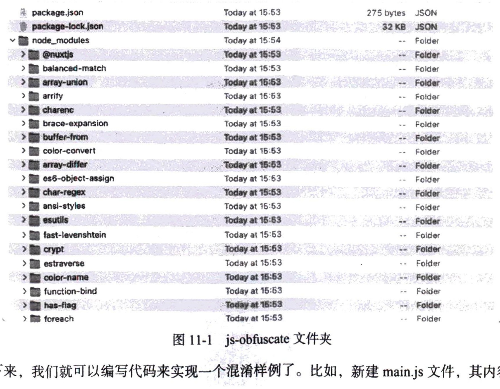
接下来,我们就可以编写代码来实现一个混淆样例了。比如,新建main.js文件,其内容如下:
const code =
let x = '1' + 1
console.log('x', x)const options = {
compact: false,
controlFlowFlattening: true
}
const obfuscator = require('javascript-obfuscator')
function obfuscate (code, options) {
return obfuscator.obfuscate(code, options).getObfuscatedCode()
}
console.log(obfuscate (code, options))这里我们定义了两个变量:一个是code,即需要被混淆的代码;另一个是混淆选项 options,是一个Object。接下来,我们引入了javascript-obfuscator这个库,然后定义了一个方法,给其传入 code和 options 来获取混淆后的代码,最后控制台输出混淆后的代码。代码逻辑比较简单,我们来执行一下代码:
node main.js输出结果如下:
var _0x53bf = ['log'];
(function(_0x1d84fe, _0x3aedao) {
var _0x10a5a = function (_0x2f0a52) {
while (--_0x2f0a52) {
_0x1d84fe['push'](_0x1d84fe['shift']());
}
};
_0x10a5a(++_0x3aeda0);
}(_0x53bf, 0x172));
var _0x480a = function (_0x4341e5, _0x5923b4) {
_0x4341e5 = 0x4341e5 - 0x0;
var _0xb3622e = _0x53bf[_0x4341e5];
return _0xb3622e;
};
let x = '1' + 0x1;
console[_0x480a('0x0')]('x', x);看到了吧,那么简单的代码,被我们混淆成了这个样子,其实这里我们就是设定了“控制流平坦化”选项。整体看来,代码的可读性大大降低了,JavaScript 调试的难度也大大加大了。好,那么我们来跟着 javascript-obfuscator 走一遍,就能具体知道 JavaScript 混淆到底有多少方法了。
代码压缩
这里 javascript-obfuscator 也提供了代码压缩的功能,使用其参数 compact 即可完成 JavaScript 代码的压缩,输出为一行内容。参数 compact 的默认值是true,如果定义为false,则混淆后的代码会分行显示。示例如下:
const code =
let x = '1' + 1
console.log('x', x)这里我们先把代码压缩选项的参数 compact 设置为 false,运行结果如下:
const options = {
compact: false
}
let x = '1' + 0x1;
console['log']('x', x);如果不设置 compact 或把 compact 设置为 true,结果如下:
var _0x151c=['log']; (function(_0x1ce384,_0x20a7c7){var _0x25fc92=function(_0x188aec){while(--_0x188aec)
{_0x1ce384['push'](_0x1ce384['shift']());}};_0x25fc92(++_0x20a7c7);}(_0x151c,0x1b7)); var _0x553e=function
(_0x259219,_0x241445){_0x259219=_0x259219-0x0;var _0x56d72d=_0x151c[_0x259219]; return _0x56d72d;}; let x=
'1'+0x1; console[_0x553e('Ox0')]('x',x);可以看到,单行显示的时候,对变量名进行了进一步的混淆,这里变量的命名都变成了十六进制形式的字符串,这是因为启用了一些默认压缩和混淆配置。总之,我们可以看到代码的可读性相比之前大大降低了。
变量名混淆
变量名混淆可以通过在 javascript-obfuscator 中配置 identifierNamesGenerator 参数来实现。我们通过这个参数可以控制变量名混淆的方式,如将其值设为 hexadecimal,则会将变量名替换为十六进制形式的字符串。该参数的取值如下。
hexadecimal: 将变量名替换为十六进制形式的字符串,如 0xabc123。
mangled: 将变量名替换为普通的简写字符,如 a、b、c 等。
该参数的默认值为 hexadecimal。我们将该参数修改为 mangled 来试一下:
const code = `
let hello = '1' + 1
console.log('hello', hello)
`;
const options = {
compact: true,
identifierNamesGenerator: 'mangled'
}运行结果如下:
var a=['hello']; (function(c,d){var
e=function(f){while(--f){c['push'](c['shift']());}};e(++d);}(a,0x9b)); var b=function(c,d){c=c-0x0;var
e=a[c]; return e;}; let hello='1'+0x1; console['log'](b('0x0'), hello);可以看到,这里的变量名都变成了 a、b 等形式。如果我们将 identifierNamesGenerator 修改为 hexadecimal 或者不设置,运行结果如下:
var _0x4e98=['log', 'hello']; (function(_0x4464de,_0x39de6c){var
_Oxdffdda=function(_0x6a95d5){while(--_0x6a95d5){_0x4464de['push'](_0x4464de['shift']());}};_0xdffdda(++_
0x39de6c);}(_0x4e98,0xc8));var _0x53cb=function(_0x393bda,_0x8504e7){_0x393bda=_0x393bda-0x0;var
_0x46ab80=_0x4e98[_0x393bda]; return _0x46ab80;};let
hello='1'+0x1; console[_0x53cb('0x0')](_0x53cb('0x1'), hello);可以看到,选用了 mangled,其代码体积会更小,但选用 hexadecimal 的可读性会更低。另外,我们还可以通过设置 identifiersPrefix 参数来控制混淆后的变量前缀,示例如下:
const code = `
let hello = '1' + 1
console.log('hello', hello)
`;const options = {
identifiersPrefix: 'germey'
}运行结果如下:
var germey_0x3dea=['log', 'hello']; (function(_0x348ff3,_0x5330e8){var _0x1568b1=function(_0x4740d8){while
(--_0x4740d8){_0x348ff3['push'](_0x348ff3['shift']());}};_0x1568b1(++_0x5330e8);}(germey_0x3dea, 0x94));
var germey_0x30e4=function(_0x2e8f7c,_0x1066a8){_0x2e8f7c=_0x2e8f7c-0x0;var _0x5166ba=germey_0x3dea
[_0x2e8f7c]; return _0x5166ba; }; let hello='1'+0x1; console[germey_0x30e4('Ox0')](germey_0x30e4('0x1'), hello);可以看到,混淆后的变量前缀加上了我们自定义的字符串 germey。另外,renameGlobals 这个参数还可以指定是否混淆全局变量和函数名称,默认值为false。示例如下:
const code = `
var $ = function(id) {
return document.getElementById(id);
};
`
const options = {
renameGlobals: true
}运行结果如下:
var _0x4864b0=function(_0x5763be){return document['getElementById'](_0x5763be);};可以看到,这里我们声明了一个全局变量$,在renameGlobals 设置为true之后,$这个变量也被替换了。如果后文用到了这个$对象,可能就会有找不到定义的错误,因此这个参数可能导致代码执行不通。如果我们不设置 renameGlobals 或者将其设置为false,结果如下:
var _0x239a=['getElementById'); (function(_0x3f45a3,_0x583dfa){var _0x2cade2=function(_0x28479a){while
(--_0x28479a){_0x3f45a3['push'](_0x3f45a3['shift']());}};_0x2cade2(++_0x583dfa);}(_0x239a,0xe1));
var _0x3758=function(_0x18659d,_0x50c21d){_0x18659d=_0x18659d-0x0;var _0x531b8d=_0x239a[_0x18659d];
return _0x531b8d;}; var $=function(_0x3d8723){return document[_0x3758('0x0')](_0x3d8723);};可以看到,最后还是有$的声明,其全局名称没有被改变。
字符串混淆
字符串混淆,即将一个字符串声明放到一个数组里面,使之无法被直接搜到。这可以通过stringArray 参数来控制,默认为true。此外,我们还可以通过 rotateStringArray 参数来控制数组化后结果的元素顺序,默认为true。还可以通过 stringArrayEncoding 参数来控制数组的编码形式,默认不开启编码。如果将其设置为true 或base64,则会使用 Base64编码;如果设置为rc4,则会使用RC4编码。另外,可以通过stringArrayThreshold来控制启用编码的概率,其范围为0到1,默认值为0.8。示例如下:
const code = `
var a = 'hello world'
`
const options = {
stringArray: true,
rotateStringArray: true,
stringArrayEncoding: true, // 'base64' 或'rc4' 或false
stringArray Threshold: 1,
}运行结果如下:
var _0x4215=['aGVsbG8gd29ybGQ=']; (function(_0x42bf17,_0x4c348f){var _0x328832=function(_0x355be1){while
(--_0x355be1){_0x42bf17['push'](_0x42bf17['shift']());}};_0x328832(++_0x4c348f);}(_0x4215,0x1da));
var _0x5191=function(_0x3cf2ba,_0x1917d8){_0x3cf2ba=_0x3cf2ba-0x0;var _0x1f93f0=_0x4215[_0x3cf2ba];
if(_0x5191['LqbVDH' ] ===undefined){(function(){var _0x5096b2;try{var _0x282db1=Function('return\x20
(function()\x20'+'{}.constructor(\x22return\x20this\x22)(\x20)'+');');_0x5096b2=_0x282db1();}catch
(_0x2acb9c){_0x5096b2=window; }var _0x388c14='ABCDEFGHIJKLMNOPQRSTUVWXYZabcdefghijklmnopqrstuvwxyz
0123456789+/=';_0x5096b2['atob']||(_0x5096b2['atob']=function(_0x4cc27c){var _0x2af4ae=String(_0x4cc27c)
['replace'](/=+$/,''); for(var _0x21400b=0x0,_0x3f4e2e,_0x5b193b,_0x233381=0x0,_0x3dccf7='';_0x5b193b=_Ox2af4ae['charAt'](_0x233381++);~_0x5b193b&&(_0x3f4e2e=_0x21400b%0x4?_0x3f4e2e*0x40+_0x5b193b:_0x5b193b,
_0x21400b++%0x4)?_0x3dccf7+=String['fromCharCode'](Oxff&_0x3f4e2e>>(-0x2*_0x21400b&0x6)):0x0){_0x5b193b=_
0x388c14['indexOf'](_0x5b193b); } return _0x3dccf7;});}());_0x5191['DuIurT']=function(_0x51888e)
{var _0x29801f=atob(_0x51888e); var _0x561e62=[]; for(var _0x5dd788=0x0,_0x1a8b73=_0x29801f['length'];
_0x5dd788<_0x1a8b73;_0x5dd788++){_0x561e62+='%'+('00'+_0x29801f['charCodeAt'](_0x5dd788)['toString'](0x10
))['slice'](-0x2); } return decodeURIComponent(_0x561e62);};_0x5191['mgoBRd']={};_0x5191['LqbVDH']=!![];}var
_0x1741f0=_0x5191['mgoBRd'][_0x3cf2ba];
if(_0x1741f0===undefined){_0x1f93f0=_0x5191['DuIurT'](_0x1f93f0);_
0x5191['mgoBRd'][_0x3cf2ba]=_0x1f93f0;}else{_0x1f93f0=_0x1741f0; } return _0x1f93f0;}; var a=_0x5191('0x0');可以看到,这里就把字符串进行了 Base64编码,我们再也无法通过查找的方式找到字符串的位置了。如果将 stringArray 设置为false的话,输出就是这样:var a='hello\x20world';字符串就仍然是明文显示的,没有被编码。另外,我们还可以使用 unicodeEscapeSequence 这个参数对字符串进行Unicode 转码,使之更加难以辨认,示例如下:const code = `var a = 'hello world'
const options = {
compact: false,unicodeEscape Sequence: true
}运行结果如下:
var 0x5c0d = ['\x68\x65\x6c\x6C\x6f\x20\x77\x6f\x72\x6c\x64'];
(function (_0x54cc9c, _0x57a3b2) {
var _0xf833cf = function (_0x3cd8c6) {
while (--_0x3cd8c6) {
_0x54cc9c['push'](_0x54cc9c['shift']());
}
};
_0xf833cf(++_0x57a3b2);
}(_0x5cod, 0x17d));
var _0x28e8 = function (_0x3fd645, _0x2cf5e7) {
};
_0x3fd645 = 0x3fd645 0x0;
var _0x298a20 = _0x5c0d[_0x3fd645];
return _0x298a20;
var a = 0x28e8('0x0');可以看到,这里字符串被数字化和 Unicode 化,非常难以辨认。在很多 JavaScript 逆向的过程中,一些关键的字符串可能会作为切入点来查找加密入口。用了这种混淆之后,如果有人想通过全局搜索的方式搜索 hello 这样的字符串找加密入口,也没法搜到了。
代码自我保护
我们可以通过设置 selfDefending 参数来开启代码自我保护功能。开启之后,混淆后的JavaScript会强制以——行形式显示。如果我们将混淆后的代码进行格式化或者重命名,该段代码将无法执行。
示例如下:
const code = `
console.log('hello world')
`
const options = {
selfDefending: true
}运行结果如下:
var _0x26da=['log', 'hello\x20world']; (function(_0x190327,_0x57c2c0){var _0x577762=function(_0xc9dabb)
{while(--_0xc9dabb){_0x190327['push'](_0x190327['shift']());}};var _0x35976e=function(){var _0x16b3fe=
{'data':{'key': 'cookie', 'value': 'timeout' }, 'setCookie': function(_0x2d52d5,_0x16feda,_0x57cadf,_0x56056f)
{_0x56056f=_0x56056f||{};var _0x5b6dc3=_0x16feda+'='+_0x57cadf; var _0x333ced=0x0; for(var _0x333ced=0x0,
_0x19ae36=_0x2d52d5['length'];_0x333ced<_0x19ae36;_0x333ced++){var _0x409587=_0x2d52d5[_0x333ced];
_0x5b6dc3+=';\x20'+_0x409587; var _0x4aa006=_0x2d52d5[_0x409587];_0x2d52d5['push'](_0x4aa006);_0x19ae36=
_0x2d52d5['length'); if(_0x4aa006!==!! []){_0x5b6dc3+= '=' +_0x4aa006;}}_0x56056f['cookie']=_0x5b6dc3;},
removeCookie': function(){return'dev';}, 'getCookie': function(_0x30c497,_0x51923d){_0x30c497=_0x30c497||
function(_0x4b7e18){return_0x4b7e18;};var _0x557e06=_0x30c497(new RegExp('(?:^|;\x20)' +_0x51923d['replace']
(/([.$?*|{}()[]\+^])/g,'$1')+'=([^;]*)')); var _0x817646=function(_0xf3fae7,_0x5d8208){_0xf3fae7(++_0x5d8208); };
_0x817646(_0x577762,_0x57c2c0); return _0x557e06?decodeURIComponent(_0x557e06[0x1]):undefined;}};
var _0x4673cd=function(){var _0x4c6c5c=new RegExp('\x5cw+\x20\x5c(\x5c)\x20*{\x5cw+\x20*[\x27|\x22].
+[\x27|\x22]; ?\x20*}'); return _0x4c6c5c['test'](_0x16b3fe['removeCookie']['toString']());};_0x16b3fe
['updateCookie']=_0x4673cd;var _0x5baa80='';var _0x1faf19=_0x16b3fe['updateCookie']();if(!_0x1faf19)
{_0x16b3fe['setCookie'](['*'],'counter', 0x1); }else if(_0x1faf19){_0x5baa80=_0x16b3fe['getCookie'](null,
'counter'); }else{_0x16b3fe['removeCookie']();}};_0x35976e();}(_0x26da, 0x140)); var _0x4391=function
(_0x1b42d8,_0x57edc8){_0x1b42d8=_0x1b42d8-0x0;var _0x2fbeca=_0x26da[_0x1b42d8]; return _0x2fbeca;};
var _0x197926=function(){var _0x10598f=!! []; return function(_0xffa3b3,_0x7a40f9){var _0x48e571=
_0x10598f?function(){if(_0x7a40f9){var _0x2194b5=_0x7a40f9['apply'](_0xffa3b3,arguments);_0x7a40f9=null;
return _0x2194b5;}}:function(){};_0x10598f=![];return _0x48e571;};}();var _0x2c6fd7=_0x197926(this,
function(){var _0x4828bb=function(){return'\x64\x65\x76';},_0x35c3bc=function(){return'\x77\x69\x6e\x64\
x6f\x77';};var _0x456070=function(){var _0x4576a4=new RegExp('\x5c\x77\x2b\x20\x2a\x5c\x28\x5c\x29\x20\
x2a\x7b\x5c\x77\x2b\x20\x2a\x5b\x27\x7c\x22\x5d\x22\x26\x5b\x27\x7c\x22\x5d\x36\x3f\x20\x2a\x7d');
return! _0x456070['\x74\x65\x73\x74'](_0x4828bb['\x74\x6f\x53\x74\x72\x69\x6E\x67']());};var _0x3fde69=
function(){var _0xabb6f4=new RegExp('\x28\x5c\x5c\x55\x78\x7c\x75\x5d\x28\x5c\x77\x29\x7b\x32\x2c\x34\
x7d\x29\x2b');return _0xabb6f4['\x74\x65\x73\x74'](_0x35c3bc['\x74\x6f\x53\x74\x72\x69\x6E\x67']());};
var _0x2d9a50=function(_0x58fdb4){var _0x2a6361=~-0x1>>0x1+0xff%0x0;if(_0x58fdb4['\x69\x6E\x64\x65\x78\
x4F\x66']('\x69'===_0x2a6361)){_0xc388c5(_0x58fdb4);}};var _0xc388c5=function(_0x2073d6){var _0x6bb49f=
~-0x4>>0x1+0xff%0x0;if(_0x2073d6['\x69\x6E\x64\x65\x78\x4F\x66']((!![]+'')[0x3])!==_0x6bb49f){_0x2d9a50
(_0x2073d6);}};if(!_0x456070()){if(!_0x3fde69()){_0x2d9a50('\x69\x6E\x64\u0435\x78\x4F\x66');
}else{_0x2d9a50('\x69\x6E\x64\x65\x78\x4F\x66');}}else{_0x2d9a50('\x69\x6E\x64\u0435\x78\x4F\x66');
}});_0x2c6fd7(); console[_0x4391('0x0')](_0x4391('0x1'));如果我们将上述代码放到控制台,它的执行结果和之前是一模一样的,没有任何问题。如果我们将其进行格式化,然后贴到浏览器控制台里面,浏览器会直接卡死无法运行。这样如果有人对代码进行了格式化,就无法正常对代码进行运行和调试,从而起到了保护作用。
控制流平坦化
控制流平坦化其实就是将代码的执行逻辑混淆,使其变得复杂、难读。其基本思想是将一些逻辑处理块都统一加上一个前驱逻辑块,每个逻辑块都由前驱逻辑块进行条件判断和分发,构成一个个闭环逻辑,这导致整个执行逻辑十分复杂、难读。比如说这里有一段示例代码:
console.log(c);
console.log(a);
console.log(b);代码逻辑一目了然,依次在控制台输出了c、a、b三个变量的值。但如果把这段代码进行控制流平坦化处理,代码就会变成这样:
const s = "3|1|2".split("|");
let x = 0;while (true) {
switch (s[x++]) {
case "1":
console.log(a);
continue;
case "2":
console.log(b);
continue;
case "3":
console.log(c);
continue;
}
break;
}可以看到,混淆后的代码首先声明了一个变量s,它的结果是一个列表,其实是["3", "1", "2"],然后下面通过 switch语句对s中的元素进行了判断,每个case 都加上了各自的代码逻辑。通过这样的处理,一些连续的执行逻辑就被打破了,代码被修改为一个switch语句,原本我们可以一眼看出的逻辑是控制台先输出c,然后才是a、b,但是现在我们必须结合 switch 的判断条件和对应 case 的内容进行判断,我们很难再一眼看出每条语句的执行顺序了,这大大降低了代码的可读性。在javascript-obfuscator中,我们通过 controlFlowFlattening 变量可以控制是否开启控制流平坦化,示例如下:
const options = {
compact: false,
controlFlowFlattening: true
}使用控制流平坦化可以使得执行逻辑更加复杂、难读,目前非常多的前端混淆都会加上这个选项。但启用控制流平坦化之后,代码的执行时间会变长,最长达1.5倍之多。另外,我们还能使用 controlFlowFlatteningThreshold 这个参数来控制比例,取值范围是0到1,默认值为0.75。如果将该参数设置为0,那相当于将 controlFlowFlattening 设置为false,即不开启控制流扁平化。
无用代码注入
无用代码即不会被执行的代码或对上下文没有任何影响的代码,注入之后可以对现有的 JavaScript代码的阅读形成干扰。我们可以使用 deadCodeInjection 参数开启这个选项,其默认值为false。比如,这里有一段代码:
const a = function() {
console.log("hello world");
};const b = function() {
console.log("nice to meet you");
};a();
b();这里声明了方法a和b,然后依次进行调用,分别输出两句话。经过无用代码注入处理之后,代码就会变成类似这样:
const 0x16c18d = function () {
if (!![[]]) {
console.log("hello world");
} else {
console.log("this");console.log("is");
console.log("dead");
console.log("code");
}
};
const _0x1f7292 = function () {
if ("xmv2n0dfy2N".charAt(4) !== String.fromCharCode(110)) {
console.log("this");
console.log("is");
console.log("dead");
console.log("code");
} else {
console.log("nice to meet you");
}
};
_0x16c18d();
_0x1f7292();可以看到,每个方法内部都增加了额外的 if…else语句,其中if 的判断条件还是一个表达式,其结果是 true 还是 false 我们还不能一眼看出来,比如说_0x1f7292这个方法,它的if判断条件是:
"xmv2n0dfy2N".charAt(4) !== String.fromCharCode(110)在不等号前面其实是从字符串中取出指定位置的字符,不等号后面则调用了fromCharCode 方法来根据 ASCII 码转换得到一个字符,然后比较两个字符的结果是否是不一样的。前者经过推算,我们可以知道结果是 n;但对于后者,多数情况下我们还得去查一下 ASCII 码表,才能知道其结果也是 n。最后两个结果是相同的,整个表达式的结果是 false,所以 if后面跟的逻辑实际上就是不会被执行到的无用代码,但这些代码对我们阅读代码起到了一定的干扰作用。因此,这种混淆方式通过混入一些特殊的判断条件并加入一些不会被执行的代码,可以对代码起到一定的混淆、干扰作用。在javascript-obfuscator中,我们可以通过 deadCodeInjection 参数控制无用代码的注入,配置如下:
const options = {
compact: false,
deadCodeInjection: true
}另外,我们还可以通过设置 deadCodeInjectionThreshold 参数来控制无用代码注入的比例。该参数的取值范围为0到1,默认值是0.4。
对象键名替换
如果是一个对象,可以使用 transformObjectKeys 来对对象的键值进行替换,示例如下:const code =
(function(){
var object = {
foo: 'test1',
bar: {
baz: 'test2'
}
};
})();
const options = {
compact: false,
transformObjectKeys: true
}输出结果如下:
var _0x7a5d = ['bar','test2','test1'];
(function(_0x59fec5, 0x2e4fac) {
var _0x231e7a = function (_0x46f33e) {
while (--_0x46f33e) {
_0x59fec5['push'](_0x59fec5['shift']());
}
};
_0x231e7a(++_0x2e4fac);
}(_0x7a5d, 0x167));
var _0x3bc4 = function (_0x309ad3, _0x22d5ac) {
_0x309ad3 = 0x309ad3 - 0x0;
var _0x3a034e = _0x7a5d[_0x309ad3];
return _0x3a034e;
};
(function () {
var _0x9f1fd1 = {};
_0x9f1fd1['foo'] = _0x3bc4('0x0');
_0x9f1fd1[_0x3bc4('0x1')] = {};
_0x9f1fd1[_0x3bc4('0x1')]['baz'] = _0x3bc4('0x2');
}());可以看到,Object的变量名被替换为了特殊的变量,代码的可读性变差,这样我们就不好直接通过变量名进行搜寻了,这也可以起到一定的防护作用。
禁用控制台输出
我们可以使用 disableConsoleOutput 来禁用掉 console.log输出功能,加大调试难度,示例如下:const code =
console.log('hello world')
const options = {
disableConsoleOutput: true
}运行结果如下:
var _0x3a39=['debug','info', 'error', 'exception', 'trace', 'hello\x20world', 'apply', '{}.constructor
(\x22return\x20this\x22)(\x20)', 'console', 'log', 'warn']; (function(_0x2a157a,_0x5d9d3b){var _0x488e2c=
function(_0x5bcb73){while(--_0x5bcb73){_0x2a157a['push'](_0x2a157a['shift']());}};_0x488e2c(++_0x5d9d3b);
}(_0x3a39,0x10e)); var _0x5bff=function(_0x43bdfc,_0x52e4c6){_0x43bdfc=_0x43bdfc-0x0;var _0xb67384=_0x3a39
[_0x43bdfc]; return _0xb67384;}; var _0x349b01=function(){var _0x1f484b=!![]; return function(_0x5efeod,
_0x33db62){var _0x20bcd2=_0x1f484b?function(){if(_0x33db62){var _0x77054c=_0x33db62[_0x5bff('0x0')]
(_0x5efeod, arguments);_0x33db62=null; return _0x77054c;}}:function(){};_0x1f484b=![]; return _0x20bcd2;};}();
var _0x19f538=_0x349b01(this, function(){var _0x7ab6e4=function(){};var _0x157bff;try{var _0x5e672c=Function
('return\x20(function()\x20'+_0x5bff('0x1')+');');_0x157bff=_0x5e672c();}catch(_0x11028d){_0x157bff=window;}
if(!_0x157bff[_0x5bff('0x2')]){_0x157bff[_0x5bff('0x2')]=function(_0x7ab6e4){var _0x5a8d9e={};_0x5a8d9e
[_0x5bff('0x3')]=_0x7ab6e4;_0x5a8d9e[_0x5bff('0x4')]=_0x7ab6e4;_0x5a8d9e[_0x5bff('0x5')]=_0x7ab6e4;
_0x5a8d9e[_0x5bff("0x6')]=_0x7ab6e4;_0x5a8d9e[_0x5bff('0x7')]=_0x7ab6e4;_0x5a8d9e[_0x5bff('0x8')]=
0x7ab6e4;_0x5a8d9e[_0x5bff('0x9')]=_0x7ab6e4; return _0x5a8d9e;}(_0x7ab6e4); }else{_0x157bff[_0x5bff('0x2')]
[_0x5bff('0x3')]=_0x7ab6e4;_0x157bff[_0x5bff('0x2')][_0x5bff('0x4')]=_0x7ab6e4;_0x157bff[_0x5bff('0x2')]
['debug']=_0x7ab6e4;_0x157bff[_0x5bff('0x2')][_0x5bff('0x6')]=_0x7ab6e4;_0x157bff[_0x5bff('0x2')][_0x5bff
('0x7')]=_0x7ab6e4;_0x157bff[_0x5bff('0x2')][_0x5bff('0x8')]=_0x7ab6e4;_0x157bff[_0x5bff('0x2')][_0x5bff
('0x9')]=_0x7ab6e4;}});_0x19f538(); console[_0x5bff('0x3')](_0x5bff('oxa'));此时,我们如果执行这段代码,发现是没有任何输出的,这里实际上就是将 console 的一些功能禁用了。
调试保护
我们知道,如果在JavaScript 代码中加入 debugger 关键字,那么执行到该位置的时候,就会进入断点调试模式。如果在代码多个位置都加入 debugger 关键字,或者定义某个逻辑来反复执行 debugger,
就会不断进入断点调试模式,原本的代码就无法顺畅执行了。这个过程可以称为调试保护,即通过反复执行 debugger 来使得原来的代码无法顺畅执行。其效果类似于执行了如下代码:
setInterval(() => {debugger; }, 3000)如果我们把这段代码粘贴到控制台,它就会反复执行debugger 语句,进入断点调试模式,从而干扰正常的调试流程。在javascript-obfuscator中,我们可以使用 debugProtection 来启用调试保护机制,还可以使用debugProtectionInterval 来启用无限调试(debug),使得代码在调试过程中不断进入断点模式,无法顺畅执行。配置如下:
const options = {
debugProtection: true,
debugProtectionInterval: true,
};混淆后的代码会不断跳到 debugger 代码的位置,使得整个代码无法顺畅执行,对JavaScript 代码的调试形成一定的干扰。
域名锁定
我们还可以通过控制 domainLock 来控制 JavaScript代码只能在特定域名下运行,这样就可以降低代码被模拟或盗用的风险。示例如下:const code=
console.log('hello world')
const options = {
domainLock: ['cuiqingcai.com']
}这里我们使用 domainLock 指定了一个域名 cuiqingcai.com,也就是设置了一个域名白名单,混淆后的代码结果如下:
var _0x3203=['apply', 'return\x20(function()\x20','{}.constructor(\x22return\x20this\x22)(\x20)','item',
'attribute', 'value', 'replace', 'length', 'charCodeAt', 'log', 'hello\x20world']; (function(_0x2ed22c,_0x3ad370)
{var _0x49dc54=function(_0x53a786){while(--_0x53a786){_0x2ed22c['push'](_0x2ed22c['shift']());}};_0x49dc54
(++_0x3ad370);}(_0x3203,0x155)); var _0x5b38=function(_0xd7780b,_0x19c0f2){_0xd7780b=_0xd7780b-0x0;
var _0x2d2f44=_0x3203[_0xd7780b); return _0x2d2f44;};var _0x485919=function(){var _0x5cf798=!![];
return function(_0xd1fa29,_0x2ed646){var _0x56abf=_0x5cf798?function(){if(_0x2ed646){var _0x33af63=
_0x2ed646[_0x5b38('0x0')](_0xd1fa29, arguments);_0x2ed646=null; return _0x33af63;}}:function(){};
_0x5cf798=![]; return _0x56abf;};}();var _0x67dcc8=_0x485919(this, function(){var _0x276a31;
try{var _0x5c8be2=Function(_0x5b38('0x1')+_0x5b38('0x2')+');');_0x276a31=_0x5c8be2();}catch(_0x5f1c00)
{_0x276a31=window; } var _0x254a0d=function(){return{'key':_0x5b38('0x3'), 'value':_0x5b38('0x4'),
'getAttribute': function(){for(var _0x5cc3c7=0x0;_0x5cc3c7<0x3e8;_0x5cc3c7--){var _0x35b30b=_0x5cc3c7>0x0;
switch(_0x35b30b) {case!! []: return this[_0x5b38('0x3')]+'_'+this[_0x5b38('0x5')]+'_'+_0x5cc3c7; default:this
[_0x5b38('0x3')]+'_'+this[_0x5b38('0x5')];}}}()};}; var _0x3b375a=new RegExp('[QLCIKYKCFzdWpzRAXMhxJOYpTp
YWJHPll]','g'); var _0x5a94d2='cuQLiqiCInKYkgCFzdWcpzRAaXMi.hcoxmJOYpTpYWJHP11'[_0x5b38('0x6')](_0x3b375a,'')['split'](';');var _0x5c0da2;var _0x19ad5d; var _0x5992ca; var _0x40bd39;for(var _0x5cad1 in
0x276a31){if(_0x5cad1[_0x5b38('0x7')]==0x8&&_0x5cad1[_0x5b38('0x8')](0x7)==0x748&_0x5cad1[_0x5b38('0x8')]
(0x5)==0x65&&_0x5cad1[_0x5b38('0x8')](0x3)==0x75&&_0x5cad1[_0x5b38('0x8')](0x0)==0x64){_0x5c0da2=_0x5cad1;
break;}}for(var _0x29551 in_0x276a31[_0x5c0da2]){if(_0x29551[_0x5b38('0x7')]==0x6&&_0x29551[_0x5b38('0x8')]
(0x5)==0x6e88_0x29551[_0x5b38('0x8')](0x0)==0x64){_0x19ad5d=_0x29551;break;}}if(!('~'>_0x19ad5d)){for(
var _0x2b71bd in _0x276a31[_0x5c0da2]){if(_0x2b71bd[_0x5b38('0x7')]==0x888_0x2b71bd[_0x5b38('0x8')](0x7)
==0x6e&&_0x2b71bd[_0x5b38('0x8')](0x0)==0x6c){_0x5992ca=_0x2b71bd;break;}}for(var _0x397f55 in _0x276a31
[_0x5c0da2][_0x5992ca]){if(_0x397f55['length']==0x888_0x397f55[_0x5b38('0x8')](0x7)==0x65&&_0x397f55
[_0x5b38('0x8')](0x0)==0x68){_0x40bd39=_0x397f55;break;}}}if(!_0x5c0da2||!_0x276a31[_0x5c0da2]){return;}var _0x5f19be=_0x276a31[_0x5c0da2][_0x19ad5d]; var _0x674f76=!!_0x276a31[_0x5c0da2][_0x5992ca]&&_0x276a31
[_0x5c0da2][_0x5992ca][_0x40bd39]; var _0x5e1b34=_0x5f19be||_0x674f76;if(!_0x5e1b34){return;}var _0x593394=![];for(var _0x479239=0x0;_0x479239<_0x5a94d2['length']; _0x479239++){var _0x19ad5d=_0x5a94d2[_0x479239];var _0x112c24=_0x5e1b34['length']-_0x19ad5d['length']; var _0x51731c=_0x5e1b34['indexOf'](_0x19ad5d,
_0x112c24);var _0x173191=_0x51731c!==-0x188_0x51731c===_0x112c24;if(_0x173191){if(_0x5e1b34['length']==
_0x19ad5d[_0x5b38('0x7')]||_0x19ad5d['indexOf']('.')===0x0){_0x593394=!![];}}}if(!_0x593394){data; }else
{return;}_0x254a0d();});_0x67dcc8(); console[_0x5b38('0x9')](_0x5b38('Oxa'));这段代码就只能在指定域名 cuiqingcai.com 下运行,不能在其他网站运行。这样的话,如果一些相关 JavaScript 代码被单独剥离出来,想在其他网站运行或者使用程序模拟运行的话,运行结果只有失败,这样就可以有效降低代码被模拟或盗用的风险。
特殊编码
另外,还有一些特殊的工具包(比如aaencode、jjencode、jsfuck等),它们可以对代码进行混淆和编码。示例如下:var a = 1使用jsfuck 工具的结果
[][(![]+[])[!+[]+!![]+!![]]+([]+{})[+!![]]+(!![]+[])[+!![]]+(!![]+[])[+[]]][([]+{})[!+[]+!![]+!![]+!![]+!
![]]+([]+{})[+!![]]+([][[]]+[])[+!![]]+(![]+[])[!+[]+!![]+!![]]+(!![]+[])[+[]]+(!![]+[])[+!![]]+([][[]]+[
])[+[]]+([]+{})[!+[]+!![]+!![]+!![]+!![]]+(!![]+[])[+[]]+([]+{})[+!![]]+(!![]+[])[+!![]]]([][(![]+[])[!+[
]+!![]+!![]]+([]+{})[+!![]]+(!![]+[])[+!![]]+(!![]+[])[+[]]][([]+{})[!+[]+!![]+!![]+!![]+!![]]+([]+{})[+!![]]+([][[]]+[])[+!![]]+
([]+{})[+!![]]+(!![]+[])[+!![]]]((!![]+[])[+!![]]+([][[]]+[])[!+[]+!![]+!![]]+(!![]+[])[+[]]+([][[]]+[])[
+[]]+(!![]+[])[+!![]]+([][[]]+[])[+!![]]+([]+{})[!+[]+!![]+!![]+!![]+!![]+!![]+!![]]+(![]+[])[!+[]+!![]]+
([]+{})[+!![]]+([]+{})[!+[]+!![]+!![]+!![]+!![]]+(+{}+[])[+!![]]+(!![]+[])[+[]]+([][[]]+[])[!+[]+!![]+!![
]+!![]+!![]]+([]+{})[+!![]]+([][[]]+[])[+!![]])(!+[]+!![]+!![]+!![]+!![]))[!+[]+!![]+!![]]+([][[]]+[])[!+
[]+!![]+!![]])(!+[]+!![]+!![]+!![]+!![])(([]+{})[+[]])[+[]]+(!+[]+!![]+!![]+[])+([][[]]+[])[!+[]+!![]])+(
[]+{})[!+[]+!![]+!![]+!![]+!![]+!![]+!![]]+(+!![]使用 aaencode 工具的结果:w/=/'m') // ['_']; o=(°-°) =_=3; c=(°°) =(^-^)-(^-^); (°д°) =(°ѳ°)= (o^_^o)/ (o^_^o); (
Д°)={ ө" : '', " / : ((°°)==3) + '_') [ē˚], - / : ('w°/+ '_') [o^_^o - ("")], д/: ((°-° ==3) +'_')[
-]}; (д)[ө] =((´°ω° /==3) + '_') [c^_^o]; (°д°) ['c'] = ((°д°)+'_') [('-^)+(^-^)-(ө)];(д*) ['o'] = ((°д°)+'_') [ө]; (0°)=(°д°) ['c']+(°д°) ['o']+(° ° / +'')[0]+ (( w° /==3) +'_') ["-*] + ((°д°) +'_') [(^-^)+(^-^)]+ ((°-° ==3) +'_') [˚ ө˚]+((°-° ==3) +'_') [(-) - (ѳ˚)]+(°д°) ['c']+((°д")+'_') [(-)+(^-^)]+ (°д°) ['o']+((°-° ==3) + '_') [ө];(°д°) ['_' ] =(o^_^o) [°o°][0]; (ε)=((-* ==3) +'_') [΄ Θ° ]+ (°д°)." д°/+((°д°)+'_') [(^-^)+(^-^)]+((°-° ==3) +'_') [o^_^o -° ° ]+((°-° ==3) + '_')
[*]+ (w/ +'_') [ ѳ˚]; [°]; (*-*)+=(° ө˚); (°д°) [´є˚]='\\' [° ε ° ]='\\'; (°д°). /=(°д°+°~°) [o^_^o - ()]; (0*-0)=(° =(" w° / +'_') [c^_^o]; (°д°) [°o°]='\"';(°д°) ['_']((゜д゜)['_'] ('є^+(°д° +(°д°)[° 0° ]+ (°Д°)[° ε이
*]+(°°)+ ((o^_^o) +(o^_^o))+ ((o^_^o) +(o^_^o))+ (°Д°)[ɛ]+(°°)+ (°¯¯ )+ (´°°)+ (°д°) [є]+(°°)+ ((o^_^o) +(o^_^o))+ ((o^_^o) - (""))+ (°д°)[° ɛ]+(*^-^*)+ (c^_^o)+ (°д°)[є]+(°°)+ (−)+ (°이*)+(°Д°)[°]+(-)+ (c^^o)+ (°д°)[°]+((°-°) + (o^_^o))+((´°-°) + (´°°)) + (°д°) [є]+(-)+(c^_^o)+ (°д°)[°]+((o^_^o) +(o^_^o))+("")+ (°д°)[0])(*)) (("")+(°д°)[ε]+((*-*)+(Θ°))+(°°)+(°д°)[0]);使用jjencode 工具的结果:
$=~[]; $={_:++$,$$$$:(![]+"")[$],$:++$,$_$_:(![]+"")[$],_$_:++$,$_$$:({}+"")[$],$$_$:($[$]+"")[$],_$$:
++$,$$$_:(!""+"") [$], $ : ++$, $ $:++$, $$ :({}+"")[$], $$_:++$, $$$:++$, $+$, $$: ++$}; $.$_=($.$_=$+"") [
$.$_$]+($._$=$.$_{$._$])+($.$$=($.$+"")[$._$])+((!$)+"")[$._$$]+($._=$.$_$$$_])+($.$=(!""+"")[$._$])+($._=(!""+"")[$. $_])+$.$ [$.$_$ ]+$+$.$+$.$;$.$$=$.$+(!""+"") [$._$$]+$._ +$._+$.$+$.$$;$.$=($.___)[$.$_][$.$_];$.$($.$($.$$+"\""+"\\"+$._$+$.$$+$.$$_+$.$_$_+"\\"+$._ $+$.$$_+$._$_+"\\"+$.$+$+$.$_$_+"\\"+$.$_+$.__+"=\\"+$. $+$.__+$.__$+"\"")())();
可以看到,通过这些工具,原本非常简单的代码被转化为一些几乎完全不可读的代码,但实际上运行效果还是相同的。这些混淆方式比较另类,看起来虽然没有什么头绪,但实际上找到规律是非常好还原的,并没有真正达到强力混淆的效果。
以上便是对 JavaScript 混淆方式的介绍和总结。总的来说,经过混淆的JavaScript 代码的可读性大大降低,同时其防护效果也大大增强。
5. WebAssembly
随着技术的发展,WebAssembly 逐渐流行起来。不同于JavaScript 混淆技术,WebAssembly 的基本思路是将一些核心逻辑使用其他语言(如C/C++语言)来编写,并编译成类似字节码的文件,并通过JavaScript 调用执行,从而起到二进制级别的防护作用。WebAssembly 是一种可以使用非 JavaScript 编程语言编写代码并且能在浏览器上运行的技术方案,比如我们能将C/C++文件利用 Emscripten 编译工具转成 wasm格式的文件,JavaScript可以直接调用该文件执行其中的方法。WebAssembly 是经过编译器编译之后的字节码,可以从C/C++编译而来,得到的字节码具有和JavaScript 相同的功能,运行速度更快,体积更小,而且在语法上完全脱离 JavaScript,同时具有沙盒化的执行环境。比如,这就是一个基本的WebAssembly 示例:
WebAssembly.compile(new Uint8Array(`00 61 73 6d 01 00 00 00 01 0c 02 60 02 7f 7f 01 7f 60 01 7f 01 7f 03 03 02 00 01 07 10 02 03 61 64 64 00 00 06 73 71 75 61 72 65 00 01 0a 13 02 08 00 20 00 20 01 6a 0f 0b 08 00 20 00 20 00 6c 0f 0b
`).trim().split(/[\s\r\n]+/g).map(str => parseInt(str, 16)))
.then(module => {
const instance = new WebAssembly.Instance(module)
const { add, square } = instance.exports
console.log('2 + 4 =', add(2, 4))
console.log('3^2=', square(3))
console.log('(2 + 5)^2 =', square(add(2 + 5)))
})这里其实是利用 WebAssembly定义了两个方法,分别是add 和 square,分别用于求和和开平方计算。那这两个方法是在哪里声明的呢?其实它们被隐藏在 Uint8Array里面。仅仅查看明文代码,我们确实无从知晓里面究竟定义了什么逻辑,但确实是可以执行的。我们将这段代码输入到浏览器控制台下,运行结果如下:
2 + 4 = 6
3^2 = 9
(2 + 5)^2 = 49由此可见,通过 WebAssembly 我们可以成功将核心逻辑“隐藏”起来,这样某些核心逻辑就不能被轻易找出来了。所以,很多网站越来越多地使用 WebAssembly 技术来保护一些核心逻辑不轻易被人识别或破解,可以起到更好的防护效果。
6. 总结
在本节中,我们介绍了接口加密技术和JavaScript 的压缩、混淆技术,也初步了解了WebAssembly技术。知己知彼方能百战不殆,了解了原理,我们才能更好地去实现JavaScript的逆向。本节代码参见:https://github.com/Python3WebSpider/JavaScriptObfuscate。由于本节涉及一些专业名词,部分内容参考来源如下。
javascript-obfuscator 官方 GitHub 仓库。
javascript-obfuscator官网。
阮一峰的“asm.js 和 Emscripten入门教程”。
掘金上的“JavaScript 混淆安全加固”文章。
11.2 浏览器调试常用技巧
在上一节中,我们了解了JavaScript 的压缩、混淆等技术,现在越来越多的网站已经应用这些技术对其数据接口进行保护。在做爬虫时,如果我们遇到了这种情况,可能就不得不硬着头皮去想方设法找出其中隐含的关键逻辑了,这个过程可以称为JavaScript 逆向。既然我们要做 JavaScript 逆向,那少不了要用到浏览器的开发者工具。因为网页是在浏览器中加载的,所以多数的调试过程也是在浏览器中完成的。工欲善其事,必先利其器。本节中,我们先来基于Chrome 浏览器介绍浏览器开发者工具的使用。但由于开发者工具的功能十分复杂,本节主要介绍对JavaScript 逆向有一些帮助的功能,学会了这些,我们在做 JavaScript 逆向调试的过程中会更加得心应手。本节中,我们以一个示例网站 https://spa2.scrape.center/来做演示,用这个示例介绍浏览器开发者工具各个面板的用法。
1. 面板介绍
首先,我们用Chrome 浏览器打开示例网站,页面如图11-2所示。
接下来,打开开发者工具,我们会看到类似图 11-3 所示的结果。
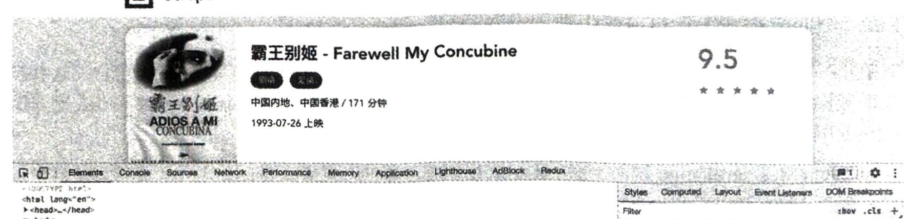
这里可以看到多个面板标签,如Elements、Console、Sources等,这就是开发者工具的一个个面板,功能丰富而又强大。下面先对面板进行简单介绍。
Elements:元素面板,用于查看或修改当前网页HTML节点的属性、CSS属性、监听事件等。HTML 和CSS 都可以即时修改和即时显示。
Console:控制台面板,用于查看调试日志或异常信息。另外,我们还可以在控制台输入JavaScript代码,方便调试。
Sources:源代码面板,用于查看页面的HTML文件源代码、JavaScript 源代码、CSS源代码。此外,还可以在此面板对 JavaScript 代码进行调试,比如添加和修改 JavaScript 断点,观察JavaScript 变量变化等。
Network:网络面板,用于查看页面加载过程中的各个网络请求,包括请求、响应等。
Performance:性能面板,用于记录和分析页面在运行时的所有活动,比如CPU占用情况、呈现页面的性能分析结果。
Memory:内存面板,用于记录和分析页面占用内存的情况,如查看内存占用变化,查看JavaScript 对象和HTML 节点的内存分配。
Application:应用面板,用于记录网站加载的所有资源信息,如存储、缓存、字体、图片等,同时也可以对一些资源进行修改和删除。
Lighthouse:审核面板,用于分析网络应用和网页,收集现代性能指标并提供对开发人员最佳实践的意见。了解了这些面板之后,我们来深入了解几个面板中对 JavaScript 调试很有帮助的功能。
2. 查看节点事件
前面介绍过,我们通过 Elements 面板可以审查页面的节点信息,可以查看当前页面的 HTML 源代码及其在网页中对应的位置,查看某个条目的标题对应的页面源代码,如图11-4所示。
点击右侧的 Styles 选项卡,可以看到对应节点的CSS样式,我们可以自行在这里增删样式,实时预览效果,这对网页开发十分有帮助。在Computed 选项卡中,可以看到当前节点的盒子模型,比如外边距、内边距等,还可以看到当前节点最终计算出的CSS样式,如图11-5所示。
接下来,切换到右侧的Event Listeners 选项卡,这里可以显示各个节点当前已经绑定的事件,都是JavaScript 原生支持的,下面简单列举几个事件。change:HTML 元素改变时会触发的事件。click:用户点击HTML元素时会触发的事件。mouseover:用户在一个HTML 元素上移动鼠标时会触发的事件。mouseout:用户从一个HTML元素上移开鼠标时会触发的事件。keydown:用户按下键盘按键时会触发的事件。load:浏览器完成页面加载时会触发的事件。
通常,我们会给按钮绑定一个点击事件,它的处理逻辑一般是由JavaScript 定义的,这样在我们点击按钮的时候,对应的JavaScript 代码便会执行。比如在图 11-6中,我们选中切换到第2页的节点,右侧 Event Listeners 选项卡下会看到它绑定的事件。
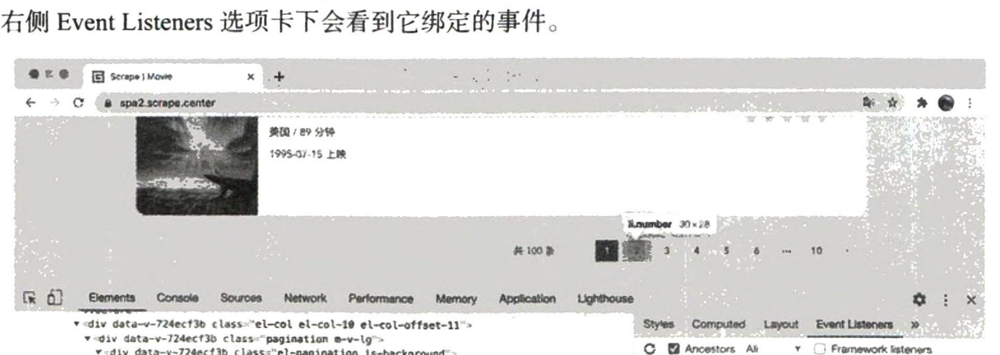
这里有对应事件的代码位置,内容为一个JavaScript 文件名称 chunk-vendors.77daf991.js,然后紧跟一个冒号,接着跟了一个数字7。所以对应的事件处理函数是定义在chunk-vendors.77daf991.js这个文件的第7行。点击这个代码位置,便会自动跳转到 Sources面板,打开对应的chunk-vendors.77daf991.js 文件并跳转到对应的位置,如图11-7所示。
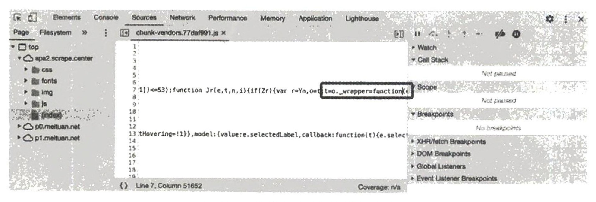
所以,利用好 Event Listeners,我们可以轻松找到各个节点绑定事件的处理方法所在的位置,帮我们在 JavaScript 逆向过程中找到一些突破口。
3. 代码美化
刚才我们已经通过 Event Listeners 找到了对应的事件处理方法所在的位置并成功跳转到了代码所在的位置。但是,这部分代码似乎被压缩过了,可读性很差,根本没法阅读,这时候应该怎么办呢?不用担心,Sources 面板提供了一个便捷好用的代码美化功能。点击代码面板左下角的格式化按钮(如图11-8 所示),代码就会变成如图11-9所示的样子。
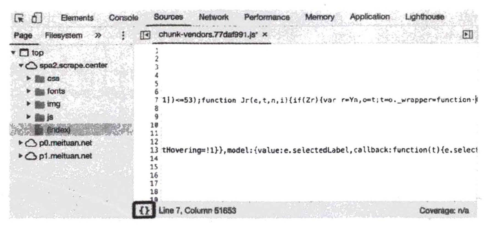
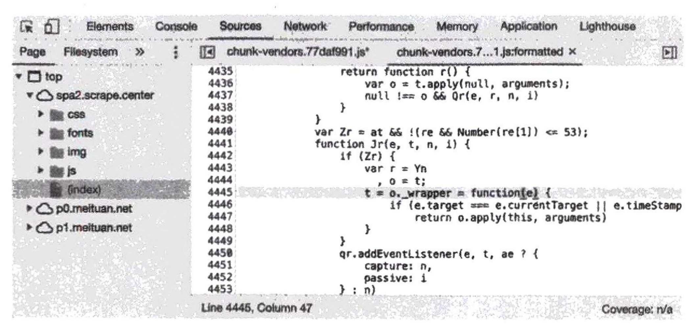
此时会新出现一个叫作 chunk-vendors.77daf991.js: formatted 的选项卡,文件名后面加了 formatted标识,代表这是被格式化的结果。我们会发现,原来代码在第7行,现在自动对应到了第4445行,而且对应的代码位置会高亮显示,代码可读性大大增强!这个功能在调试过程中经常用到,用好这个功能会给我们的JavaScript 调试过程带来极大的便利。
4. 断点调试
接下来,我们介绍一个非常重要的功能——断点调试。在调试代码的时候,我们可以在需要的位置上打断点,当对应事件触发时,浏览器就会自动停在断点的位置等待调试,此时我们可以选择单步调试,在面板中观察调用栈、变量值,以更好地追踪对应位置的执行逻辑。那么断点怎么打呢?我们接着以上面的例子来说。首先单击如图11-10 所示的代码行号。
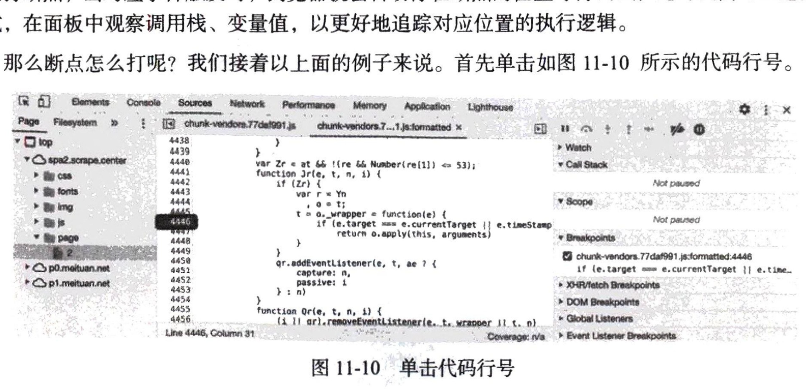
这时候行号处就出现了一个蓝色的箭头,这就证明断点已经添加好了,同时在右侧的Breakpoints选项卡下会出现我们添加的断点的列表。由于我们知道这个断点是用来处理翻页按钮的点击事件的,所以可以在网页里面点击按钮试一下,比如点击第2页的按钮,这时候就会发现断点被触发了,
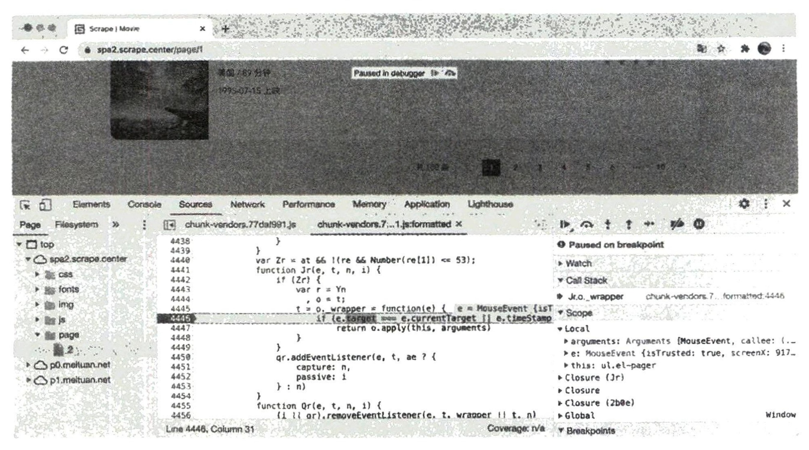
这时候我们可以看到页面中显示了一个叫作 Paused in debugger 的提示,这说明浏览器执行到刚才我们设置断点的位置处就不再继续执行了,等待我们发号施令执行调试。此时代码停在了第4446行,回调参数e就是对应的点击事件 MouseEvent。在右侧的 Scope 面板处,可以观察各个变量的值,比如在 Local 域下有当前方法的局部变量,我们可以在这里看到MouseEvent 的各个属性,
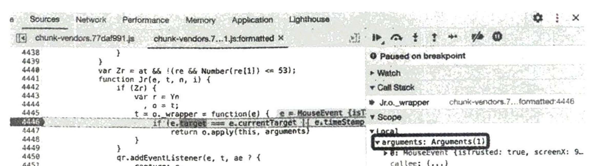
另外,我们关注到有一个方法。,它在Jr方法下面,所以切换到Closure(Jr)域,可以查看它的定义及其接收的参数,如图11-13所示。
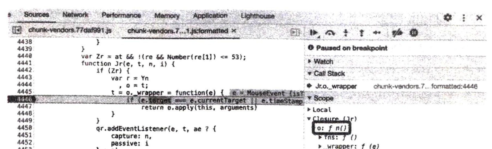
我们可以看到,FunctionLocation 又指向了方法。,点击之后便又可以跳到指定位置,用同样的方式进行断点调试即可。在Scope 面板还有多个域,这里就不再展开介绍了。总之,通过Scope 面板,我们可以看到当前执行环境下变量的值和方法的定义,知道当前代码究竟执行了怎样的逻辑。接下来,切换到Watch 面板,在这里可以自行添加想要查看的变量和方法。点击右上角的+按钮,我们可以任意添加想要监听的对象,如图11-14所示。
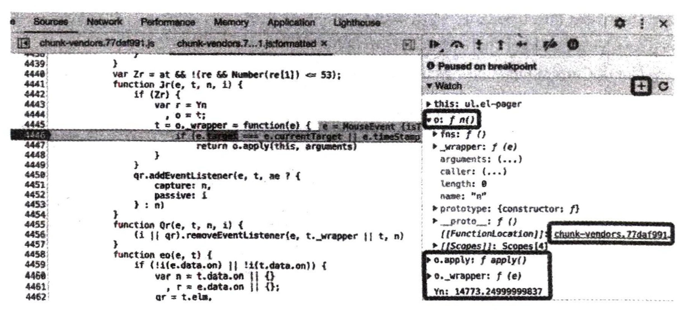
比如这里我们比较关注o.apply 方法,于是点击添加o.apply,这里就会把对应的方法定义呈现出来,展开之后再点击 FunctionLocation 定位其源码位置。我们还可以切换到Console 面板,输入任意的JavaScript代码,此时便会执行、输出对应的结果,如图11-15所示。
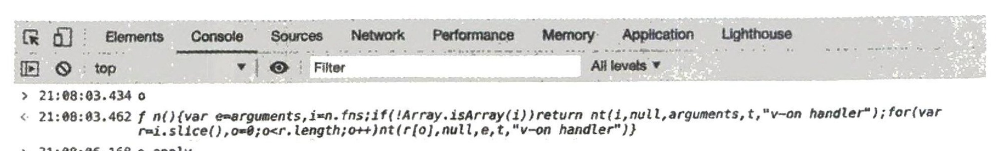
如果我们想看看变量 arguments 的第一个元素是什么,那么可以直接敲入 arguments[0]，此时便会输出对应的结果 MouseEvent。只要在当前上下文能访问到的变量都可以直接引用并输出。此时我们还可以选择单步调试，这里有3个重要的按钮，如图11-16所示。
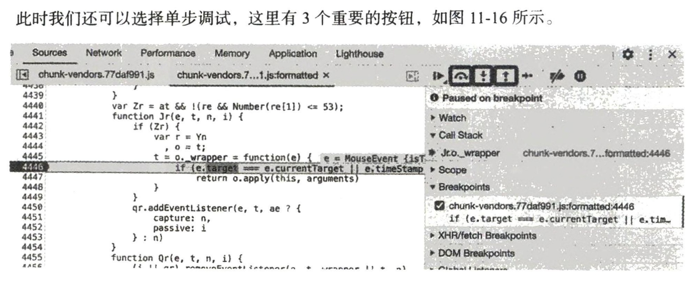
这3个按钮都可以做单步调试，但功能不同。Step Over Next Function Call:逐语句执行。Step Into Next Function Call:进入方法内部执行。Step Out of Current Function:跳出当前方法。用得较多的是第一个，相当于逐行调试。比如，点击 Step Over Next Function Call 按钮，就运行到了4447行，高亮的位置就变成了这一行，如图11-17所示。
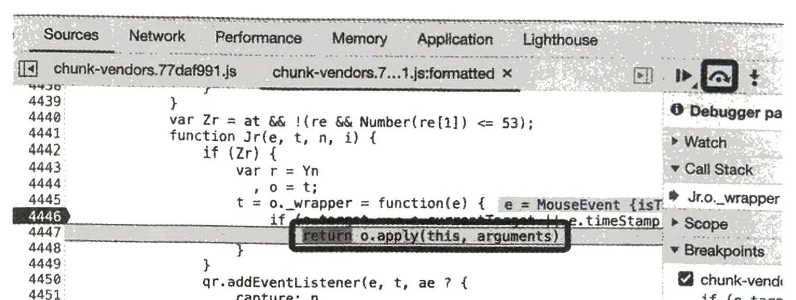
5. 观察调用栈
在调试的过程中,我们可能会跳到一个新的位置,比如点击几下 Step Over Next Function Call 按钮,可能会跳到一个叫作ct的方法中,这时候我们也不知道发生了什么,如图11-18所示。
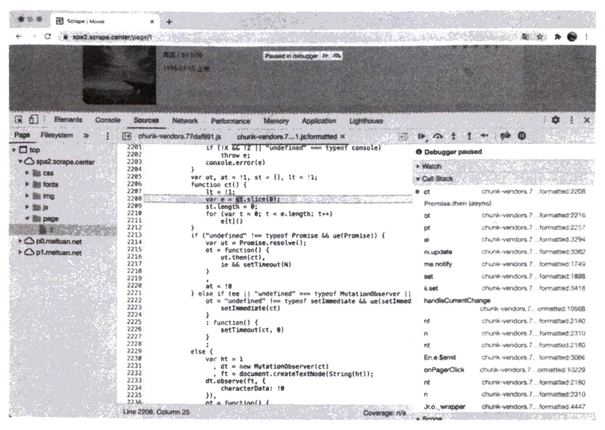
究竟是怎么跳过来的呢?我们观察一下右侧的Call Stack 面板,就可以看到全部的调用过程了。比如它的上一步是ot 方法,再上一步是pt方法,点击对应的位置也可以跳转到对应的代码位置,如图11-19所示。
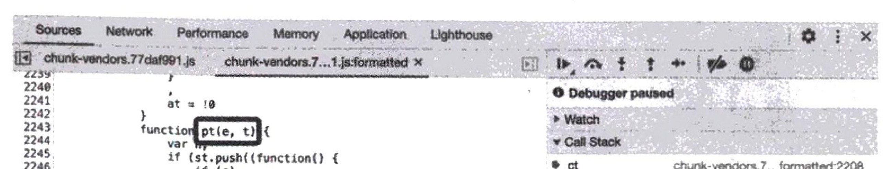
有时候调用栈是非常有用的,利用它我们可以回溯某个逻辑的执行流程,从而快速找到突破口。
6. 恢复 JavaScript 执行
在调试过程中,如果想快速跳到下一个断点或者让 JavaScript 代码运行下去,可以点击 Resume script execution按钮,如图11-20所示。
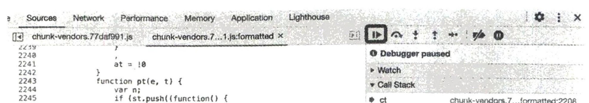
这时浏览器会直接执行到下一个断点的位置,从而避免陷入无穷无尽的调试中。当然,如果没有其他断点了,浏览器就会恢复正常状态。比如这里我们就没有再设置其他断点了,浏览器直接运行并加载了下一页的数据,同时页面恢复正常,如图11-21所示。
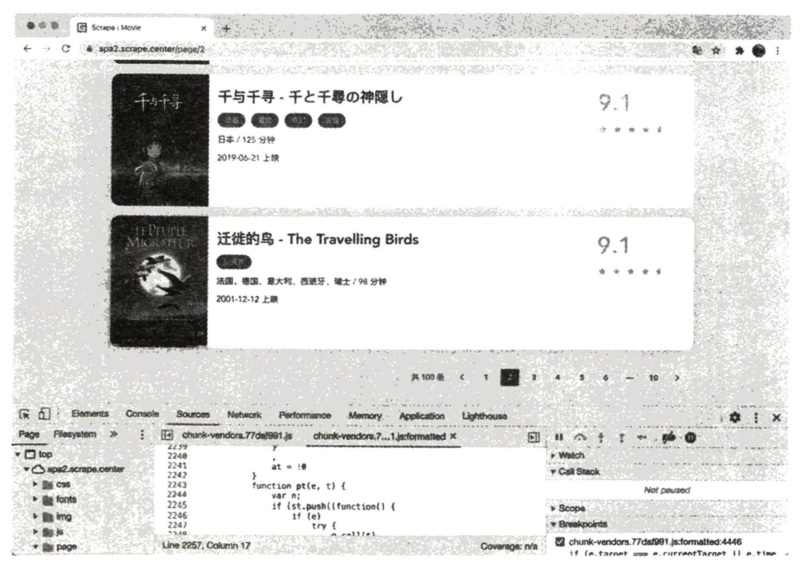
7. Ajax 断点
上面我们介绍了一些DOM 节点的监听器(Listener),通过监听器我们可以手动设置断点并进行调试。但其实针对这个例子,通过翻页的点击事件监听器是不太容易找到突破口的。
接下来我们再介绍一个方法——Ajax 断点,它可以在发生 Ajax请求的时候触发断点。对于这个例子,我们的目标其实就是找到 Ajax请求的那一部分逻辑,找出加密参数是怎么构造的。可以想到,通过Ajax 断点,使页面在获取数据的时候停下来,我们就可以顺着找到构造 Ajax请求的逻辑了。怎么设置呢?我们把之前的断点全部取消,切换到 Sources面板下,然后展开 XHR/fetch Breakpoints,这里就可以设置 Ajax 断点,如图11-22 所示。
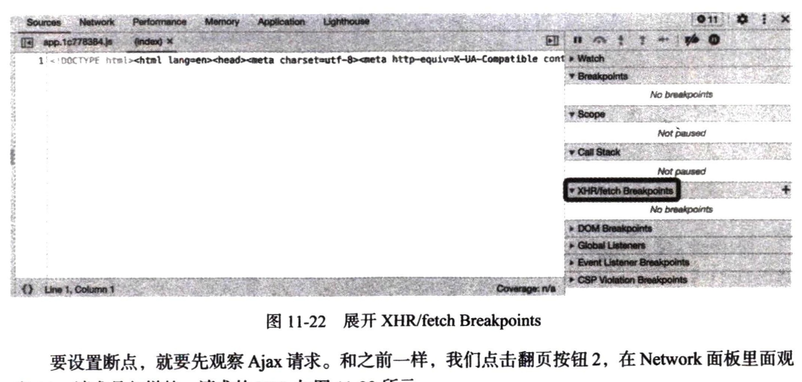
要设置断点,就要先观察 Ajax请求。和之前一样,我们点击翻页按钮2,在Network 面板里面观察 Ajax 请求是怎样的,请求的URL 如图 11-23 所示。
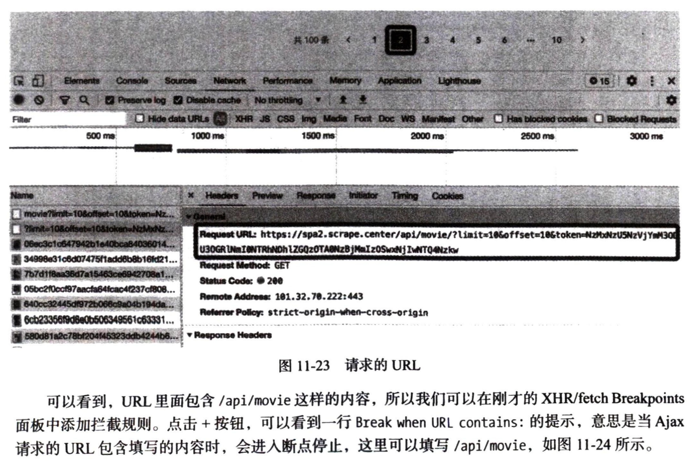
可以看到,URL里面包含/api/movie这样的内容,所以我们可以在刚才的XHR/fetch Breakpoints面板中添加拦截规则。点击+按钮,可以看到一行 Break when URL contains:的提示,意思是当 Ajax请求的URL 包含填写的内容时,会进入断点停止,这里可以填写/api/movie,如图11-24所示。
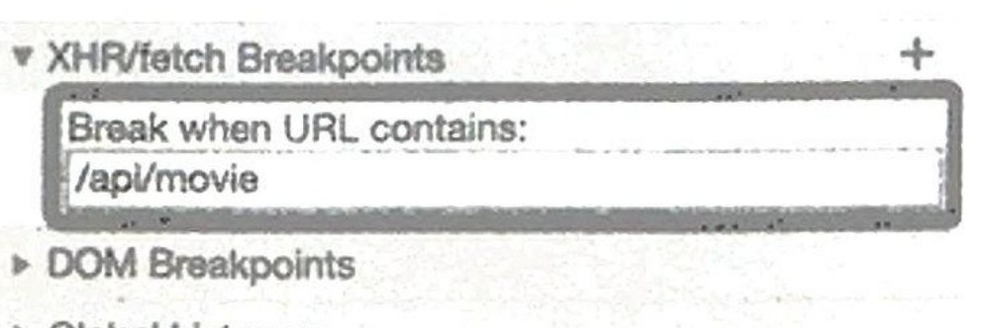
这时候我们再点击翻页按钮3,触发第3页的Ajax请求。会发现点击之后页面走到断点停下来了,如图11-25所示。
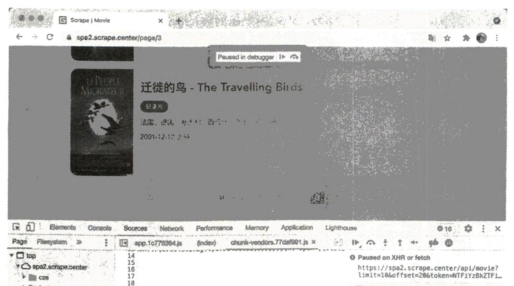
格式化代码看一下,发现它停到了 Ajax 最后发送的那个时候,即底层的 XMLHttpRequest 的 send方法,可是似乎还是找不到 Ajax 请求是怎么构造的。前面我们讲过 Call Stack,通过它可以顺着找到前序调用逻辑,所以顺着它一层层找,也可以找到构造 Ajax 请求的逻辑,最后会找到一个叫作onFetchData 的方法，如图 11-26 所示。
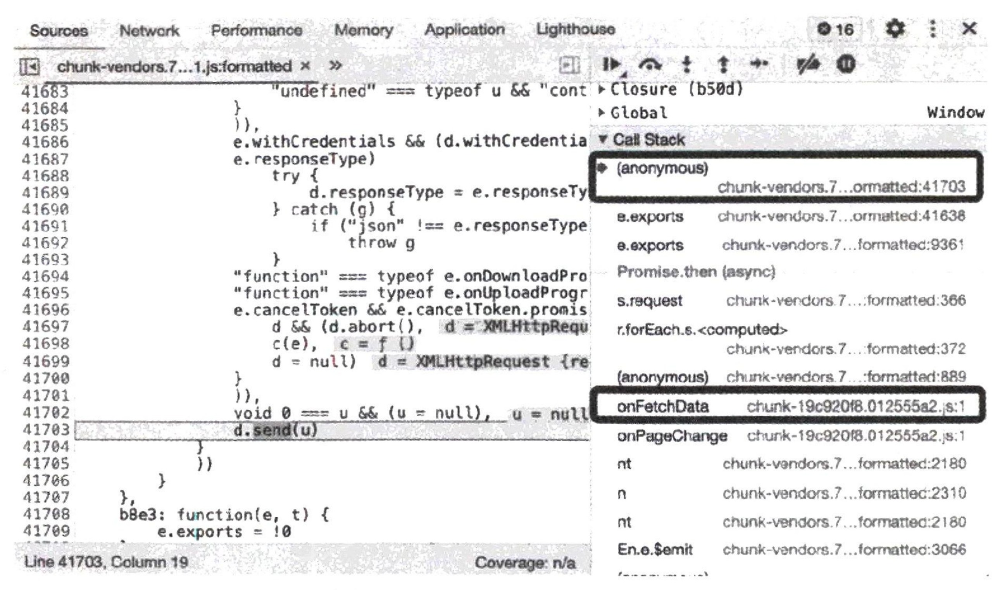
接下来,切换到 onFetchData 方法并将代码格式化,可以看到如图 11-27 所示的调用方法。
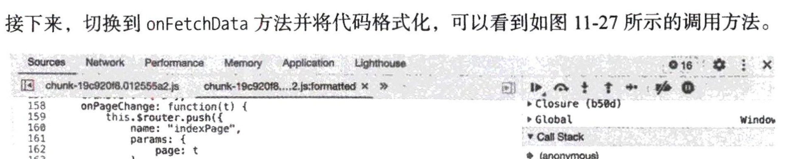
可以发现,这里可能使用 axios 库发起了一个 Ajax 请求,还有 limit、offset、token 这 3 个参数,基本就能确定了,顺利找到了突破口!我们就不在此展开分析了,后文会有完整的分析实战。因此在某些情况下,我们可以比较容易地通过 Ajax 断点找到分析的突破口,这是一个常见的寻找 JavaScript 逆向突破口的方法。要取消断点也很简单,只需要在 XHR/fetch Breakpoints 面板取消勾选即可,如图 11-28 所示。
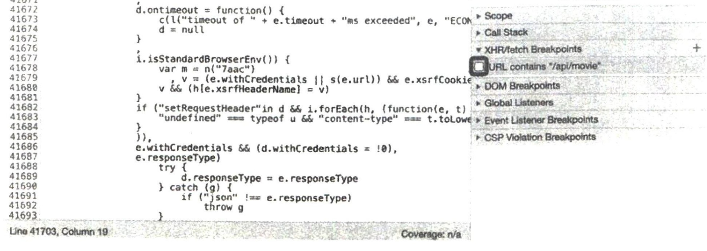
8. 改写 JavaScript 文件
我们知道,一个网页里面的JavaScript 是从对应服务器上下载下来并在浏览器执行的。有时候,我们可能想要在调试的过程中对 JavaScript 做一些更改,比如说有以下需求。
发现 JavaScript 文件中包含很多阻挠调试的代码或者无效代码、干扰代码,想要将其删除。
调试到某处,想要加一行 console.log输出一些内容,以便观察某个变量或方法在页面加载过程中的调用情况。在某些情况下,这种方法比打断点调试更方便。
调试过程遇到某个局部变量或方法,想要把它赋值给 window 对象以便全局可以访问或调用。
在调试的时候,得到的某个变量中可能包含一些关键的结果,想要加一些逻辑将这些结果转发到对应的目标服务器。这时候我们可以试着在 Sources 面板中对 JavaScript 进行更改,但这种更改并不能长久生效,一旦刷新页面,更改就全都没有了。比如我们在JavaScript 文件中写入一行JavaScript代码,然后保存,如图11-29所示。
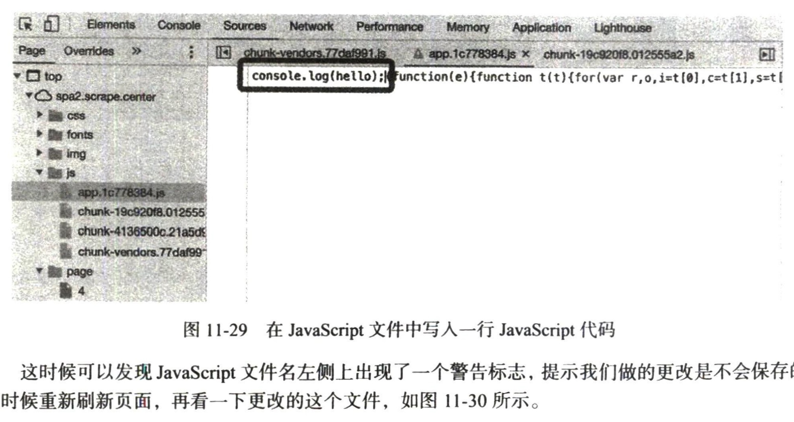
这时候可以发现 JavaScript 文件名左侧上出现了一个警告标志,提示我们做的更改是不会保存的。这时候重新刷新页面,再看一下更改的这个文件,如图11-30所示。
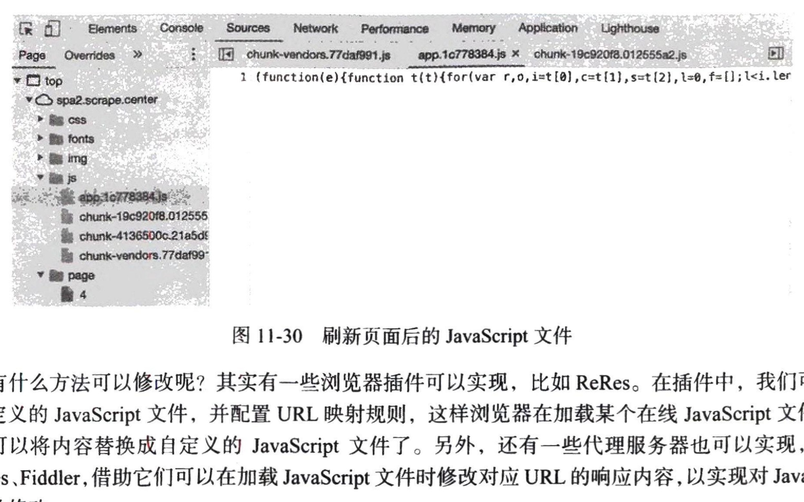
有什么方法可以修改呢?其实有一些浏览器插件可以实现,比如ReRes。在插件中,我们可以添加自定义的 JavaScript文件,并配置 URL 映射规则,这样浏览器在加载某个在线 JavaScript 文件的时候就可以将内容替换成自定义的JavaScript文件了。另外,还有一些代理服务器也可以实现,比如Charles、Fiddler,借助它们可以在加载 JavaScript文件时修改对应URL的响应内容,以实现对 JavaScript文件的修改。其实浏览器的开发者工具已经原生支持这个功能了,即浏览器的 Overrides 功能,它在Sources 面板左侧,如图11-31所示。我们可以在 Overrides 面板上选定一个本地的文件夹,用于保存需要更改的JavaScript文件,下面再实际操作一下。
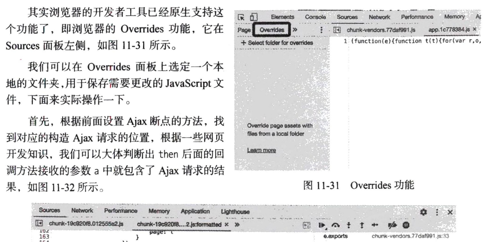
首先,根据前面设置 Ajax 断点的方法,找到对应的构造 Ajax请求的位置,根据一些网页开发知识,我们可以大体判断出 then 后面的回调方法接收的参数a中就包含了Ajax请求的结果,如图11-32所示。
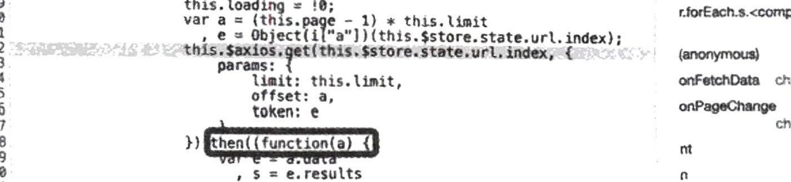
我们打算在 Ajax请求成功获得响应的时候,在控制台输出响应的结果,也就是通过 console.log输出变量a。再切回 Overrides面板,点击+按钮,这时候浏览器会提示我们选择一个本地文件夹,用于存储要替换的 JavaScript文件。这里我选定了一个新建的文件夹 ChromeOverrides,注意这时候可能会遇到
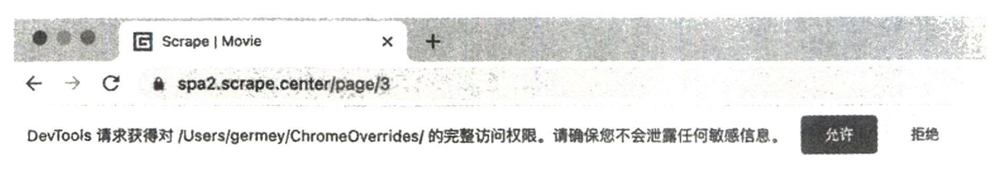
这时,在Overrides 面板下就多了 ChromeOverrides 文件夹,用于存储所有我们想要更改的JavaScript文件,如图11-34所示。
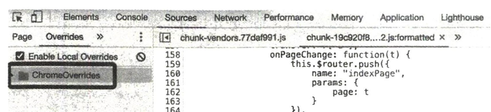
我们可以看到,现在所在的JavaScript 选项卡是chunk-19c920f8.012555a2.js: formatted,代码已经被格式化了。因为格式化后的代码是无法直接在浏览器中修改的,所以为了方便,我们可以将格式化后的文件复制到文本编辑器中,然后添加一行代码,修改如下:
}).then((function(a) {
console.log('response', a) // 添加一行代码
var e = a.data, s = e.results, n = e.count;
t.loading = !1,
t.movies = s,
t.total = n
}))接着把修改后的内容替换到原来的 JavaScript文件中。这里要注意,切换到 chunk-19c920f8.012555a2.js文件才能修改,直接替换 JavaScript 文件的所有内容即可,如图11-35所示。
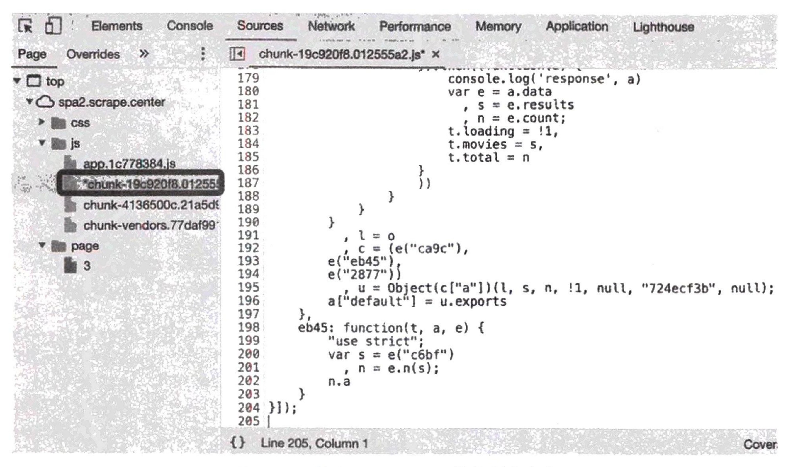
替换完毕之后保存,这时候再切换回 Overrides 面板,就可以发现成功生成了新的JavaScript文件,它用于替换原有的JavaScript文件,如图11-36所示。
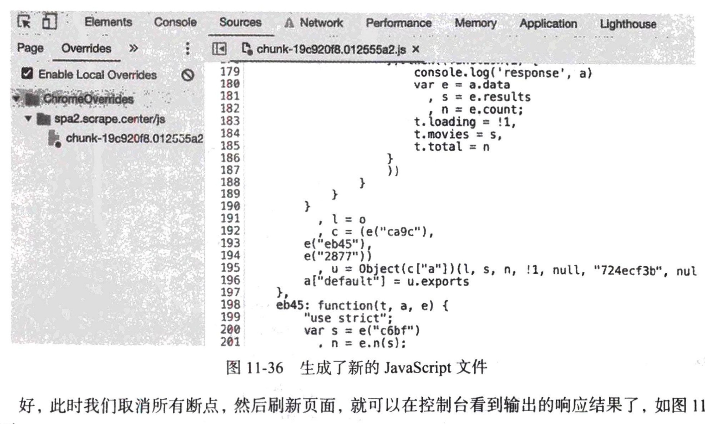
好,此时我们取消所有断点,然后刷新页面,就可以在控制台看到输出的响应结果了,如图11-37所示。
正如我们所料,我们成功将变量a输出,其中的data 字段就是 Ajax的响应结果,证明改写JavaScript 成功!而且刷新页面也不会丢失了。我们还可以增加一些 JavaScript 逻辑,比如直接将变量a的结果通过API 发送到远程服务器,并通过服务器将数据保存下来,也就完成了直接拦截Ajax请求并保存数据的过程了。修改 JavaScript 文件有很多用途,此方案可以为我们进行JavaScript 逆向带来极大的便利。
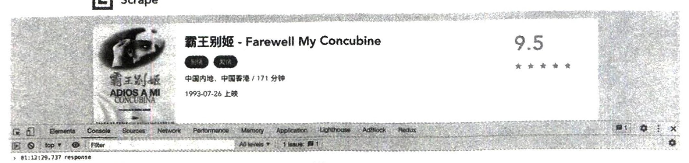
9. 总结
本节总结了一些浏览器开发者工具中对 JavaScript 逆向非常有帮助的功能,熟练掌握了这些功能会对后续 JavaScript 逆向分析打下坚实的基础,请大家好好研究。
11.3 JavaScript Hook 的使用
在JavaScript 逆向的时候,我们经常需要追踪某些方法的堆栈调用情况。但在很多情况下,一些JavaScript 变量或者方法名经过混淆之后是非常难以捕捉的。在上一节中,我们介绍了断点调试、调用栈查看等技巧,但仅仅凭借这些技巧还不足以应对多数 JavaScript 逆向。本节中,我们再来介绍一个比较常用的JavaScript 逆向技巧——Hook 技术。
1. Hook 技术
Hook 技术又叫钩子技术,指在程序运行的过程中,对其中的某个方法进行重写,在原先的方法前后加入我们自定义的代码。相当于在系统没有调用该函数之前,钩子程序就先捕获该消息,得到控制权,这时钩子函数既可以加工处理(改变)该函数的执行行为,也可以强制结束消息的传递。要对 JavaScript 代码进行Hook操作,就需要额外在页面中执行一些有关Hook逻辑的自定义代码。那么问题来了?怎样才能在浏览器中方便地执行我们所期望执行的JavaScript代码呢?这里推荐一个插件,叫作 Tampermonkey。这个插件的功能非常强大,利用它我们几乎可以在网页中执行任何JavaScript 代码,实现我们想要的功能。下面我们就来介绍一下这个插件的使用方法,并结合一个实际案例,介绍这个插件在 JavaScript Hook 中的用途。
2. Tampermonkey
Tampermonkey,中文也叫“油猴”,它是一款浏览器插件,支持Chrome。利用它,我们可以在浏览器加载页面时自动执行某些 JavaScript脚本。由于执行的是JavaScript,所以我们几乎可以在网页中完成任何我们想实现的效果,如自动爬虫、自动修改页面、自动响应事件等。其实,Tampermonkey 的用途远远不止这些,只要我们想要的功能能用 JavaScript实现,Tampermonkey 就可以帮我们做到。比如,我们可以将 Tampermonkey 应用到 JavaScript 逆向分析中,去帮助我们更方便地分析一些JavaScript 加密和混淆代码。
3. 安装 Tampermonkey
首先,我们需要安装 Tampermonkey,这里我们使用的浏览器是Chrome。直接在Chrome 应用商店或者 Tampermonkey 官网上下载并安装即可。安装完成之后,在Chrome浏览器的右上角会出现 Tampermonkey的图标,这就代表安装成功了,如图11-38所示。
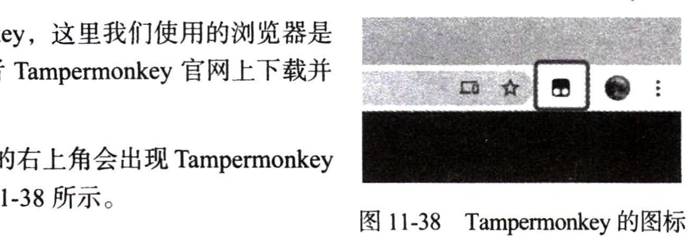
4. 获取脚本
Tampermonkey 运行的是JavaScript脚本,每个网站都能有对应的脚本运行,不同的脚本能完成不同的功能。我们既可以自定义脚本,也可以用已经写好的很多脚本,毕竟有些轮子有了,我们就不需要再去造了。我们可以在 https://greasyfork.org/zh-CN/scripts 上找到一些非常实用的脚本,如全网视频去广告、百度云全网搜索等,大家可以体验一下。
5. 脚本编写
除了使用别人已经写好的脚本外,我们也可以自己编写脚本来实现想要的功能。编写脚本难不难呢?其实就是写 JavaScript 代码,只要懂一些 JavaScript 语法就好了。另外,我们需要遵循脚本的一些写作规范,其中就包括一些参数的设置。下面我们就简单实现一个小脚本。首先,点击 Tampermonkey 插件图标,再点击“管理面板”项(如图11-39所示),打开脚本管理页面,如图11-40所示。
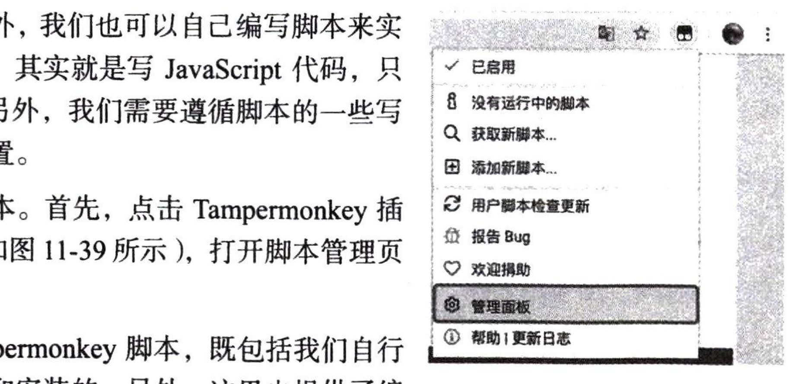
这里显示了已经有的一些Tampermonkey 脚本,既包括我们自行创建的,也包括从第三方网站下载和安装的。另外,这里也提供了编辑、调试、删除等管理功能,方便我们对脚本进行管理。
接下来,创建一个新脚本。点击左侧的+按钮,会显示如图11-41所示的页面。
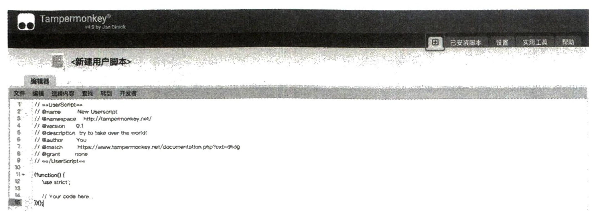
初始化的代码如下:
// ==UserScript==
// @name New Userscript
// @namespace http://tampermonkey.net/
// @version 0.1
// @description try to take over the world!
// @author You
// @match https://www.tampermonkey.net/documentation.php?ext=dhdg
// @grant none
// ==/UserScript==
(function() {
'use strict';
// Your code here...
})();在上面这段代码里,最前面是一些注释,它们非常有用,这部分内容叫作 UserScript Header,我们可以在里面配置一些脚本的信息,如名称、版本、描述、生效站点等。下面简单介绍 UserScript Header的一些参数定义。
@name:脚本的名称,就是在控制面板中显示的脚本名称。
@namespace:脚本的命名空间。
@version:脚本的版本,主要是做版本更新时用。
@author:作者。
@description:脚本描述。
@homepage、@homepageURL、@website、@source:作者主页,用于在 Tampermonkey 选项页面上从脚本名称点击跳转。请注意,如果@namespace 标记以http://开头,此处也要一样。
@icon、@iconURL、@defaulticon:低分辨率图标。
@icon64、@icon64URL:64×64高分辨率图标。
@updateURL:检查更新的网址,需要定义@version。
@downloadURL:更新下载脚本的网址,如果定义成none,就不会检查更新。
@supportURL:报告问题的网址。
@include:生效页面,可以配置多个,但注意这里并不支持 URL Hash。例如:
// @include http://www.tampermonkey.net/*
// @include http://*
// @include https://*
// @include *@match:约等于 @include 标签,可以配置多个。
@exclude:不生效页面,可配置多个,优先级高于 @include 和 @match。
@require: 附加脚本网址,相当于引入外部的脚本,这些脚本会在自定义脚本执行之前执行,比如引入一些必需的库,如 jQuery 等,这里可以支持配置多个 @require 参数。例如:// @require https://code.jquery.com/jquery-2.1.4.min.js// @require https://code.jquery.com/jquery-2.1.3.min.js#sha256=23456...// @require https://code.jquery.com/jquery-2.1.2.min.js#md5=34567...,sha256=6789...
@resource:预加载资源,可通过 GM_getResourceURL 和 GM_getResourceText 读取。
@connect:允许被 GM_xmlhttpRequest 访问的域名,每行 1 个。
@run-at: 脚本注入的时刻,如页面刚加载时、某个事件发生后等。
document-start: 尽可能地早执行此脚本。
document-body: DOM 的 body 出现时执行。
document-end: DOMContentLoaded 事件发生时或发生后执行。
document-idle: DOMContentLoaded 事件发生后执行,即 DOM 加载完成之后执行,这是默认的选项。
context-menu: 如果在浏览器上下文菜单 (仅限桌面 Chrome 浏览器) 中点击该脚本,则会注入该脚本。注意:如果使用此值,则忽略所有 @include 和 @exclude 语句。
@grant: 用于添加 GM 函数到白名单,相当于授权某些 GM 函数的使用权限。例如:// @grant GM_setValue// @grant GM_getValue// @grant GM_setClipboard// @grant unsafeWindow// @grant window.close// @grant window.focus如果没有定义过 @grant 选项, Tampermonkey 会猜测所需要的函数使用情况。
@noframes:此标记使脚本在主页面上运行,但不会在 iframe 上运行。
@nocompat: 由于部分代码可能是为专门的浏览器所写,通过此标记,Tampermonkey 会知道脚本可以运行的浏览器。例如:// @nocompat Chrome这样就指定了脚本只在 Chrome 浏览器中运行。除此之外,Tampermonkey 还定义了一些 API,使得我们可以方便地完成某个操作。
GM_log:将日志输出到控制台。
GM_setValue:将参数内容保存到浏览器存储中。
GM_addValueChangeListener:为某个变量添加监听,当这个变量的值改变时,就会触发回调。
GM_xmlhttpRequest:发起 Ajax 请求。
GM_download:下载某个文件到磁盘。
GM_setClipboard:将某个内容保存到粘贴板。
此外,还有很多其他的API,大家可以到 https://www.tampermonkey.net/documentation.php 查看。在 UserScript Header下方,是JavaScript 函数和调用的代码,其中'use strict'标明代码使用JavaScript 的严格模式。在严格模式下,可以消除JavaScript语法的——些不合理、不严谨之处,减少—些怪异行为,如不能直接使用未声明的变量,这样可以保证代码运行安全,同时提高编译器的效率,提高运行速度。在下方// Your code here...处就可以编写自己的代码了。
6. 实战分析
下面我们通过一个简单的JavaScript 逆向案例来演示如何实现 JavaScript 的Hook 操作,轻松找到某个方法执行的位置,从而快速定位逆向入口。接下来,我们来看一个简单的网站 https://login1.scrape.center/,这个网站的结构非常简单,只有“用户名”文本框、“密码”文本框和“登录”按钮,如图11-42所示。但是不同的是,点击“登录”按钮的时候,表单提交POST的内容并不是单纯的用户名和密码,而是一个加密后的token。
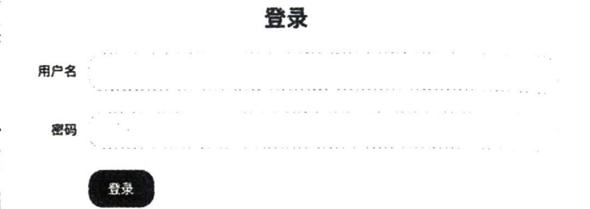
输入用户名和密码(都为admin),点击“登录”按钮,观察网络请求的变化,结果如图11-43所示。
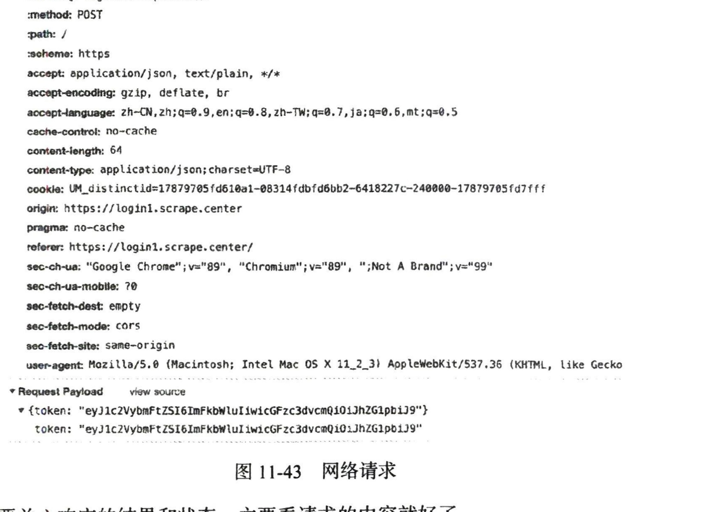
我们不需要关心响应的结果和状态,主要看请求的内容就好了。可以看到,点击“登录”按钮时,发起了一个POST请求,内容为:
{"token":"ey]1c2VybmFtZSI6ImFkbWluIiwicGFzc3dvcmQi0iJhZG1pbiJ9"}确实,没有诸如 username 和 password的内容,怎么模拟登录呢?模拟登录的前提就是找到当前 token生成的逻辑,那么问题来了,这个token和用户名、密码到底是什么关系呢?我们怎么寻找其中的蛛丝马迹呢?
这里我们就可能思考了，本身输入的是用户名和密码，但提交的时候却变成了一个 token，经过观察并结合一些经验可以看出，token 的内容非常像 Base64 编码。这就代表，网站可能首先将用户名和密码混为一个新的字符串，然后经过了一次 Base64 编码，最后将其赋值为 token 来提交了。所以，经过初步观察，我们可以得出这么多信息。
好，那就来验证一下吧！探究网站 JavaScript 代码里面是如何实现的。
首先，我们看一下网站的源码，打开 Sources 面板，看起来都是 webpack 打包之后的内容经过了一些混淆，如图 11-44 所示。
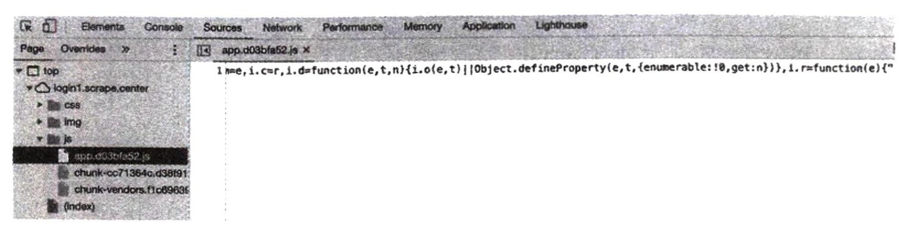
这么多混淆代码，总不能一点点扒着看吧？遇到这种情形，怎么去找 token 的生成位置呢？解决方法其实有两种，一种就是前文所讲的 Ajax 断点，另一种就是 Hook。
Ajax 断点
由于这个请求正好是 Ajax 请求，所以我们可以添加一个 XHR 断点来监听，把 POST 的网址加到断点上面。在 Sources 面板右侧添加一个 XHR 断点，匹配内容就填当前域名，如图 11-45 所示。
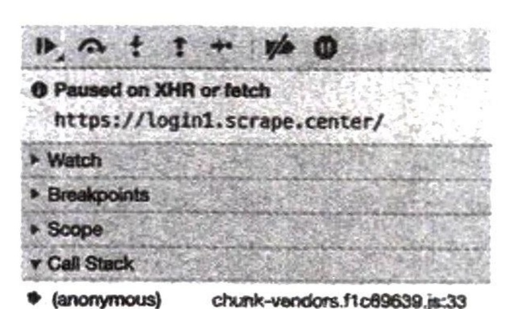
这时候如果我们再次点击“登录”按钮，发起一次 Ajax 请求，就可以进入断点了，然后再看堆栈信息，就可以一步步找到编码的入口了。再次点击“登录”按钮，页面进入断点状态，停下来了，结果如图 11-46 所示。
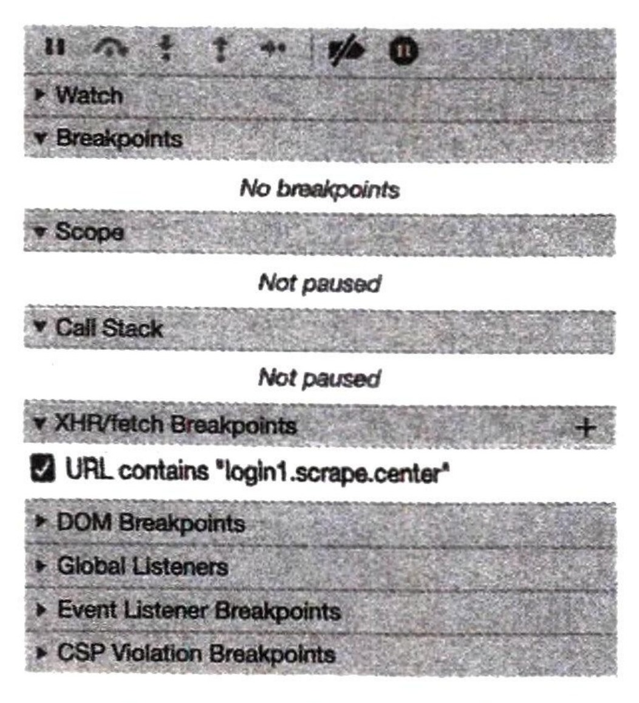
一步步找，最后可以找到入口其实在 onSubmit 方法那里。但实际上我们观察到，这里断点的栈顶还包括了一些 Promise 相关的内容，而我们真正想找的是用户名和密码经过处理，再进行 Base64 编码的地方,这些请求的调用实际上和我们找寻的入口没有很大的关系。另外,如果我们想找的入口位置并不伴随这一次Ajax请求,这个方法就没法用了。下面我们再来看另一个方法——Hook。
Hook
第二种可以快速定位入口的方法,就是使用 Tampermonkey 自定义JavaScript, 实现某个JavaScript方法的Hook。Hook 哪里呢?很明显,Hook Base64编码的位置就好了。这里涉及一个小知识点:JavaScript 里面的Base64编码是怎么实现的?没错,就是 btoa方法,在JavaScript 中该方法用于将字符串编码成Base64字符串,因此我们来Hook btoa 方法就好了。这里我们新建一个 Tampermonkey 脚本,其内容如下:
// ==UserScript==
// @name HookBase64
// @namespace https://login1.scrape.center/
// @version 0.1
// @description Hook Base64 encode function
// @author Germey
// @match https://login1.scrape.center/
// @grant none
// ==/UserScript==
(function () {
'use strict'
function hook (object, attr) {
var func = object[attr]
object[attr] = function () {
console.log('hooked', object, attr)
var ret = func.apply(object, arguments)
debugger
return ret
}
}
hook(window, 'btoa')
})()首先,我们定义了一些UserScript Header,包括@name 和@match等。这里比较重要的就是@name,表示脚本名称;另外一个就是@match,它代表脚本生效的网址。
接着,我们定义了 hook方法,这里给其传入 object 和 attr参数,意思就是 Hook object 对象的attr参数。例如,如果我们想 Hook alert 方法,那就把 object 设置为 window,把attr 设置为字符串 alert。这里我们想要 Hook Base64 的编码方法,而在JavaScript中,Base64编码是用 btoa 方法实现的,所以这里只需要 Hook window 对象的 btoa 方法就好了。
那么,Hook 是怎么实现的呢?我们来看一下,var func = object[attr],相当于我们先把它赋值为一个变量,即我们调用 func 方法就可以实现和原来相同的功能。接着,我们直接改写这个方法的定义,将 object[attr]改写成一个新的方法。在新的方法中,通过func.apply方法又重新调用了原来的方法。这样我们就可以保证前后方法的执行效果不影响,之前这个方法该干啥还干啥。
但是和之前不同的是,现在我们自定义方法之后,可以在 func 方法执行前后加入自己的代码,如通过 console.log将信息输出到控制台,通过 debugger 进入断点等。在这个过程中,我们先临时保存下来 func 方法,然后定义一个新的方法,接管程序控制权,在其中自定义我们想要的实现,同时在新的方法里面重新调回 func 方法,保证前后结果不影响。所以,我们达到了在不影响原有方法效果的前提下,实现在方法前后自定义的功能,这就是Hook 的过程。
最后,我们调用 hook方法,传入 window 对象和btoa 字符串,保存。接下来刷新页面,这时我们可以看到这个脚本在当前页面生效了,Tampermonkey 插件面板提示了已经启用。同时,在Sources 面板下的 Page 选项卡中,可以观察到我们定义的JavaScript 脚本被执行了,如图11-47所示。
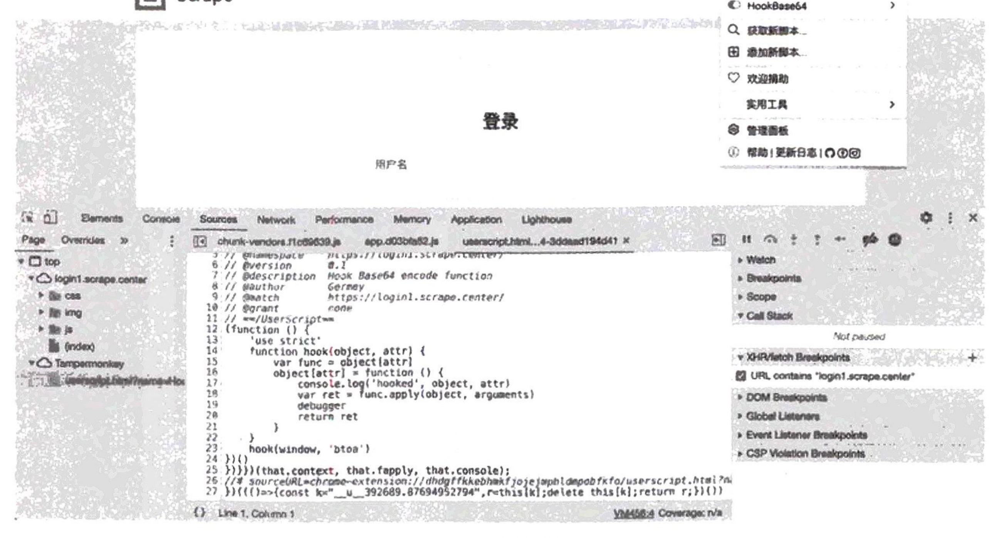
输入用户名和密码,然后点击“登录”按钮,成功进入断点模式并停下来了,代码就卡在我们自定义的 debugger 这行代码的位置,如图11-48所示。
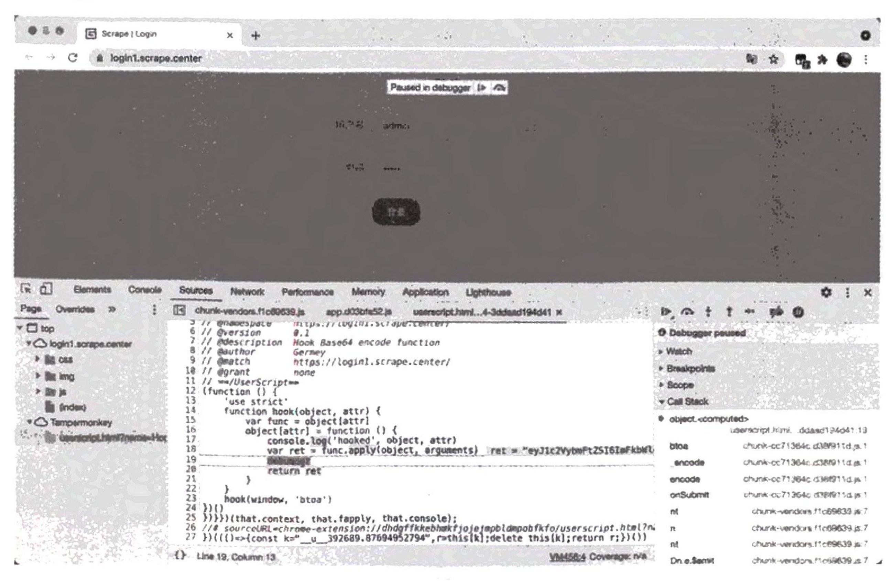
成功 Hook住了,这说明 JavaScript 代码在执行过程中调用到了 btoa 方法。这时看一下控制台,如图11-49所示。这里也输出了 window 对象和 btoa 方法,验证正确。
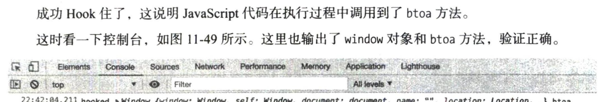
这样我们就顺利找到了 Base64 编码操作这个路口,然后看一下堆栈信息,已经不会出现 Promise相关的信息了,其中清晰地呈现了 btoa 方法逐层调用的过程,如图11-50所示。另外再观察下 Local 面板,看看 arguments 变量是怎样的,如图11-51所示。
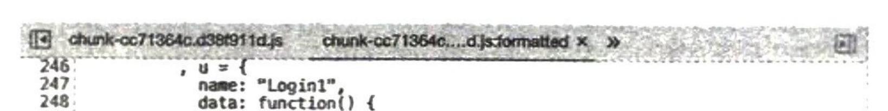
可以说一目了然,arguments 就是指传给 btoa 方法的参数,ret就是 btoa 方法返回的结果。可以看到,arguments 就是 username 和 password 通过 JSON 序列化之后的字符串,经过 Base64 编码之后得到的值恰好就是 Ajax 请求参数 token 的值。结果几乎也明了了,我们还可以通过调用栈找到 onSubmit 方法的处理源码:
onSubmit: function() {
var e = c.encode(JSON.stringify(this.form));
this.$http.post(a["a"].state.url.root, {
token: e
}).then((function(e) {
console.log("data", e)
}))
}仔细看看,encode 方法其实就是调用了 btoa 方法,就是一个 Base64 编码的过程,答案其实已经很明了了。当然,我们还可以进一步添加断点验证一下流程,比如在调用 encode 方法的那行添加断点,如图11-52所示。
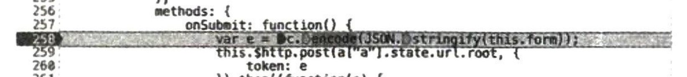
添加断点之后,可以点击 Resume script execution 按钮恢复 JavaScript 的执行,跳过当前 Tampermonkey定义的断点位置。
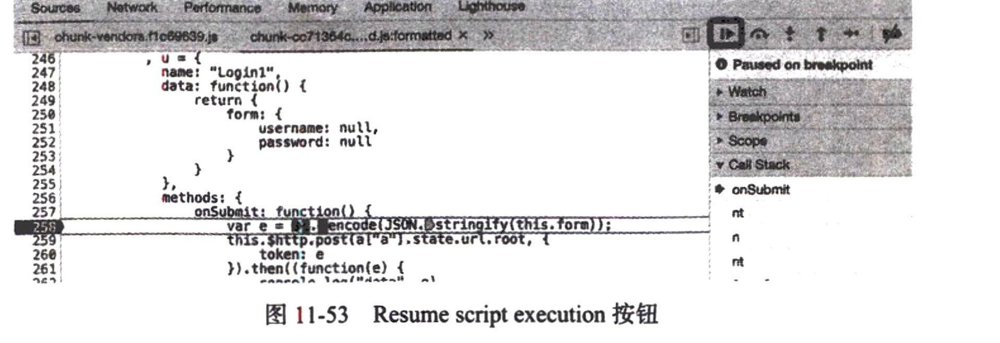
然后重新点击“登录”按钮,可以看到这时候代码就停在当前添加断点的位置。
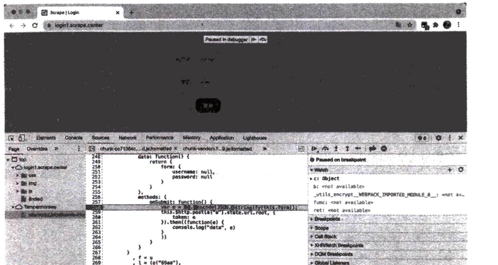
这时候可以在 Watch 面板下输入this.form,验证此处是否为在表单中输入的用户名和密码。
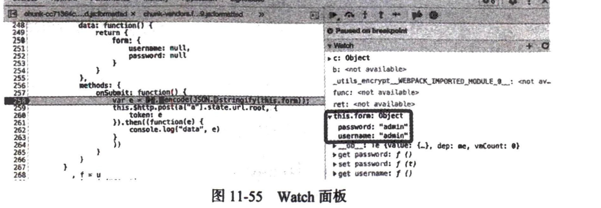
没问题,然后逐步调试。我们还可以观察到,下一步就跳到了我们Hook的位置,这说明调用了 btoa方法,如图11-56所示。可以看到,返回的结果正好就是 token 的值。
验证到这里,已经非常清晰了,整体逻辑就是对登录表单的用户名和密码进行JSON序列化,然后调用 encode(也就是btoa方法),并把 encode 方法的结果赋值为token 发起登录的Ajax请求,逆向完成。我们通过 Tampermonkey 自定义 JavaScript脚本的方式,实现了某个方法调用的Hook,使得我们能快速定位到加密入口的位置,非常方便。以后如果观察出一些门道,可以多使用这种方法来尝试,如 Hook encode 方法、decode 方法、stringify 方法、log方法、alert 方法等,简单又高效。
7. 总结
以上便是通过 Tampermonkey 实现简单Hook的基础操作。当然,这仅仅是一个常见的基础案例,我们可以从中总结出一些Hook 的基本门道。由于本节涉及一些专有名词,部分内容参考如下。
简书上的“Hook技术”文章。
Tampermonkey官网。
MDN Web Docs 网站上 Base64编码。
11.4 无限 debugger 的原理与绕过
在上一节的学习过程中,你可能注意到了一个知识点——debugger 关键字的作用。debugger 是JavaScript 中定义的一个专门用于断点调试的关键字,只要遇到它,JavaScript 的执行便会在此处中断,进入调试模式。有了 debugger 这个关键字,我们就可以非常方便地对 JavaScript 代码进行调试,比如使用JavaScript Hook时,我们可以加入debugger 关键字,使其在关键的位置停下来,以便查找逆向突破口。但有时候,debugger 会被网站开发者利用,使其成为阻挠我们正常调试的拦路虎。本节中,我们介绍一个案例来绕过无限 debugger。
1. 案例介绍
我们先看一个案例,网址是https://antispider8.scrape.center/,打开这个网站,一般操作和之前的网站没有什么不同。但是,一旦我们打开开发者工具,就发现它立即进入了断点模式,如图11-57所示。
我们既没有设置任何断点，也没有执行任何额外的脚本，它就直接进入了断点模式。这时候我们可以点击 Resume script execution(恢复脚本执行)按钮，尝试跳过这个断点继续执行，如图11-58所示。
然而不管我们点击多少次按钮，它仍然一次次地进入断点模式，无限循环下去，我们称这样的情况为无限 debugger。怎么办呢？似乎无法正常添加断点调试了，有什么解决办法吗？办法当然是有的，本节中我们就来总结一下无限 debugger的应对方案。
2. 实现原理
我们首先要做的是找到无限 debugger 的源头。在 Sources 面板中可以看到，debugger 关键字出现在一个 JavaScript 文件里，这时点击左下角的格式化按钮，如图11-59所示。
格式化后的代码如图11-60所示,可以发现这里通过 setInterval循环,每秒执行1次 debugger 语句。
当然,还有很多类似的实现,比如无限 for 循环、无限 while循环、无限递归调用等,它们都可以实现这样的效果,原理大同小异。了解了原理,下面我们就对症下药吧!
3. 禁用断点
因为 debugger 其实就是对应的一个断点,它相当于用代码显式地声明了一个断点,要解除它,我们只需要禁用这个断点就好了。首先,我们可以禁用所有断点。全局禁用开关位于Sources 面板的右上角,叫作Deactivate breakpoints,如图11-61所示。点击它,会发现所有的断点变成了灰色,如图11-62所示。
这时候我们再重新点击一下 Resume script execution 按钮,跳过当前断点,页面就不会再进入到无限 debugger 的状态了。但是这种全局禁用其实并不是一个好的方案,因为禁用之后我们也无法在其他位置增加断点进行调试了,所有的断点都失效了。这时候我们可以选择禁用局部断点。取消刚才的 Deactivate breakpoints 模式,页面会重新进入无
限 debugger 模式,我们尝试使用另一种方法来跳过这个无限 debugger。我们可能会想着去掉 Breakpoints 里勾选的断点,心想这样不就禁用了吗?大家尝试取消勾选,如图11-63所示。然而,取消之后再继续点击 Resume script execution按钮,它依然不断地停在有debugger关键字的地方,并没有什么效果。其实,Breakpoints 只代表了我们手动添加的断点。对于 debugger 关键字声明的断点,这里直接取消是没有用的。这种情况下还有什么办法吗?
有的。我们可以先将当前 Breakpoints 里面的断点删除,然后在 debugger 语句所在的行的行号上单击鼠标右键,此时会出现一个快捷菜单,如图11-64所示。
这里会有一个 Never pause here 选项,意思是从不在此处暂停。选择这个选项,于是页面变成如图11-65所示的样子。
当前断点显示为橙色,并且断点前面多了一个?符号,同时 Breakpoints 也出现了刚才添加的断点位置。这时再次点击 Resume script execution 按钮,就可以发现我们不会再进入无限 debugger 模式了。当然,我们也可以选择另外一个选项 Add conditional breakpoint,如图11-66所示。
这个模式更加高级,我们可以设置进入断点的条件,比如在调试过程中,期望某个变量的值大于某个具体值的时候才停下来。但在本案例中,由于这里是无限循环,我们没有什么具体的变量可以作为判定依据,因此可以直接写一个简单的表达式来控制。选择 Add conditional breakpoint 选项,直接填入false即可,如图11-67所示。
此时其效果就和选择 Never pause here 选项一样,重新点击 Resume script execution 按钮,也不会进入无限 Debugger 循环了。
4. 替换文件
前文我们介绍过 Overrides 面板的用法,利用它我们可以将远程的JavaScript 文件替换成本地的JavaScript 文件,这里我们依然可以使用这个方法来对文件进行替换,替换成什么呢?很简单,我们只需要在新的文件里面把 debugger 这个关键字删除。
我们将当前的 JavaScript 文件复制到文本编辑器中,删除或者直接注释掉 debugger 这个关键字,修改如下:
setInterval((function() {
// debugger; //可以直接删除此行或者注释此行
console.log("debugger")
})打开 Sources 面板下的 Overrides面板,将修改后的完整 JavaScript文件复制进去,修改的内容如图11-68所示。
替换完成之后,重新刷新网页,这时候发现不会进入无限 debugger 模式了。注意如果此操作不熟悉,可以参考11.2节的内容。另外,我们不仅可以使用Charles、Fiddler 等抓包工具进行替换,也可以使用浏览器插件 ReRes 等进行替换,还可以通过 Playwright 等工具使用 Request Interception 进行替换。这三种方式达成的效果是一致的,原理都是将在线加载的JavaScript文件进行替换,最终消除无限 debugger。
5. 总结
本节讲解了无限 debugger 的绕过方案,包括禁用全局断点、条件断点、替换原始文件等,从这些操作中我们也可以学习到一些 JavaScript 逆向的基本思路,建议好好掌握本节内容。
11.5 使用 Python 模拟执行 JavaScript
前面我们了解了一些 JavaScript 逆向的调试技巧,通过一些方法,我们可以找到一些突破口,进而找到关键的方法定义。比如说,通过一些调试,我们发现加密参数 token 是由 encrypt 方法产生的。如果里面的逻辑相对简单的话,那么我们可以用Python 完全重写一遍。但是现实情况往往不是这样的,一般来说,一些加密相关的方法通常会引用一些相关标准库,比如说JavaScript 就有一个广泛使用的库,叫作 crypto-js,这个库实现了很多主流的加密算法,包括对称加密、非对称加密、字符编码等。比如对于AES加密,通常我们需要输入待加密文本和加密密钥,实现如下:
const ciphertext = CryptoJS.AES.encrypt (message, key).toString();对于这样的情况，我们其实没法很轻易地完全重写一遍，因为Python中并不一定有和JavaScript 完全一样的类库。那么，有什么解决办法吗？有的，既然JavaScript已经实现好了，那么我用Python 直接模拟执行这些 JavaScript 得到结果不就好了吗？本节中，我们就来了解使用Python 模拟执行JavaScript 的解决方案。
1. 案例引入
这里我们先看一个和上文描述的情形非常相似的案例，链接是https://spa7.scrape.center/，如图11-69所示。
这是一个NBA球星网站，用卡片的形式展示了一些球星的基本信息。另外，每张卡片上其实都有一个加密字符串，这个加密字符串其实和球星的信息是有关联的，并且每个球星的加密字符串也是不同的。所以，这里我们要做的就是找出这个加密字符串的加密算法并用程序把加密字符串的生成过程模拟出来。
2. 准备工作
本节中，我们需要使用Python 模拟执行JavaScript，这里我们使用的库叫作PyExecJS。我们使用 pip3 命令安装它，具体如下：
pip3 install pyexecjsPyExecJS 是用于执行JavaScript的，但执行JavaScript 的功能需要依赖 JavaScript 运行环境，所以除了安装好这个库之外，我们还需要安装一个JavaScript 运行环境，个人比较推荐的是Node.js。更加详细的安装和配置过程可以参考：https://setup.scrape.center/pyexecjs。PyExecJS 库在运行时会检测本地 JavaScript 运行环境来实现 JavaScript 执行，做好如上准备工作之后，接着我们运行代码检查一下运行环境：
import execjs
print(execjs.get().name)运行结果类似如下:
Node.js (V8)如果你成功安装好 PyExecJS 库和 Node.js 的话,其结果就是 Node.js (V8)。当然,如果你安装的是其他的 JavaScript 运行环境,结果也会有所不同。
3. 分析
接下来,我们就对这个网站稍作分析。打开 Sources 面板,我们可以非常轻易地找到加密字符串的生成逻辑,如图 11-70 所示。
首先,声明一个球员相关的列表,如:
const players = [
{
name: '凯文-杜兰特',
image: 'durant.png',
birthday: '1988-09-29',
height: '208cm',
weight: '108.9KG'
}
...
]然后对于每一个球员,我们调用加密算法对其信息进行加密。我们可以添加断点看看,如图 11-71所示。
可以看到,getToken 方法的输入就是单个球员的信息,就是上述列表的一个元素对象,然后this.key 就是一个固定的字符串。整个加密逻辑就是提取球员的名字、生日、身高、体重,接着先进行Base64编码,然后进行DES加密,最后返回结果。加密算法是怎么实现的呢?其实就是依赖了 crypto-js库,使用CryptoJS 对象来实现的。那么,CryptoJS 这个对象是哪里来的呢?总不能凭空产生吧?其实这个网站就是直接引用了crypto-js 库,如图11-72所示。
执行 crypto-js 库对应的这个JavaScript 文件之后,CryptoJS 就被注入浏览器全局环境下,因此我们就可以在别的方法里直接使用CryptoJS 对象里的方法了。
4. 模拟调用
既然这样,我们要怎么模拟呢?下面我们来实现一下。首先,我们要模拟的其实就是这个getToken方法,输入球员相关信息,得到最终的加密字符串。这里我们直接把 key 替换下,把getToken 方法稍微改写一下,具体如下:
function getToken(player) {
let key = CryptoJS.enc.Utf8.parse("fipFfVsZsTda94hJNKJfLoaqyqMZFFimwLt");
const { name, birthday, height, weight } = player;
let base64Name = CryptoJS.enc.Base64.stringify(CryptoJS.enc.Utf8.parse(name));
let encrypted = CryptoJS.DES.encrypt(
`${base64Name}${birthday}${height}${weight}`,
key,
{
mode: CryptoJS.mode.ECB,
padding: CryptoJS.pad.Pkcs7,
}
);
return encrypted.toString();
}因为这个方法的模拟执行需要 CryptoJS 这个对象,如果我们直接调用这个方法,肯定会报CryptoJS 未定义的错误。怎么办呢?我们只需要再模拟执行一下刚才看到的crypto-js.min.js 不就好了吗?
因此,我们需要模拟执行的内容就是以下两部分。
模拟运行 crypto-js.min.js里面的JavaScript,用于声明 CryptoJS 对象。
模拟运行 getToken方法的定义,用于声明 getToken方法。接下来,我们就把 crypto-js.min.js里面的代码和上面 getToken 方法的代码复制一下,都粘贴到一个JavaScript 文件里面,比如就叫作 crypto.js。接下来,我们就用PyExecJS 模拟执行一下,代码如下:
import execjs
import jsonitem = {
'name':'凯文-杜兰特',
'image': 'durant.png',
'birthday': '1988-09-29',
'height': '208cm',
'weight': '108.9KG'
}file = 'crypto.js'
node = execjs.get()
ctx = node.compile(open(file).read())js = f"getToken({json.dumps(item, ensure_ascii=False)})"
print(js)
result = ctx.eval(js)
print(result)这里我们单独定义了一位球员的信息,并将其赋为 item 变量。然后使用 execjs 的 get 方法获取JavaScript 执行环境,赋值为 node。接着,我们调用 node 的 compile 方法,这里给它传入刚才定义的 crypto.js 文件的文本内容。compile方法会返回一个JavaScript 的上下文对象,我们将其赋给 ctx。执行到这里,其实就可以理解为,ctx 对象里面就执行过了 crypto-js.min.js, CryptoJS 就声明好了,然后紧接着 getToken 方法的声明代码也被执行,所以 getToken 方法也定义好了,相当于完成了一些初始化工作。接着,我们只需要定义我们想要执行的JavaScript代码。我们定义了一个js 变量,其实就是模拟调用了 getToken 方法并传入了球员信息。打印 js 变量的值,内容如下:getToken({"name":"凯文-杜兰特","image": "durant.png", "birthday": "1988-09-29", "height": "208cm",
"weight": "108.9KG"})其实这就是一个标准的JavaScript 方法调用的写法而已。接着,调用 ctx 对象的 eval 方法并传入 js 变量,其实就是模拟执行这句 JavaScript 代码,照理来说最终返回的就是加密字符串了。然而,运行之后,我们可能看到这个报错:execjs._exceptions.ProgramError: ReferenceError: CryptoJS is not defined很奇怪,CryptoJS 未定义?我们明明执行过crypto-js.min.js 里面的内容了呀?问题其实出在 crypto-js.min.js,可以看到其中声明了一个JavaScript的自执行方法,如图11-73所示。什么是自执行方法呢?就是声明了一个方法,然后紧接着调用执行。我们可以看下这个例子:
!(function(a, b) { console.log('result', a, b)})(1, 2)这里我们先声明了一个function,它接收a和b两个参数,然后把内容输出出来,接着我们把这个 function 用小括号括起来。这其实就是一个方法,可以被直接调用,怎么调用呢?后面再跟上对应的参数就好了,比如传入1和2,执行结果如下:result 1 2可以看到,这个自执行方法就被执行了。同理,crypto-js.min.js 也符合这个格式,它接收t和e两个参数,t就是this,其实就是浏览器中的window 对象,e就是一个function(用于定义CryptoJS 的核心内容)。我们再来观察下 crypto-js.min.js 开头的定义:"object" == typeof exports
? (module.exports = exports = e()): "function" == typeof define && define.amd
? define([), e)
: (t.CryptoJS = e());在Node.js中,其实 exports 用来将一些对象的定义导出,这里"object" == typeof exports 的结果其实就是 true,所以就执行了 module.exports = exports = e()这段代码,这相当于把e()作为整体导出,而这个e()其实就对应后面的整个function。function 里面定义了加密相关的各个实现,其实就指代整个加密算法库。
但是在浏览器中,其结果就不一样了,浏览器环境中并没有 exports 和 define 这两个对象。所以,上述代码在浏览器中最后执行的就是t.CryptoJS = e()这段代码,其实这里就是把CryptoJS 对象挂载到 this 对象上面,而this 就是浏览器中的全局 window 对象,后面就可以直接用了。如果我们把代码放在浏览器中运行,那没有任何问题。
然而,我们使用的PyExecJS 是依赖于一个 Node.js 执行环境的,所以上述代码其实执行的是module.exports = exports = e(),这里面并没有声明 CryptoJS对象,也没有把 CryptoJS 挂载到全局对象里面,所以后面我们再调用CryptoJS 就自然而然出现了未定义的错误了。
怎么办呢?其实很简单,直接声明一个 CryptoJS 变量,然后手动声明一下它的初始化不就好了吗?所以我们可以把代码稍作修改,改成如下内容:
var CryptoJS;!(function (t, e) {
CryptoJS = e();"object" == typeof exports
? (module.exports = exports = e()): "function" == typeof define && define.amd
? define([), e)
: (t.CryptoJS = e());
})(this,
});
function () {//...这里我们首先声明了一个 CryptoJS 变量,然后直接给 CryptoJS 变量赋值e(),这样就完成了CryptoJS 的初始化。这样我们再重新运行刚才的Python脚本,就可以得到执行结果:gQSfeqldQIJKAZHH9TzRX/exvIwboj73b2cjXvy6PeZ3rGW6sQsL2w==这样我们就成功得到加密字符串了,和示例网站上显示的一模一样,这样我们就成功模拟JavaScript 的调用完成了某个加密算法的运行过程。
5. 总结
本节介绍了利用PyExecJS 来模拟执行JavaScript 的方法,结合一个案例来完成整个实现和问题排查的过程。本节内容还是比较重要的,以后我们如果需要模拟执行JavaScript,就可以派得上用场。本节代码参见:https://github.com/Python3WebSpider/ScrapeSpa7。
11.6 使用 Node.js 模拟执行 JavaScript
在上一节中,我们了解了利用Python 来模拟 JavaScript 调用的方法,使用的库是PyExecJS,其执行环境我们选用的也是Node.js,但有时候在调用过程中我们会发现这还是有不太方便的地方,而且可能也会出现上一节提及的变量未定义的问题。有没有其他的解决思路呢?我们模拟执行的是JavaScript,而且依赖的是Node.js,为什么不直接用 Node.js 来尝试 JavaScript 的执行呢?其实原理上来说这种方案是完全可行的。本节中,我们就来了解使用 Node.js 来执行JavaScript 的方法。
1. 准备工作
本节中,我们需要使用 Node.js,请确保已经正确安装好了 Node.js,安装流程可以参考上一节的说明。安装完成之后,我们应该可以正常使用node 和 npm两个命令,如不能使用,请检查 Node.js 的安装情况和环境变量的配置。
2. 模拟执行
本节的案例和上一节完全一样,我们想要的其实还是计算出每位球星所对应的加密字符串。所以整体思路其实还是加载 Crypto 库并执行getToken 方法,这里我们直接基于Node.js 来实现。首先,还是把 crypto-js.min.js文件中的内容复制下来,新建一个crypto.js 文件并把内容粘贴进去。然后新建一个 main.js文件,其内容如下:
const CryptoJS = require("./crypto");
function getToken(player) {
let key = CryptoJS.enc.Utf8.parse("fipFfVsZsTda94hJNKJfLoaqyqMZFFimwLt");
const { name, birthday, height, weight } = player;
let base64Name = CryptoJS.enc.Base64.stringify(CryptoJS.enc.Utf8.parse(name));
let encrypted = CryptoJS.DES.encrypt(
`${base64Name}${birthday}${height}${weight}`,
key,
{
mode: CryptoJS.mode.ECB,
padding: CryptoJS.pad.Pkcs7,
}
);
return encrypted.toString();
}
const player = {
name:"凯文-杜兰特",image: "durant.png",birthday: "1988-09-29",height: "208cm",weight: "108.9KG"
}
console.log(getToken(player))这里我们直接使用Node.js中的 require 方法导入crypto.js这个文件,然后将其赋值为 CryptoJS 对象,这样其实就完成了 CryptoJS 对象的初始化了,后面我们就可以正常使用 CryptoJS 对象了。这时候读者可能会有疑惑:上一节中我们用的PyExecJS的底层也是用Node.js 模拟的呀?在上一节中,我们需要修改代码才能完成 CryptoJS的初始化,那这次为什么什么都不用修改就能完成CryptoJS 的初始化呢?继续回过头来观察 crypto.js中最开头的定义:
!(function (t, e) {
"object" == typeof exports
? (module.exports = exports = e())
: "function" == typeof define && define.amd
? define([], e)
: (t.CryptoJS = e());
})(this,
function () {
//...
});通过上一节的说明我们知道,在Node.js 中定义了 exports 这个对象,它用来将一些对象的定义导出。这里"object" == typeof exports 的结果其实就是true,所以就执行了module.exports = exports= e()这段代码,这样就相当于把e()作为整体导出了,而这个e()其实就对应这后面的整个function。function 里面定义了加密相关的各个实现,其实就指代整个加密算法库。
既然在 crypto.js里面声明了这个导出,那么怎么导入呢?require 就是导入的意思,导入之后我们把它赋值为了整个CryptoJS变量,其实它就代表整个CryptoJS加密算法库了。正是因为我们在 Node.js 中有和 exports 配合的 require 的调用并将结果赋值给CryptoJS 变量,我们才完成了CryptoJS的初始化。因此,后面我们就能调用CryptoJS里面的DES、enc等各个对象的方法来进行一些加密和编码操作了。
CryptoJS 初始化完成了,接下来 getToken 方法其实就是调用 CryptoJS 里面的各个对象的方法,实现了整个加密流程,整个逻辑和上一节是一样的。最后,传入 player对象,然后输出对应的加密字符串即可。运行 main.js,命令如下:
node main.js得到的结果如下:
DG1uMMq1M70eHhds71H1SMHOoI2tFpWCB4ApP00cVFqptmlFKjFu9RluHo2w3mUw经过比对,结果和网站上的结果(如图11-74所示)是一致的。这样我们就成功通过 Node.js 完成了整个JavaScript 的模拟过程。
3. 搭建服务
现在我们其实已经能够使用 Node.js 完成整个加密字符串的生成了,完全用 Node.js 编写爬虫就可以了。但如果此时我们就想用Python 来编写整个爬虫,怎么办呢?该怎么和 Node.js 对接呢?很简单,直接使用 Node.js 来把刚才的算法暴露成一个HTTP服务就好了,这样的话 Python 直接调用 Node.js 暴露的HTTP服务,通过Request Body传入对应的球员信息,然后加密字符串通过HTTP的Response 返回即可。
那么 HTTP 服务用什么来实现呢?Node.js中最流行的HTTP 服务框架当属 express了,所以这里我们就选用它来作为HTTP服务器。首先安装 express,在main.js 所在目录下运行如下命令:npm i express然后改写 main.js 为如下内容:
const CryptoJS = require("./crypto");
const express = require("express");
const app = express();
const port = 3000;
app.use(express.json());
function getToken(player) {
let key = CryptoJS.enc.Utf8.parse("fipFfVsZsTda94hJNKJfLoaqyqMZFFimwLt");
const { name, birthday, height, weight } = player;
let base64Name = CryptoJS.enc.Base64.stringify(CryptoJS.enc.Utf8.parse(name));
let encrypted = CryptoJS.DES.encrypt(
`${base64Name}${birthday}${height}${weight}`,
key,
{
mode: CryptoJS.mode.ECB,
padding: CryptoJS.pad.Pkcs7,
}
);
return encrypted.toString();
}
app.post("/", (req, res) => {
const data = req.body;
res.send(getToken(data));
});
app.listen(port, () => {
console.log(`Example app listening on port ${port}!`);
});这里我们就使用 express 编写了一个服务,它可以接收一个POST请求,Request Body 就是球员信息,然后返回 getToken 的计算结果作为Response 的内容。接下来,重新运行该脚本:node main.js这时候可以看到,express 就在本地3000端口上运行了。如果我们想用 Python 调用的话,直接使用requests 调用该API,然后传入对应的球员数据即可,示例如下:
import requests
data = {
"name":"凯文-杜兰特",
"image": "durant.png",
"birthday": "1988-09-29",
"height": "208cm",
"weight": "108.9KG"
}
url = 'http://localhost:3000'
response = requests.post(url, json=data)
print(response.text)运行结果如下:
DG1uMMq1M70eHhds71H1SMHO0I2tFpWCB4ApP00cVFqptmlFKjFu9RluHo2w3mUw这样我们就成功实现了 Node.js 到 Python 调用的转换,这样爬取到数据之后,我们就可以使用Python 进行后续的分析、处理操作了。
4. 总结
本节中,我们介绍了利用 Node.js 进行JavaScript 模拟的方法,并介绍了Node.js 和 Python 进行对接的方式——通过 express 暴露 HTTP服务。此种方案对于JavaScript 的兼容性也会更好,对于模拟执行JavaScript 也会更加方便。本节代码参见:https://github.com/Python3WebSpider/ScrapeSpa7。
11.7 浏览器环境下 JavaScript 的模拟执行
在前面两节中,我们了解了利用PyExecJS 和 Node.js 对 JavaScript 进行模拟执行的方法,但在某些复杂的情况下可能还是有一定的局限性。
1. 分析
比如说:我们在浏览器中找到了一个类似的加密算法,其生成逻辑如下:
const token = encrypt(a, b)我们最终需要获取的就是 token 这个变量究竟是什么。这个token 模拟出来了,就可以直接拿着去构造请求进行数据爬取了。但这个 token 是由一个 encrypt 方法返回的,参数是a和b。对于参数a和b,我们可能比较容易找到它们是怎么生成的,但是这个encrypt 方法非常复杂,其内部又关联了许多变量和对象,甚至方法内部的逻辑也进行了混淆等操作,向内追踪非常困难。这时候如果我们要用Python 和 Node.js 来模拟整个调用过程,关键其实就两步:
把所有的依赖库都下载到本地;
使用PyExecJS 或 Node.js 来加载依赖库并模拟调用 encrypt方法。但在某些情况下可能存在一定的问题,我们分两个方面来进行探讨。
环境差异
前面提到过,Node.js 中没有全局 window对象,取而代之的是global 对象。如果 JavaScript 文件中有任何引用 window对象的方法,就没法在Node.js 环境中运行。我们需要做的就是把window 对象改写成 global 对象,或者把一些浏览器中的对象用——其他方法代替。
依赖库查找
在上面的例子中,encrypt 所依赖的全部逻辑和依赖库其实都已经加载到浏览器。如果我们要在其他环境中模拟执行,要从中完全剥离出 encrypt 所依赖的 JavaScript库,肯定还需要费一些功夫。一旦缺少了必备的依赖库,就会导致 encrypt 方法无法成功运行。对于一些复杂的情况,为什么我们不直接用浏览器作为执行环境来辅助逆向呢?本节中,我们就来介绍一个借助浏览器模拟辅助逆向的方法,可以实现任意位置的代码注入和修改,同时可以实现全局和任意时刻调用,非常方便。
2. 准备工作
本节中,我们使用 playwright 来实现浏览器辅助逆向。首先,安装playwright,相关命令如下:
pip3 install playwright
playwright install运行如上两条命令之后,会安装 playwright库,并安装 Chromium、Firefox、WebKit 三个内核的浏览器供 playwright 直接使用。具体的安装方法可以参考:https://setup.scrape.center/playwright。
3. 案例介绍
本节中,我们要分析的目标站点是https://spa2.scrape.center/。可以看到,其Ajax请求参数带有一个token,并且每次都会变化,如图11-75所示。
添加 XHR 断点并通过调用栈找到 token 的生成入口,如图11-76所示。
可以发现,请求参数的token 就是变量e,它的生成过程如下:
var a = (this.page - 1) * this.limit, e = Object(i["a"])(this.$store.state.url.index, a);在此处添加断点调试一下,看看具体的变量值,如图11-77所示。
经过对比,可以很容易发现,变量a其实就是请求数据的offset,数据一页10条,所以第一页offset就是0,第二页 offset 就是10,所以变量a就是0、10,以此类推。this.$store.state.url.index 是一个固定的字符串/api/movie,但是调用Object(i["a"])方法之后,结果e也就是最终的token 就得到了。因此,我们可以断定 Object(i["a"])里面就是核心的加密逻辑,我们再把i["a"]方法追踪一下,可以看到如图11-78所示的逻辑。
我们大致可以看到,这里又掺杂了时间、SHA1、Base64、列表等各种操作。要深入分析,还是需要花费一些时间的。现在,可以说核心方法已经找到了,参数我们也知道怎么构造了,就是方法内部比较复杂,但我们想要的其实就是这个方法的运行结果,即最终的token。这时候大家可能就产生了这样的疑问。
怎么在不分析该方法逻辑的情况下拿到方法的运行结果呢?该方法完全可以看成黑盒。
要直接拿到方法的运行结果,就需要模拟调用了,怎么模拟调用呢?
这个方法并不是全局方法,所以没法直接调用,该怎么办呢?其实是有方法的。
模拟调用当然没有问题,问题是在哪里模拟调用。根据上文的分析,既然浏览器中都已经把上下文环境和依赖库都加载成功了,为何不直接用浏览器呢?
怎么模拟调用局部方法呢?很简单,只需要将局部方法挂载到全局 window 对象上不就好了吗?
怎么把局部方法挂载到全局 window 对象上呢?最简单的方法就是直接改源码。
既然已经在浏览器中运行了,又怎么改源码呢?当然可以,比如利用 playwright 的 Request Interception 机制将想要替换的任意文件进行替换即可。
4. 实战
首先,我们来实现Object(i["a"])的全局挂载,只需要将其赋值给 window对象的一个属性即可,属性名称任意,只要不和现有的属性冲突即可。比如我们需要在代码:
var a = (this.page - 1) * this.limit, e = Object(i["a"])(this.$store.state.url.index, a);下方添加如下用于挂载全局 window 对象的代码:
window.encrypt = Object(i["a"]);比如,这里我们将Object(i["a"])挂载给 window 对象的encrypt属性。这样只要该行代码执行完毕,我们调用 window.encrypt 方法就相当于调用了Object["a"]方法。接着,我们将修改后的整个JavaScript代码文件保存到本地,并将其命名为chunk.js,如图11-79所示。
接下来,我们利用 playwright 启动一个浏览器,并使用 Request Interception 将 JavaScript 文件替换,实现如下:
from playwright.sync_api import sync_playwrightBASE_URL = 'https://spa2.scrape.center'
context = sync_playwright().start()
browser = context.chromium.launch()
page = browser.new_page()page.route("/js/chunk-10192a00.243cb8b7.js",
lambda route: route. fulfill(path="./chunk.js")
)
page.goto(BASE_URL)这里首先使用 playwright 创建一个 Chromium 无头浏览器,然后利用 new_page 方法创建一个新的页面,并定义了一个关键的路由:page.route("/js/chunk-10192a00.243cb8b7.js",
lambda route: route. fulfill(path="./chunk.js")
)这里路由的第一个参数是原本加载的文件路径,比如原本加载的 JavaScript 路径为/js/chunk-10192a00.243cb8b7.js,如图 11-80
第二个参数利用 route 的 fulfill 方法指定本地的文件,也就是我们修改后的文件 chunk.js。这样 playwright 加载/js/chunk-10192a00.243cb8b7.js 文件的时候,其内容就会被替换为我们本地保存的 chunk.js 文件。当执行之后,Object(i["a"])也就被挂载给 window 对象的 encrypt 属性了,所以调用 window.encrypt 方法就相当于调用了 Object(i["a"])方法了。怎么模拟调用呢?很简单,只需要在 playwright 环境中额外执行 JavaScript 代码即可,比如可以定义如下的方法:
def get_token(offset):
result = page.evaluate('''() => {
return window.encrypt("%s", "%s")
}''' % ('/api/movie', offset))
return result这里我们声明了 get_token 方法,经过上文的分析,模拟执行方法需要传入两个参数,第一个参数是固定值/api/movie,另一个参数是变值,所以将其当作参数传入。在模拟执行的过程中,我们直接使用 page 对象的 evaluate 方法,传入JavaScript 字符串即可,这个 JavaScript 字符串是一个方法,返回的就是 window.encrypt 方法的执行结果。最后将结果赋给result 变量,并返回。到此为止,核心代码就说完了。最后,我们只需要完善一下逻辑,将上面的代码串联调用即可。最终整理的代码如下:
from playwright.sync_api import sync_playwright
import time
import requests
BASE_URL = 'https://spa2.scrape.center'
INDEX_URL = BASE_URL + '/api/movie?limit={limit}&offset={offset}&token={token}'
MAX_PAGE = 10
LIMIT = 10
context = sync_playwright().start()
browser = context.chromium.launch()
page = browser.new_page()
page.route(
"/js/chunk-10192a00.243cb8b7.js",
lambda route: route.fulfill(path="./chunk.js")
)
page.goto(BASE_URL)
def get_token(offset):
result = page.evaluate('''() => {
return window.encrypt("%s", "%s")
}''' % ('/api/movie', offset))
return result
for i in range(MAX_PAGE):
offset = i * LIMIT
token = get_token(offset)
index_url = INDEX_URL.format(limit=LIMIT, offset=offset, token=token)
response = requests.get(index_url)
print('response', response.json())这里我们遍历了10页,然后构造了 offset 变量,传给get_token 方法获取 token 即可,最终运行结果如下:
{'count': 100, 'results': [{'id': 1, 'name': '霸王别姬', 'alias': 'Farewell My Concubine', 'cover':
'https://po.meituan.net/movie/ce4da3e03e655b5b88ed31b5cd7896cf62472.jpg@464w_644h_1e_1c', 'categories':
['剧情','爱情'], 'published_at': '1993-07-26', 'minute': 171, 'score': 9.5, 'regions': ['中国大陆',
'中国香港']},
{'id': 10, 'name':'狮子王','alias': 'The Lion King', 'cover': 'https://po.meituan.net/movie/
27b76fe6cf3903f3d74963f70786001e1438406.jpg@464w_644h_1e_1c',
'categories': ['动画','歌舞','冒险'],
'published_at': '1995-07-15', 'minute': 89, 'score': 9.0, 'regions': ['美国']}]}可以看到,每一页的数据就被成功爬取到了,简单方便。
5. 总结
本节中,我们介绍了在浏览器环境中模拟执行 JavaScript 来辅助 JavaScript 逆向的方法,这会在一定程度上减轻逆向的压力。熟练掌握此技能,我们可以少走很多弯路。
11.8 AST 技术简介
前面我们介绍了一些JavaScript 混淆的基本知识,可以看到混淆方式多种多样,比如字符串混淆、变量名混淆、对象键名替换、控制流平坦化等。当然,我们也学习了一些相关的调试技巧,比如 Hook、断点调试等。但是这些方法本质上其实还是在已经混淆的代码上进行的操作,所以代码的可读性依然比较差。有没有什么办法可以直接提高代码的可读性呢?比如说,字符串混淆了,我们想办法把它还原了;对象键名替换了,我们想办法把它们重新组装好,控制流平坦化之后逻辑不直观了,我们想办法把它还原成一个代码控制流。到底应该怎么做呢?这就需要用到AST 相关的知识了。本节中,我们就来了解AST 相关的基础知识,并介绍操作AST的相关方法。
1. AST 介绍
首先,我们来了解什么是AST。AST的全称叫作 Abstract Syntax Tree,中文翻译叫作抽象语法树。如果你对编译原理有所了解的话,一段代码在执行之前,通常要经历这么三个步骤。
词法分析:一段代码首先会被分解成一段段有意义的词法单元,比如说 const name = 'Germey'这段代码,它就可以被拆解成四部分:const、name、=、'Germey',每一个部分都具备一定的含义。
语法分析:接着编译器会尝试对一个个词法单元进行语法分析,将其转换为能代表程序语法结构的数据结构。比如,const 就被分析为 VariableDeclaration 类型,代表变量声明的具体定义;name 就被分析为 Identifier类型,代表一个标识符。代码内容多了,这一个个词法就会有依赖、嵌套等关系,因此表示语法结构的数据结构就构成了一个树状的结构,也就成了语法树,即AST。
指令生成:最后将AST转换为实际真正可执行的指令并执行即可。AST 是源代码的抽象语法结构的树状表示,树上的每个节点都表示源代码中的一种结构,这种数据结构其实可以类比成一个大的JSON对象。前面我们也介绍过JSON对象,它可以包含列表、字典并且层层嵌套,因此它看起来就像一棵树,有树根、树干、树枝和树叶,无论多大,都是一棵完整的树。在前端开发中,AST技术应用非常广泛,比如 webpack 打包工具的很多压缩和优化插件、Babel 插件、Vue 和React 的脚手架工具的底层等都运用了AST技术。有了AST,我们可以方便地对 JavaScript代码进行转换和改写,因此还原混淆后的JavaScript代码也就不在话下了。接下来,我们通过一些实例了解AST的一些基本理念和操作。
2. 实例引入
首先,推荐一个AST 在线解析的网站 https://astexplorer.net/,我们先通过一个非常简单的实例来感受下AST 究竟是什么样子的。输入上述的示例代码:const name = 'Germey'这时候我们就可以看到在右侧就出现了一个树状结构,这就是AST,如图11-81所示。
接着,我们需要在 learn-ast 目录下创建一个.babelrc文件,其内容如下:
{
"presets": [
"@babel/preset-env"
]
}这样我们就完成了初始化操作。
4. 节点类型
在刚才的示例中,我们看到不同的代码词法单元被解析成了不同的类型,所以这里先简单列举Babel 中所支持的一些类型。
Literal:中文可以理解为字面量,即简单的文字表示,比如3、"abc"、null、true 这些都是基本的字面表示。它又可以进一步分为 RegExpLiteral、NullLiteral、StringLiteral、BooleanLiteral、NumericLiteral、BigIntLiteral 等类型,更确切地代表某一种字面量。
Declarations:声明,比如 FunctionDeclaration 和 VariableDeclaration 分别用于声明一个方法和变量。
Expressions:表达式,它本身会返回一个计算结果,通常有两个作用:一个是放在赋值语句的右边进行赋值,另外还可以作为方法的参数。比如LogicalExpression、ConditionalExpression、ArrayExpression 等分别代表逻辑运算表达式、三元运算表达式、数组表达式。另外,还有一些特殊的表达式,如YieldExpression、AwaitExpression、ThisExpression。
Statements:语句,比如IfStatement、SwitchStatement、BreakStatement 这些控制语句,还有一些特殊的语句,比如 DebuggerStatement、BlockStatement 等。
Identifier:标识符,指代一些变量的名称,比如说上述例子中 name 就是一个Identifier。
Classes:类,代表一个类的定义,包括 Class、ClassBody、ClassMethod、ClassProperty 等具体类型。
Functions:方法声明,它一般代表 FunctionDeclaration 或 FunctionExpression 等具体类型。
Modules:模块,可以理解为一个Node.js模块,包括 ModuleDeclaration、ModuleSpecifier 等具体类型。
Program:程序,整个代码可以成为Program。当然,除此之外还有很多类型,具体可以参考 https://babeljs.io/docs/en/babel-types。
5. @babel/parser 的使用
@babel/parser 是Babel 中的JavaScript 解析器,也是一个Node.js包,它提供了一个重要的方法,就是 parse 和 parseExpression 方法,前者支持解析一段 JavaScript 代码,后者则是尝试解析单个JavaScript 表达式并考虑了性能问题。一般来说,我们直接使用 parse 方法就足够了。对于 parse 方法来说,输入和输出如下。
输入:一段 JavaScript 代码。
输出:该段 JavaScript代码对应的抽象语法树,即AST,它基于ESTree 规范。由于 JavaScript 代码中包含多种类型的表达,比如变量名、变量值、方法声明、控制语句、类声明等。这里简单做下归类,具体可以参考:https://github.com/babel/babel/blob/master/packages/babel-parser/ast/spec.md。现在我们来测试一下。新建一个 JavaScript文件,将其保存为 codes/codel.js,其内容如下:
const a = 3;
let string = "hello";
for (let i = 0; i < a; i++) {
string += "world";
}
console.log("string", string);下面我们需要使用 parse 方法将其转化为一个抽象语法树,即 AST。
新建一个 basic1.js 文件,其内容如下:
import { parse } from "@babel/parser";
import fs from "fs";
const code = fs.readFileSync("codes/code1.js", "utf-8");
let ast = parse(code);
console.log(ast);接着,我们可以使用 babel-node 运行:
babel-node basic1.js运行结果如下:
Node {
type: 'File',
start: 0,
end: 114,
loc: SourceLocation {
start: Position { line: 1, column: 0 },
end: Position { line: 6, column: 29 }
},
errors: [],
program: Node {
type: 'Program',
start: 0,
end: 114,
loc: SourceLocation { start: [Position], end: [Position] },
sourceType: 'script',
interpreter: null,
body: [ [Node], [Node], [Node], [Node]],
directives: []
},
comments: []
}可以看到,整个 AST 的根节点就是一个 Node,其 type 是 File,代表一个 File 类型的节点,其中包括 type、start、end、loc、program 等属性。其中 program 也是一个 Node,但它的 type 是 Program,代表一个程序。同样,Program 也包括了一些属性,比如 start、end、loc、interpreter、body 等。其中,body 是最为重要的属性,是一个列表类型,列表中的每个元素也都是一个 Node,但这些不同的Node 其实也是不同的类型,它们的 type 多种多样,不过这里控制台并没有把其中的节点内容输出出来。
我们可以增加一行代码,再专门输出一下 body 的内容:
console.log(ast.program.body);重新运行,可以发现这里又多输出了一些内容,具体如下:
[
Node {
type: 'VariableDeclaration',
...
},
Node {
type: 'VariableDeclaration',
...
},
]Node {
type: 'ForStatement',
init: Node {
type: 'VariableDeclaration',
},
test: Node {
type: 'BinaryExpression',
},
update: Node {
type: 'UpdateExpression',
},
body: Node {
type: 'BlockStatement',
}
},
Node {
type: 'ExpressionStatement',
}由于内容过多,这里省略了一些内容。可以看到,我们直接通过ast.program.body 即可将 body 获取到。可以看到,刚才的四个Node的具体结构也被输出出来了。前两个 Node 都是 VariableDeclaration类型,这正好对应了前两行代码:const a = 3;let string = "hello";
这里我们分别声明了一个数字类型和字符串类型的变量,所以每句都被解析为VariableDeclaration类型。每个VariableDeclaration 都包含了一个 declarations 属性,其内部又是一个 Node 列表,其中包含了具体的详情信息。
接着,我们再继续观察下一个 Node。它是ForStatement 类型,代表一个for循环语句,对应的代码如下:
for (let i = 0; i < a; i++) {
string += "world";
}for 循环通常包括四个部分,for 初始逻辑、判断逻辑、更新逻辑以及for循环区块的主循环执行逻辑,所以对于一个 ForStatement,它也自然有几个对应的属性表示这些内容,分别为init、test、update 和 body。
对于 init,即循环的初始逻辑,其代码如下:let i = 0;
它相当于一个变量声明,所以它又被解析为VariableDeclaration 类型,这和上文是一样的。对于 test,即判断逻辑,其代码如下:
i < a它是一个逻辑表达式,被解析为BinaryExpression,代表逻辑运算。对于 update,即更新逻辑,其代码如下:i++
AST技术简介：它就是对i加1,也是一个表达式,被解析为UpdateExpression 类型。对于 body,它被一个大括号包围,其内容为:
{
string += "world";
}整个内容算作一个代码块,所以被解析为 BlockStatement 类型,其body 属性又是一个列表。对于最后一行,代码如下:
console.log('string', string);它被解析为 ExpressionStatement 类型,expression 的属性是CallExpression。CallExpression 又包含了 callee 和 arguments 属性,对应的就是console 对象的log方法的调用逻辑。到现在为止,我们应该能弄明白这个基本过程了。parser 会将代码根据逻辑区块进行划分,每个逻辑区块根据其作用都会归类成不同的类型,不同的类型拥有不同的属性表示。同时代码和代码之间有嵌套关系,所以最终整个代码就会被解析成一个层层嵌套的表示结果。另外,个人还推荐使用上文提到的 https://astexplorer.net/网站来进行AST的解析和查看,它比代码更加直观。转化为AST之后,怎样再把AST转回 JavaScript代码呢?要还原,我们可以借助于 generate 方法。
6. @babel/generate 的使用
@babel/generate 也是一个 Node.js包,它提供了generate 方法将AST 还原成 JavaScript 代码,调用如下:
import { parse } from "@babel/parser";
import generate from "@babel/generator";
import fs from "fs";
const code = fs.readFileSync("codes/code1.js", "utf-8");
let ast = parse(code);
const { code: output } = generate(ast);
console.log(output);重新运行,可以得到如下结果:const a = 3;let string = "hello";
for (let i = 0; i < a; i++) {
}string += "world";
console.log("string", string);这时候我们可以看到,利用generate 方法,我们成功地把一个AST对象转化为代码。到这里我们就清楚了,如果要把一段 JavaScript 解析称AST对象,就用parse方法。如果要把AST对象还原成代码,就用 generate 方法。另外,generate 方法还可以在第二个参数接收一些配置选项,第三个参数可以接收原代码作为输出的参考,用法如下:
const output = generate(ast, { /* options */ }, code);其中 options 可以是一些其他配置。这里列举一部分配置,具体如表11-1所示。
表11-1 options 部分配置
| 参数 | 类型 | 默认值 | 描述 |
|---|---|---|---|
| auxiliaryCommentBefore | string | 在输出文件的开头添加块注释可选字符串 | |
| auxiliaryCommentAfter | string | 在输出文件的末尾添加块注释可选字符串 | |
| retainLines | boolean | false | 尝试在输出代码中使用与源代码中相同的行号 |
| retainFunctionParens | boolean | false | 保留表达式周围的括号 |
| comments | boolean | true | 输出中是否应包含注释 |
| compact | boolean 或 'auto' | opts.minified | 设置为 true 以避免添加空格进行格式化 |
| minified | boolean | false | 是否应该压缩后输出 |
比如,如果我们想要和原代码维持相同的代码行,可以使用如下配置:
const { code: output } = generate (ast, {
retainLines: true,
});
console.log(output)运行结果如下:
const a = 3;let string = "hello";
for (let i = 0; i < a; i++) {
string += "world";
}
console.log("string", string);这时候我们就可以看到,生成的代码中间没有再出现空行了,和原来的代码保持一致的格式。
7. @babel/traverse 的使用
前面我们了解了AST的解析,输入任意一段 JavaScript代码,我们便可以分析出其AST。但是只了解AST,我们并不能实现 JavaScript代码的反混淆。下面我们还需要进一步了解另一个强大的功能,那就是AST的遍历和修改。遍历我们使用的是@babel/traverse,它可以接收一个AST,利用traverse 方法就可以遍历其中的所有节点。在遍历方法中,我们便可以对每个节点进行对应的操作了。我们先来感受一下遍历的基本实现。新建一个JavaScript文件,将其命名为basic2.js,内容如下:
import { parse } from "@babel/parser";
import generate from "@babel/generator";
import fs from "fs";const code = fs.readFileSync("codes/code1.js", "utf-8");
let ast = parse(code);
traverse(ast, {
enter (path) {
},
});
console.log(path)这里我们调用了 traverse 方法,给第一个参数传入 AST对象,给第二个参数定义了相关的处理逻辑,这里声明了一个enter方法,它接收path参数。这个enter方法在每个节点被遍历到时都会被调用,其中 path里面就包含了当前被遍历到的节点相关信息。这里我们先把 path 输出出来,看看遍历时能拿到什么信息。
运行如下代码:babel-node basic2.js
这时我们看到控制台输出了非常多的内容,调用很多次 log 方法输出了对应的内容。每次输出都代表一个 path 对象,我们拿其中一次输出结果看下,内容如下:
NodePath {
parent: Node {
type: 'VariableDeclaration',
...
},
hub: undefined,
contexts: [
TraversalContext {
...
}
],
parentPath: NodePath {
type: 'VariableDeclaration',
context: TraversalContext {
queue: [ [Circular] ],
parentPath: NodePath {
...
},
},
},
container: [
Node {
type: 'VariableDeclarator',
...
}
],
listKey: 'declarations',
key: 0,
node: Node {
type: 'VariableDeclarator',
id: Node {
type: 'Identifier',
...
},
init: Node {
type: 'NumericLiteral',
...
}
},
scope: Scope {
uid: 1,
block: Node {
type: 'ForStatement',
...
},
path: NodePath {
...
},
},
type: 'VariableDeclarator'
}可以看到内容比较复杂,这里将不必要的内容省略了。首先,我们可以看到它的类型是 NodePath,拥有 parent、container、node、scope、type 等多个属性。比如 node 属性是一个 Node 类型的对象,和上文说的 Node 是同一类型,它代表当前正在遍历的节点。比如,利用 parent 也能获得一个 Node 类型对象,它代表该节点的父节点。所以,我们可以利用 path.node 拿到当前对应的 Node 对象,利用 path.parent 拿到当前 Node 对象的父节点。
既然如此,我们便可以使用它来对 Node 进行一些处理。比如,我们可以把值变化一下,原来的代码如下:
const a = 3;
let string = "hello";
for (let i = 0; i < a; i++) {
string += "world";
}
console.log("string", string);我们要想利用修改 AST的方式对如上代码进行修改,比如修改一下a变量和 string 变量的值,变成如下代码:
const a = 5;
let string = "hi";
for (let i = 0; i < a; i++) {
}
string += "world";
console.log("string", string);我们可以实现这样的逻辑:
import traverse from "@babel/traverse";
import { parse } from "@babel/parser";
import generate from "@babel/generator";
import fs from "fs";
const code = fs.readFileSync("codes/code1.js", "utf-8");
let ast = parse(code);
traverse(ast, {
enter(path) {
let node
path.node;
if (node.type === "NumericLiteral" && node.value === 3) {
node.value = 5;
}
if (node.type === "StringLiteral" && node.value === "hello") {
node.value = "hi";
}
},
});
const { code: output } = generate(ast, {
});
retainLines: true,
console.log(output);这里我们判断了 node 的类型和值,然后将 node的value 进行了替换,这样执行完毕 traverse方法之后,ast 就被更新完毕了。运行结果如下:
const a = 5;
let string = "hi";
for (let i = 0; i < a; i++) {
}
string += "world";
console.log("string", string);可以看到,原始的JavaScript 代码就被成功更改了!另外,除了定义enter方法外,我们还可以直接定义对应特定类型的解析方法,这样遇到此类型的节点时,该方法就会被自动调用,用法类似如下:
import traverse from "@babel/traverse";
import { parse } from "@babel/parser";
import generate from "@babel/generator";
import fs from "fs";const code = fs.readFileSync("codes/code1.js", "utf-8");
let ast = parse(code);
traverse(ast, {
NumericLiteral (path) {
if (path.node.value === 3) {
path.node.value = 5;
}
},
StringLiteral (path) {
if (path.node.value === "hello") {
path.node.value = "hi";
}
},
});运行结果是完全相同的,单独定义特定类型的解析方法会显得更有条理。另外,我们可以再看下其他的操作方法。比如,删除某个node,这里可以试着删除最后一行代码对应的节点,此时直接调用 remove 方法即可,用法如下:
import traverse from "@babel/traverse";
import { parse } from "@babel/parser";
import generate from "@babel/generator";
import fs from "fs";const code = fs.readFileSync("codes/code1.js", "utf-8");
let ast = parse(code);
traverse(ast, {
CallExpression(path) {
let node = path.node;
if (
node.callee.object.name === "console" && node.callee.property.name === "log"
) {
path.remove();
}
},
});
const { code: output } = generate (ast, {
retainLines: true,
});
console.log(output);这样我们就可以删除所有的 console.log 语句。运行结果如下:
const a = 3;let string = "hello";
for (let i = 0; i < a; i++) {
string += "world";
}上面说了简单的替换和删除,那么如果我们要插入一个节点,该怎么办呢?插入新节点时,需要先声明一个节点,怎么声明呢?这时候就要用到 types了。
8. @babel/types 的使用
@babel/types 也是一个Node.js 包,它里面定义了各种各样的对象,我们可以方便地使用 types 声明一个新的节点。比如说,这里有这样一个代码:const a = 1;我想增加一行代码,将原始的代码变成:const a = 1;const b = a + 1;
该怎么办呢?这时候我们可以借助 types 实现如下操作:
import traverse from "@babel/traverse";
import { parse } from "@babel/parser";
import generate from "@babel/generator";
import * as types from "@babel/types";
const code = "const a = 1;";
let ast = parse(code);
traverse(ast, {
VariableDeclaration(path) {
let init = types.binaryExpression(
"+",
types.identifier("a"),
types.numericLiteral(1)
);
let declarator = types.variableDeclarator(types.identifier("b"), init);
let declaration = types.variableDeclaration("const", [declarator]);
path.insertAfter(declaration);
path.stop();
},
});
const output = generate(ast, {
retainLines: true,
}).code;
console.log(output);运行结果如下:
const a = 1; const b = a + 1;这里我们成功使用AST完成了节点的插入,增加了一行代码。但上面的代码看起来似乎不知道怎么实现的,init、declarator、declaration 都是怎么来的呢?不用担心,接下来我们详细剖析一下。首先,我们可以把最终想要变换的代码进行AST解析,结果如图11-82 所示。
这时候我们就可以看到第二行代码的节点结构了,现在需要做的就是构造这个节点,需要从内而外依次构造。首先,看到整行代码对应的节点是 VariableDeclaration。要生成 VariableDeclaration,我们可以借助 types 的 variableDeclaration 方法,二者的差别仅仅是后者的开头字母是小写的。API 怎么用呢?这就需要查阅官方文档了。我们查到 variableDeclaration 的用法如下:t.variableDeclaration (kind, declarations)可以看到,构造它需要两个参数,具体如下。
kind:必需,可以是"var" | "let" | "const".declarations:必需,是Array<VariableDeclarator>,即 VariableDeclarator 组成的列表。这里 kind 我们可以确定了,那么 declarations 怎么构造呢?要构造 declarations,我们需要进一步构造 VariableDeclarator,它也可以借助 types 的variableDeclarator 方法,用法如下:t.variableDeclarator (id, init)它需要 id 和 init 两个参数。
id:必需,即Identifier 对象init: Expression对象,默认为空。因此,我们还需要构造 id 和init。这里 id其实就是b了,我们可以借助于types 的 identifier方法来构造。而对于init,它是expression,在AST中我们可以观察到它是 BinaryExpression 类型,所以我们可以借助于 types 的binaryExpression 来构造。binaryExpression 的用法如下:t.binaryExpression (operator, left, right)它有三个参数,具体如下。
operator:必需,"+"|"-" | "/" | "%" | "*" | "**" | "&" | "|" | ">>" | ">>>" | "<<" |
left:必需,Expression,即 operator 左侧的表达式。
"^" | "==" | "===" | "!=" | "!==" | "in" | "instanceof" | ">" | "<" | ">=" | "<="。right:必需,Expression,即 operator 右侧的表达式。这里又需要三个参数,operator 就是运算符,left 就是运算符左侧的内容,right是右侧的内容。后面两个参数都需要是 Expression,根据 AST,这里的 Expression 可以直接声明为 Identifier 和NumericLiteral,所以又可以分别用 types 的 identifier 和 numericLiteral 创建。这样梳理清楚后,我们从里到外将代码实现出来,一层一层构造,最后就声明了一个VariableDeclaration 类型的节点。最后,调用 path 的 insertAfter 方法便可以成功将节点插入到 path 对应的节点。这里关于 types 的更多方法,可以参考 https://babeljs.io/docs/en/babel-types#binaryexpression,这里的很多方法和节点类型都是对应的,利用方法便可以创建一个节点,具体的参数可以查看每个方法的文档。
9. 总结
至此,我们就把Babel库中有关AST操作的方法都介绍完了,内容还不少,需要好好梳理和消化。熟练应用如上方法之后,我们就可以灵活地对 JavaScript 代码进行处理和转换。进一步地,将其应用到 JavaScript 的反混淆中也是可以的。
在下一节中,我们就来了解AST 如何进行混淆代码的还原。本节代码参见:http://github.com/Python3WebSpider/LearnAST。
11.9 使用 AST 技术还原混淆代码
在上一节中,我们介绍了AST相关的基本知识和基础的操作方法,本节中我们就来实际应用这些方法来还原 JavaScript 混淆后的代码,即一些反混淆的实现。
由于JavaScript 混淆方式多种多样,这里就介绍一些常见的反混淆方案,如表达式还原、字符串还原、无用代码剔除、反控制流平坦化等。
1. 表达式还原
有时候,我们会看到有一些混淆的 JavaScript 代码其实就是把简单的东西复杂化,比如说一个布尔常量 true,被写成!![];一个数字,被转化为 parseInt加一些字符串的拼接。通过这些方式,一些简单又直观的表达式就被复杂化了。
看下面的这几个例子,代码如下:
const a = !![];
const b = "abc" == "bcd";
const c = (1 << 3) | 2;
const d = parseInt("5" + "0");对于这种情况,有没有还原的方法呢?当然有,借助于AST,我们可以轻松实现。
首先,在=的右侧,其实都是一些表达式的类型,比如说"abc" == "bcd" 就是一个 BinaryExpression,它代表的是一个布尔类型的结果。
怎么处理呢?我们将上述代码保存为code1.js, 根据上一节学习到的知识,可以编写如下还原代码:
import traverse from "@babel/traverse";
import { parse } from "@babel/parser";
import generate from "@babel/generator";
import * as types from "@babel/types";
import fs from "fs";
const code = fs.readFileSync("code1.js", "utf-8");
let ast = parse(code);
traverse(ast, {
"UnaryExpression | BinaryExpression | Conditional Expression|CallExpression": (
path
) => {
const { confident, value } = path.evaluate();
if (value == Infinity || value == -Infinity) return;
confident && path.replaceWith(types.valueToNode(value));
},
});
const { code: output } = generate(ast);
console.log(output);这里我们使用 traverse 方法对 AST对象进行遍历,使用"UnaryExpression|BinaryExpression|ConditionalExpression|CallExpression"作为对象的键名,分别用于处理一元表达式、布尔表达式、条件表达式、调用表达式。如果AST 对应的 path 对象符合这几种表达式,就会执行我们定义的回调方法。在回调方法里面,我们调用了 path 的 evaluate 方法,该方法会对 path 对象进行执行,计算所得到的结果。其内部实现会返回一个 confident 和 value 字段表示置信度,如果认定结果是可信的,那么 confident 就是true,我们可以调用path 的replaceWith 方法把执行的结果 value 进行替换,否
则不替换。
运行结果如下:
const a = true;const b = false;const c = 10;
const d = parseInt("50");可以看到,原本看起来不怎么直观的代码现在被还原得非常直观了。所以,利用这个原理,我们可以实现对一些表达式的还原和计算,提高整个代码的可读性。
2. 字符串还原
在11.1节中,我们了解到,JavaScript 被混淆后,有些字符串会被转化为 Unicode 或者 UTF-8 编码的数据,比如说这样的例子:const strings = ["\x68\x65\x6c\x6c\x6f","\x77\x6f\x72\x6c\x64"];
其实这原本就是一个简单的字符串,被转换成 UTF-8编码之后,其可读性大大降低了。如果这样的字符串被隐藏在JavaScript代码里面,我们想通过搜索字符串的方式寻找关键突破口,就搜不到了。对于这种字符串,我们能用AST 还原吗?当然可以。我们先在 https://astexplorer.net/里面把这行代码粘贴进去,结果如图11-83所示。
可以看到,两个字符串都被识别成StringLiteral 类型,它们都有一个 extra 属性。extra 属性里面有一个 raw 属性和rawValue 属性,二者是不一样的,rawValue的真实值已经被分析出来了。因此,我们只需要将 StringLiteral 中extra 属性的 raw 值替换为rawValue 的值即可,实现如下:
import traverse from "@babel/traverse";
import { parse } from "@babel/parser";
import generate from "@babel/generator";
import fs from "fs";const code = fs.readFileSync("code2.js", "utf-8");
let ast = parse(code);
traverse(ast, {
StringLiteral({ node }) {
if (node.extra && /\\[ux]/gi.test(node.extra.raw)) {
node.extra.raw = node.extra.rawValue;
}
},
});
const { code: output } = generate(ast);
console.log(output);输出结果如下:const strings = [hello, world];这样我们就成功实现了混淆字符串的还原。如果我们把这个脚本应用于混杂了混淆字符串的JavaScript文件,那么其中的混淆字符串就可以被还原出来。
3. 无用代码剔除
在11.1节中,我们还了解过其他的混淆方式,比如说为了使代码的可读性降低,混淆工具会给原来的代码注入一些无用的代码,这些代码本身其实无法被执行。这里还是拿11.1节的样例来介绍,代码如下:
const 0x16c18d = function () {
if (!![[]]) {
console.log("hello world");
} else {
console.log("this");
console.log("is");
console.log("dead");
console.log("code");
}
};
const 0x1f7292 = function () {
if ("xmv2nOdfy2N".charAt(4) !== String.fromCharCode(110)) {
console.log("this");
console.log("is");
console.log("dead");
console.log("code");
console.log("nice to meet you");
} else {
}
};
_0x16c18d();
_0x1f7292();这里首先声明了两个方法,最后分别调用,而且两个方法内部都有一些 if else语句。比如,第一个 if 语句的判定条件是!![[]],乍看起来并不能直观地看出它的真实值到底是多少,其实这里有一个双重否定,后面紧跟一个二维数组[[]]。由于[[]]本身就是一个非空对象,加上双重否定之后结果就是true。
第二个if语句的判定条件则是一个字符串的判断,前者"xmv2nOdfy2N".charAt(4)其实就是字符n,String.fromCharCode(110) 就是把110这个ASCII码转换为字符,结果也是n,而判定符又是!==,所以整个表达式的结果就是false。
所以说,第一个方法其实执行的是 if 对应的区块,else 对应的区块是不会被执行的。第二个方法其实执行的是 else 对应的区块,if 对应的区块是不会被执行的。不会被执行到的代码其实是冗余的,起到一些干扰作用,加大我们分析代码的难度。对于这种情况,我们也可以使用AST来把一些僵尸代码去除。
首先,我们把上述代码贴到 https://astexplorer.net/分析一下。选中第一个方法里面的if语句,如图11-84所示,可以看到它对应的就是一个IfStatement 节点,它有 type、start、end、loc、test、consequent、alternate 这几个属性,其中 test 就是指 if 判定语句,就是!![[]], consequent 就是 if对应的代码区块,alternate 就是 else 对应的代码区块。
所以,这里我们可以实现如下还原代码:
import traverse from "@babel/traverse";
import { parse } from "@babel/parser";
import generate from "@babel/generator";
import * as types from "@babel/types";
import fs from "fs";
const code = fs.readFileSync("code3.js", "utf-8");
let ast = parse(code);
traverse(ast, {
IfStatement(path) {
let { consequent, alternate } = path.node;
let testPath = path.get("test");
const evaluateTest = testPath.evaluateTruthy();
if (evaluateTest === true) {
if (types.isBlockStatement(consequent)) {
}
consequent = consequent.body;
path.replaceWithMultiple(consequent);
} else if (evaluateTest === false) {
if (alternate != null) {
if (types.isBlockStatement(alternate)) {
}
alternate = alternate.body;
path.replaceWithMultiple(alternate);
} else {
path.remove();
}
}
}
});
const { code: output } = generate(ast);
console.log(output);这里我们定义了一个IfStatement 的处理方法:首先获取到 path 对应节点的 consequent 和 alternate属性,然后拿到 test 属性对应的path,赋值为testPath,接着调用 testPath 的 evaluateTruthy方法,evaluateTruthy 方法可以返回对应path的真值。比如说,对于第一个if 判定语句!![[]],它的值是true,那么 evaluateTruthy 方法返回的结果就是 true。
如果是 true 的话,应该怎么办呢?很简单,直接将整个 path 替换成 consequent 对应的节点就好了。也就是说,对于第一个方法,原本是:
if (!![[]]) {
console.log("hello world");
} else {
console.log("this");
console.log("is");
console.log("dead");
console.log("code");
}直接替换成:
console.log("hello world");所以,原本不被执行到的代码就被完全删除了,同时 if 和 else 语句也被删除了,最后只剩下可以被执行到的代码。最后的运行结果如下:
const 0x16c18d = function () {
console.log("hello world");
};
const 0x1f7292 = function () {
console.log("nice to meet you");
};
_0x16c18d();
_0x1f7292();可以看到,无用代码被剔除了,代码变得非常精简,可读性大大增强。
4. 反控制流平坦化
另外,在11.1节中,我们还看到一种混淆方式,叫作控制流平坦化,其实就是把原本正常执行的逻辑顺序进行了混淆,通过一些 if else 或者 switch语句进行拆分,这导致我们不能很直观地看到各个代码区块执行的顺序。还是拿之前的样例,代码如下:
const s = "3|1|2".split("|");
let x = 0;
while (true) {
switch (s[x++]) {
case "1":const a = 1;continue;case "2":const b = 3;continue;case "3":const c = 0;continue;
}
break;
}可以看到,这里首先定义了一个s变量,其中使用split 方法对字符串进行分割,结果其实就是
["3","1","2"],然后配合使用while 和 switch 语句,这里判定s[x++]变量,每执行一次循环,它的结果就会变一次,三次循环分别就是3、1、2,然后每次循环都匹配对应的case语句并执行不同的语句。
所以说,代码真正的执行顺序其实是:
const c = 0;const a = 1;const b = 3;
而经过控制流平坦化之后,代码原本的执行顺序就被混淆了,我们一眼不能看出真正的执行顺序。要进行代码的还原,我们就需要做如下处理。
首先找到 switch语句相关节点,拿到对应的节点对象,比如各个 case 语句对应的代码区块。
分析 switch语句判定条件s变量的对应的列表结果,比如将"3|1|2".split("|")转化为["3","1", "2"]。
遍历s变量对应的列表,将其和各个 case 语句进行匹配,顺序得到对应的代码区块并保存。
用上一步得到的代码替换原来的代码即可。注意上述思路虽然看起来是专门为当前示例代码设计的还原方案,但其实其对应的逻辑就是混淆工具 obfuscator 的常用套路,都是先用一个类似b|a|c这样的字符串,然后调用split 方法得到一个列表,再使用switch语句来匹配列表的每一个元素并执行对应的代码。所以,上述解决方案其实也可以算作较为通用的解决方案。接下来,我们分析一下。首先,还是把上述代码粘贴到 https://astexplorer.net/分析一下,while 语句就不再赘述了,它就是一个无限循环。我们看看 switch语句的结构,如图11-85所示。
可以看到,它是一个 SwitchStatement 节点,带有 discriminant 和 cases 两个属性:前者就是判
定条件,对应的就是s[x++];后者就是三个 case 语句,对应的是三个 SwitchCase 节点。所以我们先尝试把可能用到的节点获取到,比如discriminant、cases 和 discriminant 的 object、property,相关代码如下:
traverse(ast, {
WhileStatement(path) {
const { node, scope } = path;
const { test, body } = node;
let switchNode = body.body[0];
let { discriminant, cases } = switchNode;
let { object, property } = discriminant;
},
});由于我们关注的是 switch 的判定条件,所以这里进一步追踪下判定条件s[x++]。展开 object,可以看到它就是一个 Identifier节点,如图11-86所示。
先拿到这个节点的name属性,添加如下代码:let arrName = object.name;这其实是一个数组,那么它原始的定义在哪里呢?其实在上面的声明语句里,就是const s ="3|1|2".split("|");。那么我们知道了s,怎么拿到其原始定义呢?我们可以使用 scope 对象的getBinding 方法获取到它绑定的节点,添加如下代码:
let binding = scope.getBinding(arrName);其实这个 binding 就对应"3|1|2".split("|");这段代码。我们再选中这段代码,可以看到它是一个CallExpression 节点,如图11-87所示。这里我们怎么获取它的真实值呢?其实就是使用"3|1|2"调用split 方法即可。我们可以分别逐层拿到对应的值,然后进行动态调用,添加如下的代码:
let { init } = binding.path.node;
object = init.callee.object;
property = init.callee.property;let argument = init.arguments[0].value;let arrayFlow = object.value[property.name](argument);
上面这几行代码其实就等同于调用了"3|1|2".split("|"),只不过这里面的值是我们从节点里面动态获取的。所以,这里arrayFlow 的值就是["3","1","2"]了。后面怎么处理呢?我们只需要遍历这个列表,找出对应的 case 语句对应的代码即可。由于遍历的执行是有顺序的,所以最终拿到的每个 case 对应的代码也是符合这个顺序的。因此,我们再添加如下遍历处理的代码:let resultBody = [];
arrayFlow.forEach((index) => {
});
let switchCase = cases.filter((c) =>c.test.value == index)[0];let caseBody = switchCase.consequent;
if (types.isContinueStatement (caseBody
[caseBody.length - 1])) {
caseBody.pop();
}
resultBody = resultBody.concat (caseBody);这里我们声明了一个 resultBody 变量用于保存匹配到的case 对应的代码,同时还把 continue 语句移除了。最后,resultBody 里面就对应了三块代码:const c = 0;const a = 1;const b = 3;这样原本的代码顺序就被我们还原出来了。
init: CallExpression {
}type: "CallExpression"
start: 10
end: 28
+ loc: {start, end, filename, identifierName}
-callee: MemberExpression {type: "MemberExpression"
start: 10
end: 23
+ loc: {start, end, filename, identifierName}
object: StringLiteral = Snode {
}type: "StringLiteral"
start: 10:
end: 17
+ loc: {start, end, filename, identifierName}
+ extra: {rawValue, raw}value: "3/1/2"
computed: false
property: Identifier {
}
}type: "Identifier"
start: 18
end: 23
+ loc: (start, end, filename, identifierName}name: "split"+ arguments: [1 element]
最后,我们只需要把最外层 path 对象的代码替换成 resultBody 对应的代码即可,添加如下代码:
path.replaceWithMultiple(resultBody);最终整理一下,完整代码如下:
import traverse from "@babel/traverse";
import { parse } from "@babel/parser";
import generate from "@babel/generator";
import * as types from "@babel/types";
import fs from "fs";
const code = fs.readFileSync("code4.js", "utf-8");
let ast = parse(code);
traverse(ast, {
WhileStatement(path) {
const { node, scope } = path;
const { test, body } = node;let switchNode = body.body[0];
let { discriminant, cases} = switchNode;let { object, property } = discriminant;let arrName = object.name;
let binding = scope.getBinding(arrName);
let { init } = binding.path.node;object init.callee.object;property init.callee.property;let argument init.arguments[0].value;let arrayFlow = object.value[property.name](argument);let resultBody = [];
arrayFlow.forEach((index) => {
let switchCase = cases.filter((c) => c.test.value == index)[0];let caseBody = switchCase.consequent;
if (types.isContinueStatement (caseBody [caseBody.length - 1])) {
}
caseBody.pop();
resultBody = resultBody.concat(caseBody);path.replaceWithMultiple (resultBody);
});
},
});
const { code: output } = generate(ast);
console.log(output);运行结果如下:
const s = "3|1|2".split("|");let x = 0;const c = 0;const a = 1;const b = 3;
可以看到,原本控制流平坦化的代码就被还原得清晰又简洁,而且代码的执行顺序也一目了然,这样我们就实现了反控制流平坦化。
5. 总结
在本节中,我们通过四个案例讲解了利用AST还原混淆代码的过程。案例虽然基础,但是其中的思路值得深入研究。有了AST的加持,很多混淆代码都有机会被还原得更加简洁、易读,从而能大大降低我们逆向代码的难度。本节代码参见:https://github.com/Python3WebSpider/Deobfuscate。
11.10 特殊混淆案例的还原
除了基于javascript-obfuscator 的混淆,还有其他混淆方式,这里介绍几种有代表性的混淆方案(比如AAEncode、JJEncode、JSFuck)的还原方法。
1. AAEncode 的还原
AAEncode 是一种 JavaScript代码混淆算法,利用它,我们可以将JavaScript 代码转换成颜文字表示的JavaScript代码。这里有一个示例网站 https://utf-8.jp/public/aaencode.html,打开之后我们便可以看到图11-88所示的样例。
可以看到,一个最简单的 Hello World 就被转变成了很长的颜文字,代码被混淆得面目全非。但实际上,混淆后的代码其实还是遵循了 JavaScript 语法的,只不过其中的一些变量被替换成了表情符的样子。这里我们再看一个示例网站 https://spa11.scrape.center/,这是一个NBA球星网站,展示了球星的一些数据,但与此同时,每个球星的信息面板上都对应了一串字符,我们把鼠标移动到面板上就可以看到,如图11-89所示:
实际上,这个字符包含了一定规律,其结果其实和这些球星的数据有关系。接下来,我们来探究一下究竟是怎么回事。查看页面源码,如图 11-90所示。
可以看到,index 页面引入了一些标准库 Vue、ElementUI、Crypto等,正常情况下应该不会出现在这里面。最后,我们发现页面还引入了一个JavaScript 文件 main.js,下面观察该main.js里面都有什么。可以看到,这里面就是一整行颜文字,如图11-91所示。
这其实就是用了AAEncode混淆。我们尝试点击左下角的格式化按钮,发现格式化也是无效的。那么这种混淆方式有的解吗?看也看不懂,格式化也无效。当然是有的,我们可以试着先观察一下代码的规律。从代码的前后两端入手,可以观察到开头基本上都是'w'/=/' m´)/~/,结尾基本上都是('') ['o']) ('')) ('_');。因为这段 JavaScript代码是可以运行的,那么它一定是符合JavaScript 语法的。但最后是以一个括号结尾的,按照JavaScript的语法,可以判定前面的整体是一个方法声明。就比如类似这样的代码:
(function(a){console.log('hello', a)})('world');前面是一个方法的声明,然后整个通过大括号括起来,最后再传入一个参数来调用,运行结果如下:
hello world其实AAEncode 的原理也是将前面的内容转化成一个方法声明,最后传入一个参数来调用执行,只不过最后传的参数是一个下划线而已。对于上面的例子,假如我们不知道(function(a){console.log('hello',a)})这个方法声明究竟是怎么写的,可以将其输出到控制台上。下面看下运行效果,如图11-92所示。
可以看到,这个方法的声明就被打印出来了。对于 AAEncode来说,我们也可以试着将最后的参数('_')去掉,将前面的代码输出到控制台,看下运行效果,如图11-93所示。
可以看到,这个方法被解析出了“真正面目”,当然这里还不太好观察。我们可以进一步将方法转化为字符串,在后面加一个toString 方法的调用,如图11-94所示。
这时我们发现这个方法的声明被转化为字符串了,内容一目了然。将代码整理后格式化一下,就能得到如下结果:
function anonymous() {
const players = [
{
name:"凯文-杜兰特”,image: "durant.png",birthday: "1988-09-29",height: "208cm",weight: "108.9KG",
},
},
];
new Vue({
el: "#app",
data: function() {
return { players, key: "nCQ7ywzJVEqGTTxncPFJzXv8juDWwPMrZAr" };
},
methods: {
getToken(player) {
let key = CryptoJS.enc.Utf8.parse(this.key);
const { name, birthday, height, weight } = player;
let base64Name = CryptoJS.enc.Base64.stringify(
CryptoJS.enc.Utf8.parse(name)
);let encrypted = CryptoJS.DES.encrypt(
`${base64Name}${birthday}${height}${weight}`,
key,
{ mode: CryptoJS.mode.ECB, padding: CryptoJS.pad.Pkcs7 }
);
return encrypted.toString();
},
},
});这里发现一个 getToken方法,逻辑也十分清晰,就是将球员的名字、生日、身高、体重经过处理之后再进行 DES 加密,加密密钥就是 key,其值就是nCQ7ywzJVEqGTTxncPFJzXv8juDWwPMrZAr,DES 加密之后返回即可,具体逻辑可以自行验证。以上就是 AAEncode 混淆的分析思路和解决方案。
2. JJEncode 的还原
JJEncode 也是一种 JavaScript 代码混淆算法,其原理和 AAEncode 大同小异,利用它,我们可以将 JavaScript 代码转换成颜文字表示的JavaScript代码。这里有一个示例网站 https://utf-8.jp/public/jjencode.html,打开之后我们便可以看到如图11-95所示的样例。
可以看到,这个代码中包含了很多$,看起来可读性也很差,但实际上它也遵循一定的JavaScript语法。接下来,我们再看一个示例网站 https://spa10.scrape.center/,网站的表现形式和上一个例子完全一样,其源码是经过JJEncode 混淆的,如图11-96所示。
其实 JJEncode 混淆的解决方案和AAEncode 差不多。因为最后可以看到同样也是有一个(),所以我们同样也把最后的()去掉,粘贴到控制台中,如图11-97所示。
运行结果也极其相近,可以看到这也是一个方法。同样,通过添加 toString 方法的调用也可以将这个方法转化为字符串输出,如图11-98所示。
使用同样的方法,我们也可以对代码进行格式化并还原,再看具体的加密流程就可以了。
3. JSFuck 的还原
JSFuck 也是一种特殊的混淆方案,是基于开源的JSFuck库来实现的,其样例可以参考http://www.jsfuck.com/,如图11-99所示。
我们可以看到一段alert(1) 代码被转变为包含[]、()、+、!的JavaScript代码了。其中 JSFuck 官方也做了说明,它是基于如下几个等价变量实现的:
false => ![]
true => !![]
undefined => [][[]]
NaN => +[![]]
0 => +[]
1 => +!+[]
2 => !+[]+!+[]
10 => [+!+[]]+[+[]]
Array => []
Number => +[]
String => []+[]
Boolean => ![]
Function => []["filter"]
eval => []["filter"]["constructor"](CODE)()
window => []["filter"]["constructor") ("return this")()通过如上变量的组合,再加上一些小括号处理优先级,就可以将任意 JavaScript 代码转换为我们所看到的混淆 JavaScript代码。但这次不像 AAEncode 和 JJEncode 那样了,这次混淆代码需要稍微花点时间来解混淆。我们再看一个示例网站 https://spa12.scrape.center/,这个网站和前面的网站相比,也是仅仅只有main.js 不同,其内容是经过 JSFuck 混淆得到的,如图11-100所示。
但是观察整个代码,发现最后的部分不再是一个小括号了,内容如下:
...[+!+[]+[!+[]+!+[]]])())可以看到,这里最后的小括号后面还跟了一个小括号,这样我们就没法像AAEncode 和JJEncode那样,将最后的小括号去掉了。怎么办呢?我们可以稍微退一步,看一下最后的一个右括号匹配的左括号是哪个。首先可以对代码进行格式化,此时可以借助 Beautifier 工具，如图11-101 所示。
6951+1])[+[]] (11) [1+1+[1] ([][
1969
11
6971 [])[+1+[]] (1) [+1]01
269
10
699 ][+1+[][[]]](11)+(1) [+1](11) [])[+1+[1](1) [1+1]) ([[]] [][
700
701111+1+1]
702
[[3]](1[1][1]){[}}+(1+1+1+1+[1](1[][]){+1+1+(111111111101]+1+1+1+1) (1) (1)[1+1+1+1】
7031)+1+1] [11] [11] [1]+[1](11)+(1) [+1+[1](1)[1]+[11111
704
11
7051) [+1+[][[]]]]]]][[[+1+1)+(1+1]+[])[1+1]+1+1+1+1+[]++[]
704
11
11)+11+1+1(11)(11)+11+1+1+1+1+1+1+1+22
11
209111){+[1]+(1)(2)[1](1[1+1])[1+1+1+[]] (1+1+1+1+1])[+] 1+1+1+111 (1) (1) (1) +
708
710
7341) [+1+[][[]](11) [1][1](1)(1) [+1+1)(11)[1]+1+1)(11)+1][
11
712
11
714
11
753]){+1+[]+[+]]]+((((1)))(+[3](1[][] [1+1+1+1]](1[]+[]) [++]]+[111][11] +(3)[1]+1+1+1](1[][][]+
1+[]
(((1+)(6)+(2)+(1)[1]+1+1+111111111111+1+1+1+1+1+1+
[][] [1+1+1+1+1+1 +[1] (111)Your Selected Options (JSON):
{
"indent_size": "4",
"indent_char": "\"",
"max preserve newlines": "5"
}由于小括号和中括号特别多,肉眼非常难观察出其中的规律,这时候可以将格式化后的代码粘贴到IDE里面,借助于IDE找到括号的匹配规律。这里我们可以选用 VS Code,新建一个JavaScript文件,如main.js,将代码粘贴进去,然后将光标放在最后一个括号的位置,如图11-102所示。
可以发现,最后的一个括号被突出显示,同时在VS Code 上方也会有另外一个高亮的位置提示它对应的左括号的位置,如图11-103所示。
我们选择将两个括号之间的内容复制出来,粘贴到控制台,如图11-104所示。
我们又看到熟悉的代码了,其类型就是一个字符串,这时候就已经成功了一半。那么剩下的代码是做什么的呢?我们把刚才复制出来的代码从原来的代码里面删除,然后再把剩下的代码粘贴到控制台,如图11-105所示。
可以看到是 undefined,相当于执行成功了,但是没有返回结果。这时候我们又会想起前面的思路,返回值 undefined 说明返回结果为空,而当前代码最后也带了一个括号,代表执行当前方法,但刚才我们已经把方法的参数(也就是字符串)都已经删除了,也就相当于没有传参数调用,返回值为 undefined 也是有可能的。既然是方法,那么我们可以尝试得到其方法本身试试。试着去掉最后的一对小括号,重新在控制台运行,如图11-106所示。
这时候就可以看到其运行结果了。这是一个eval方法,是JavaScript中定义的原生方法,传入一段 JavaScript 字符串,利用eval就可以执行了。比如:
eval("console.log('hello world')");的执行结果就是:hello world所以,第一部分的运行结果就是字符串,把它传给 eval方法,自然就可以执行对应的逻辑了。这样,JSFuck 这种特殊混淆的神秘面纱也被我们揭开了。
4. 总结
本节讲解了一些特殊混淆的还原方案,通过观察得到的规律,配合一定的 JavaScript 基础知识,问题便会迎刃而解。这些分析过程需要具备一定的 JavaScript 基础和经验,多加练习,以后再有类似的案例我们也可以举一反三了。
11.11 WebAssembly 案例分析和爬取实战
WebAssembly 是一种可以使用非 JavaScript 编程语言编写代码并且能在浏览器上运行的技术方案。前面我们也简单介绍过了,借助Emscripten 编译工具,我们能将C/C++文件转成 wasm 格式的文件,JavaScript 可以直接调用该文件执行其中的方法。这样做的好处如下。
一些核心逻辑(比如API参数的加密逻辑)使用C/C++实现,这样这些逻辑就可以“隐藏”在编译生成的 wasm文件中,其逆向难度比 JavaScript 更大。
一些逻辑是基于C/C++编写的,有更高的执行效率,这使得以各种语言编写的代码都可以以接近原生的速度在Web 中运行。对于这种类型的网站,一般我们会看到网站会加载一些 wasm 后缀的文件,这就是 WebAssembly技术常见的呈现形式,即原生代码被编译成了 wasm后缀的文件,JavaScript 通过调用 wasm文件得到对应的计算结果,然后配合其他 JavaScript代码实现页面数据的加载和页面的渲染。本节中,我们就来通过一个集成 WebAssembly 的案例网站来认识下WebAssembly,并通过简易的模拟技术来实现网站的爬取。
1. 案例介绍
下面我们来看一个案例,网址是https://spa14.scrape.center/,这个网站表面上和之前非常类似,但是实际上其 API 的加密参数是通过 WebAssembly实现的。首先,我们还是像之前一样,加载首页,然后通过 Network 面板分析Ajax请求,如图11-107所示。
可以看到,这里就找到了第一页数据的Ajax请求。和之前的案例类似,limit、offset 参数用来控制分页,sign 参数用来做校验,它的值是一个数字。通过观察后面几页的内容,我们发现 sign 的值一直在变化。因此,这里的关键就在于找到sign值的生成逻辑,我们再模拟请求即可。接下来,我们就进行一下逆向,先看看这个参数生成的逻辑在哪里吧。这里我们还是设置一个Ajax 断点,在Sources 面板的XHR/fetch Breakpoints 这里添加一个断点,内容为/api/movie,就是在请求加载数据的时候进入断点,如图11-108所示。
接下来,重新刷新页面,可以看到页面执行到断点的位置后停了下来,如图11-109所示。
这里我们还是通过 Call Stack 找到构造逻辑。经过简单的查找和推测,可以判断逻辑的入口在onFetchData 方法里面,如图11-110所示。
点击 onFetchData方法,找到方法所在的JavaScript代码位置,如图11-111所示。
和之前的案例类似,params的参数有三个——limit、offset、sign,这和Ajax请求一致。提示当然,为了确保是一致的,你可以继续添加断点进一步验证,这里不再赘述了。这里关键的参数就是sign了,可以看到它的值是用变量e表示的,而e的生成代码就在上面,如下:var n = (this.page 1) * this.limit
, e = this.$wasm.asm.encrypt(n, parseInt(Math.round((new Date).getTime() / 1e3).toString()));可以看到,它通过调用 this.$wasm.asm对象的 encrypt方法传入了n和一个时间戳构造出来了。
接下来,我们进一步在此处调试一下,在2100行添加断点,如图11-112所示。
重新刷新页面,可以发现页面运行到该断点的位置并停下来了,如图11-113所示。
这相当于 JavaScript 上下文处于 onFetchData 方法内部,所以现在我们可以访问方法内部的所有变量,比如 this、this.$wasm等。接下来,我们就在Watch 面板中添加一个变量 this.$wasm,先看看它是什么对象,如图11-114所示。可以看到,这个this.$wasm对象里面又定义了很多对象和方法,其中就包括了asm对象。因为代码中又调用了 asm 对象的 encrypt 来产生sign,所以我们进一步看看 asm 对象、encrypt 方法都是什
么。将图11-114中的asm对象直接展开即可,如图11-115所示。
这时候我们可以看到asm对象里面又包含了几个对象和方法,比较重要的就是 encrypt 方法了,其中它的[[FunctionLocation]]指向了另外一个位置,名称是 ab728922:0xd9。因为我们就是想知道这个方法内部究竟是什么逻辑,所以直接点击进入,如图11-116所示。
可以看到,我们进入了一个似乎不是JavaScript 代码的位置,文件名称叫作 ab728922。通过左侧的Page,可以看到它在 wasm 路径下,代码跳转的位置可以看到 encrypt字样,其代码定义如下:(func $encrypt (;4;) (export "encrypt") (param $varo i32) (param $var1 i32) (result i32) local.get $varo local.get $var1 i32.const 3 i32.div s i32.add
)i32.const 16358 i32.add如果你了解汇编语言的话,会发现这有点汇编语言的味道。这其实就是 wasm 文件,这里面的逻辑其实原本是用C++编写的,通过Emscripten 转化为 wasm 文件,就成了现在的这个样子。这时候我们可以找下 Network 请求,搜索 wasm 后缀的文件,如图11-117所示。
可以看到,这里就有一个wasm 后缀的文件,其逻辑就是刚才看到的内容。到了这里,wasm 代码已经完全看不懂了,接下来怎么做呢?有两种办法,一种是直接把 wasm文件进行反编译,还原成C++代码,此种方法上手难度大,需要了解 WebAssembly 和逆向相关的知识;另外一种就是通过模拟执行的方式来直接得到加密结果。本节中,我们主要来了解第二种方案。拿到 wasm 文件,然后通过 Python 模拟执行的方式调用wasm 文件,模拟调用它的 encrypt方法,传入对应的参数即可。
2. 模拟执行
首先,我们把 wasm文件下载下来,地址为https://spa14.scrape.center/js/Wasm.wasm,将其保存为Wasm.wasm 文件。要使用 Python 模拟执行 wasm,可以使用两个 Python库,一个叫作pywasm,另一个叫作wasmer-python,前者使用更加简单,后者功能更为强大。我们使用任意一个库都可以完成 wasm 文件的模拟,下面我们来分别予以介绍。
pywasm
这个库比较简单,其主要功能就是加载一个wasm文件,然后用Python 执行。安装命令如下:
pip3 install pywasm安装完成之后,我们可以用如下代码来加载 wasm文件:
import pywasm
runtime = pywasm.load('./Wasm.wasm')
print(runtime)这里我们调用了pywasm的load方法,直接将 wasm文件的路径传入,实现了wasm文件的读取,输出结果如下:
<pywasm.Runtime object at 0x7fbd880efd10>可以看到,返回结果就是一个pywasm.Runtime 类型的对象。有了这个 Runtime 对象之后,我们就可以调用它的exec方法来模拟执行 Wasm里面的方法。比如,在网页中我们可以看到它执行了 encrypt方法,并传入了两个参数。我们也来试一下,要模拟调用 wasm 的方法,只需要调用 Runtime 对象的exec方法并传入对应的方法名和参数内容即可。我们可以将代码改写如下:
import pywasm
runtime = pywasm.load('./Wasm.wasm')
result = runtime.exec('encrypt', [1, 2])
print(result)这里我们调用了 exec方法,第一个参数就是要调用的 wasm 中的方法名,这里我们传入字符串encrypt,第二个参数是一个列表,代表encrypt方法所接收的参数,如果是两个,那么列表长度就是2,参数和列表的元素一一对应即可。运行结果如下:
16359调用成功了!成功输出了结果,但是这似乎并不是我们想要的,因为这里传入的参数其实是我们自定义的。要真正模拟网站的Ajax请求,就要用网站里面的真实参数。通过分析逻辑,我们知道传入的参数其实一个是offset,一个是时间戳。其中后者的实现是这样的:
parseInt(Math.round((new Date).getTime() / 1e3).toString())这是 JavaScript 中的实现,我们将其输出到控制台,可以看到运行结果如图11-118所示
> 16:43:40.825 parseInt (Math.round((new Date).getTime() / 1e3).toString())
<< 16:43:40.834 1621154621
>|输出的其实就是一个时间戳,结果是数值类型,位数是10位。使用Python实现同样的结果,可以这样写:
import time
int(time.time())最终,我们可以将爬虫逻辑实现,具体如下:
import pywasm
import time
import requests
BASE_URL = 'https://spa14.scrape.center'
TOTAL_PAGE = 10
runtime = pywasm.load('./Wasm.wasm')
for i in range(TOTAL_PAGE):offset = i * 10
sign = runtime.exec('encrypt', [offset, int(time.time())))
url = f'{BASE_URL}/api/movie/?limit=10&offset={offset}&sign={sign}'
response = requests.get(url)
print(response.json())这里我们先定义了TOTAL_PAGE是10,就是10页,然后开始一个for循环遍历,i就是0~9的数字,offset 就是0、10、20、...、90,sign 就利用刚才的实现,将参数转化为 offset 变量和时间戳,最后构造 URL 请求即可。运行结果如下:
{'count': 100, 'results': [{'id': 1, 'name': '霸王别姬', 'alias': 'Farewell My Concubine', 'cover': 'https://po.meituan.net/movie/ce4da3e03e655b5b88ed31b5cd7896cf62472.jpg@464w_644h_1e_1c', 'categories': ['剧情', '爱情'],
'published_at': '1993-07-26', 'minute': 171, 'score': 9 , 'score': 9.5, 'regions': ['中国大陆','中国香港']},
{'id': 10, 'name':'狮子王','alias': 'The Lion King', 'cover': 'https://po.meituan.net/movie/27b76fe6cf3903f3d74963f7086001e1438406.jpg@464w_644h_1e_1c', 'categories': ['动画','歌舞','冒险'],
'published_at': '1995-07-15', 'minute': 89, 'score': 9.0, 'regions': ['美国']}]}可以看到,Ajax请求被成功模拟了!成功爬取到了结果。
wasmer-python
除了使用pywasm库,我们还可以使用另一个库 wasmer-python 来完成同样的操作。相比pywasm,wasmer-python 的功能更为强大,它提供了更为底层的API。如果遇到更为复杂的 wasm 调用情形,推荐使用 wasmer-python。要安装 wasmer-python这个库,依然使用pip3即可,命令如下:
pip3 install wasmer-python要读取 wasm文件,我们需要先声明一个 Store 对象,然后将 wasm 对象转化为 Module 对象,再将其转化为 Instance 对象,写法类似如下:
from wasmer import engine, Store, Module, Instance
from wasmer_compiler_cranelift import Compiler
store = Store(engine.JIT(Compiler))
module = Module (store, open('Wasm.wasm', 'rb').read())
instance = Instance(module)
result = instance.exports.encrypt(1, 2)
print(result)这里我们还是调用了 encrypt方法并传入了1和2两个参数,运行结果如下:
16359运行结果和刚才是一致的,这说明此时调用成功了。关于更多 API 的法,用可以参考官方文档:https://wasmerio.github.io/wasmer-python/api/wasmer/。
根据刚才的逻辑,我们再实现一下完整的爬取逻辑,代码如下:
import requests
import time
import pywasm
from wasmer import engine, Store, Module, Instance
from wasmer_compiler_cranelift import Compiler
store = Store(engine.JIT(Compiler))
module = Module(store, open('Wasm.wasm', 'rb').read())
instance = Instance(module)
BASE_URL = 'https://spa14.scrape.center'TOTAL_PAGE = 10
runtime = pywasm.load('./Wasm.wasm')
for i in range(TOTAL_PAGE):
offset = i * 10
sign = instance.exports.encrypt (offset, int(time.time()))
url = f'{BASE_URL}/api/movie/?limit=10&offset={offset}&sign={sign}'
response = requests.get(url)
print(response.json())运行结果也一样,这里不再列出。这里我们也成功使用 wasmer-python 库完成了 wasm 的模拟执行,并成功爬取到了数据。
3. 总结
本节中,我们了解了 WebAssembly 的基本概念并分析了一个 WebAssembly 的示例并用Python 模拟执行 wasm 文件实现了数据爬取。本节代码参见:https://github.com/Python3WebSpider/ScrapeSpa14。
11.12 JavaScript 逆向技巧总结
前面我们已经学习了不少 JavaScript 逆向相关的知识,包括浏览器调试、Hook、AST、无限 debugger的绕过以及 JavaScript 的模拟调用等,这些知识点都比较松散,有时候大家学完了可能觉得没有形成一个知识体系,或者说没有一个常规“套路”来应对一些 JavaScript 逆向的处理流程。本节中,我们就对前面的知识点做一个串联和总结,总结出 JavaScript 逆向过程中常用的一个流程,这个流程适用于大多数 JavaScript 逆向过程。大家熟练运用之后,可以在不同情况下运用不同的技巧来进行 JavaScript 逆向操作。总的来说,JavaScript 逆向可以分为三大部分:寻找入口、调试分析和模拟执行。下面我们来分别介绍。
寻找入口:这是非常关键的一步,逆向在大部分情况下就是找一些加密参数到底是怎么来的,比如一个请求中 token、sign 等参数到底是在哪里构造的,这个关键逻辑可能写在某个关键的方法里面或者隐藏在某个关键变量里面。一个网站加载了很多 JavaScript文件,那么怎么从这么多 JavaScript 代码里面找到关键的位置,那就是一个关键问题。这就是寻找入口。
调试分析:找到入口之后,比如说我们可以定位到某个参数可能是在某个方法里面执行的了,那么里面的逻辑究竟是怎样的,里面调用了多少加密算法,经过了多少变量赋值和转换等,这些我们需要先把整体思路搞清楚,以便于我们后面进行模拟调用或者逻辑改写。在这个过程中,我们主要借助于浏览器的调试工具进行断点调试分析,或者借助于一些反混淆工具进行代码的反混淆等。
模拟执行:经过调试分析之后,我们差不多已经搞清楚整个逻辑了,但我们的最终目的还是写爬虫,怎么爬到数据才是根本,因此这里就需要对整个加密过程进行逻辑复写或者模拟执行,以把整个加密流程模拟出来,比如输入是一些已知变量,调用之后我们就可以拿到一些token内容,再用这个token 来进行数据爬取即可。本节中,我们就来对以上内容进行梳理。
1. 寻找入口
首先,我们来看下怎么寻找入口,其中包括查看请求、搜索参数、分析发起调用、断点、Hook等操作,下面我们来分别介绍一下。
查看请求
一般来说,我们都是先分析想要的数据到底是从哪里来的。比如说对于示例网站 https://spa6.scrape.center/,我们可以看到首页有一条条数据,如“霸王别姬”、“这个杀手不太冷”等,这些数据肯定是某个请求返回的,那它究竟是从哪个请求里面来的呢?我们可以先尝试搜索下。打开浏览器开发者工具,打开 Network 面板,然后点击搜索按钮,比如这里我们就搜索“霸王别姬”这四个字,如图11-119所示。
此时可以看到对应的搜索结果,点击搜索到的结果,我们就可以定位到对应的响应结果的位置,如图11-120所示。
找到对应的响应之后,我们也就可以顺便找到是哪个请求发起的了,如图11-121所示。
比如,这里我们就顺利找到想要的数据所对应的请求位置了,可以看到这是一个GET请求,同时还有一个 token 参数,我们可以在后面继续分析。一般来说,我们可以通过这种方法来尝试寻找最初的突破口。如果这个请求带有加密参数,就顺着继续找下这个参数究竟是在哪里生成的。如果这个请求对应的参数甚至都没有什么加密参数,那么这个请求都可以直接模拟爬取了。
搜索参数
在上一步中,我们找到了最初的突破口,也就是关键请求是怎么发起的,带有什么加密参数。比如,在上面的例子中,我们发现这里有一个关键的加密参数token,那这又是怎么构造出来的呢?一种简单有效的方法就是直接进行全局搜索。一般来说,参数名大多数情况下就是一个普通的字符串,比如这里就叫作 token,那么这个字符串肯定隐藏在某个 JavaScript 文件里面,我们可以尝试进行搜索,也可以加冒号、空格、引号等来配合搜索。因为一般来说这个参数通常会配合一些符号一起出现,比如说我们可以搜索token、token:、token:、"token":等。在哪里搜索呢?我们可以直接利用浏览器调试面板的搜索功能,如图11-122所示。
这是一个资源搜索的入口,比如可以搜索下载下来的JavaScript 文件的内容,这里我们输入 token 来进行搜索,结果如图 11-123所示。
这样我们就可以找到一些关键的位置点了,一共五个结果,结果不多,我们可以进一步点击并定位到对应的JavaScript文件中,然后进一步进行分析。
分析发起调用
上述的搜索是其中一种查找入口的方式,这是从源码级别上直接查找。当然,我们也可以通过其他的思路来查找入口,比如可以查看发起调用的流程,怎么查看呢?可以直接从 Network 请求里面的Initiator 查看当前请求构造的相关逻辑,如图11-124所示。
把光标对应到 Initiator 这一列,就会出现发起这个请求都经过了哪些调用,也就是调用发起方的一步步执行流程,如图11-125所示。右侧显示了一步步调用对应的源码的位置,我们可以顺次点进去找到对应的位置,比如这里第8层调用里面有一个onFetchData方法。点击右侧的代码位置,就可以找到一些相关逻辑,如图11-126所示。
这里可以看到一些token相关的逻辑调用过程了。
断点
另外,我们还可以通过一些断点来进行入口的查找,比如XHR 断点、DOM 断点、事件断点等。
我们可以在开发者工具 Sources 面板里面添加设置,比如这里我们就添加了 XHR 断点和全局 Load 事件断点,如图11-127所示。
这样网页就可以在整个网页加载之后和发起 Ajax 请求的时候停下来,进入断点调试模式。也就是说,通过浏览器强大的断点调试功能,我们也可以找到对应的入口。
Hook
Hook 也是一个非常常用的查找入口的功能。有时候,一些代码搜索或者断点并不能很有效地找到对应的入口位置,这时候就可以使用 Hook 了。比如说,我们可以对一些常用的加密和编码算法、常用的转换操作都进行一些 Hook,比如说 Base64 编码、Cookie 的赋值、JSON 的序列化等。比较方便的 Hook 方式就是通过 Tampermonkey 这个插件实现,使用它我们不仅可以方便地自定义脚本执行的时间点,也可以引入一些额外的脚本来辅助 Hook 代码的编写,具体的实现流程可以参考 11.3 节的内容,这里不再赘述。
其他
以上便是一些常见的分析入口的方法,当然还有很多其他方法,比如使用 Pyppeteer、PlayWright 里面内置的 API 实现一些数据拦截和过滤功能,也可以使用一些抓包软件对一些请求进行拦截和分析,还可以使用一些第三方工具或浏览器插件来辅助分析。
2. 调试分析
找到对应的入口位置之后,接下来我们就需要进行调试分析了。在这个步骤中,我们通常需要进行一些格式化、断点调试、反混淆等操作来辅助整个流程的分析。
格式化
格式化这个流程是非常重要的,它可以大大增强代码的可读性,一般来说很多 JavaScript 代码都是经过打包和压缩的。多数情况下,我们可以使用 Sources 面板下 JavaScript 窗口左下角的格式化按钮对代码进行格式化,如图 11-128 所示。
另外,有一些网站的HTML 和JavaScript 是混杂在一起的,比如https://spa8.scrape.center/,如图 11-129 所示。
可以看到,这里JavaScript代码被压缩成一行,并且放在script 节点里面,这时候我们就需要手动复制出来,然后用一些格式化工具进行格式化。可以搜索 JavaScript Beautifier 相关工具,比如
https://beautifier.io/,然后把 JavaScript代码粘贴进去,此时即可看到格式化之后的JavaScript代码,如图11-130所示。
另外,我们还可以选择一些格式化选项,比如缩进、换行等。
断点调试
代码格式化之后,我们就可以进入正式的调试流程了,基本操作就是给想要调试的代码添加断点,
同时在对应的面板里面观察对应变量的值。如图11-131所示,这里我们在第169行添加断点,然后逐行运行对应的代码,这时代码页面就会出现对应变量的值,同时我们也可以在Watch 面板上监听关注的变量。
通过这样的方式,我们就可以对整个代码的执行流程有一个大致的了解。关于断点调试的使用,可以参考11.2节和后续实战章节。
反混淆
在某些情况下,我们还有可能遇到一些混淆方式,比如控制流扁平化、数组移位等。对于一些特殊的混淆,我们可以尝试使用AST 技术来对代码进行还原。比如说,案例 https://antispider10.scrape.center/就使用控制流扁平化的方式对代码进行混淆,如图11-132所示。
可以看到,这里有一个while循环,循环内通过一些判断条件执行某些逻辑,有的逻辑放在了 if区块,有的逻辑放在了else区块,还有的逻辑放在了catch 区块,这就导致我们无法一下子了解这几个区块的真正执行顺序。对于此类混淆,为了更好地还原其真实执行逻辑,我们可以尝试使用AST进行还原,具体的实现流程可以参考 11.9节的内容。
3. 模拟执行
经过一系列调试,现在我们已经可以厘清其中的逻辑了,接下来就是一些调用执行的过程了。在前面的章节中,我们已经讲过一些案例执行的流程了。
Python 改写或模拟执行
由于Python 简单易用,同时也能够模拟调用执行JavaScript。如果整体逻辑不复杂的话,我们可以尝试使用 Python 来把整个加密流程完整实现一遍。如果整体流程相对复杂,我们可以尝试使用Python 来模拟调用JavaScript 的执行。具体的内容可以参考11.5节。
JavaScript 模拟执行+ API
由于整个逻辑是JavaScript实现的,使用Python来执行JavaScript 难免会有一些不太方便的地方。而 Node.js 天生就有对 JavaScript的支持。为了更通用地实现 JavaScript 的模拟调用,我们可以用express 来模拟调用JavaScript,同时将其暴露成一个API,从而实现跨语言的调用。具体内容可以参考11.6节。
浏览器模拟执行
由于整个逻辑是运行在浏览器里面的,我们当然也可以将浏览器当作整个执行环境。比如使用Selenium、PlayWright 等来尝试执行一些 JavaScript代码,得到一些返回结果。具体内容可以参考11.7节。调用执行的方式有很多,不同情况下我们可以根据实现的难易程度来选择不同的方案。
4. 总结
本节中,我们对本章所学的知识进行了一些串联和总结,通过三大步骤——寻找入口、调试分析、模拟执行来梳理 JavaScript 逆向过程中常用的技巧。另外,我希望大家能多结合实战案例对这些技巧进行运用,熟能生巧。
11.13 JavaScript 逆向爬取实战
前面我们学习了各种 JavaScript 逆向技巧,本节中我们综合应用之前学习到的知识点进行一次完整的JavaScript 逆向分析和爬取实战。
1. 案例介绍
本节的案例网站不仅在API参数有加密,而且前端 JavaScript 也带有压缩和混淆,其前端压缩打包工具使用 webpack,混淆工具使用 javascript-obfuscator。分析该网站需要熟练掌握浏览器的开发者工具和一定的调试技巧,另外还需要用到一些Hook 技术等辅助分析手段。案例的地址为 https://spa6.scrape.center/, 页面首页如图11-133所示。初看之下,和之前的网站并没有什么不同之处,但仔细观察可以发现其Ajax请求接口和每部电影的URL都包含了加密参数。
比如,我们点击任意一部电影,观察一下URL的变化,如图11-134所示。
可以看到详情页的URL包含了一个长字符串,看上去像是Base64编码的内容。接下来,看看 Ajax的请求。我们从列表页的第1页到第10页依次点一下,观察Ajax请求是怎样的,如图11-135所示。可以看到,Ajax 接口的URL里多了一个token,而且在不同的页码,token 是不一样的,它们同样看似是 Base64编码的字符串。
另外,更困难的是,这个接口还有时效性。如果我们把Ajax 接口的URL 直接复制下来,短期内是可以访问的,但是过段时间之后就无法访问了,会直接返回401 状态码。我们再看一下列表页的返回结果,比如打开第一个请求,看看第一部电影数据的返回结果,如图11-136所示。
这里看似是把第一部电影的返回结果全展开了,但是刚才我们观察到第一步电影的URL 是
https://spa6.scrape.center/detail/ZWYzNCN0ZXVxMGJ0dWEjKC01N3cxcTVvNS0takA5OHh5Z2ltbHlmeHMqLSFpLTAtbWlx,看起来是Base64编码,我们对它进行解码,结果为ef34#teuq0btua#(-57w1q505--j@98xygimlyfxs*-!i-0-mb1,看起来似乎还是毫无规律,这个解码后的结果又是怎么来的呢?返回结果里也并不包含这个字符串,这又是怎么构造的呢?
还有,这仅仅是某个详情页页面的URL,其真实数据是通过Ajax 加载的,那么Ajax请求又是怎样的呢?我们再观察下,如图11-137所示。
这里我们发现其 Ajax 接口除了包含刚才所说的URL 中携带的字符串,又多了一个token,同也是类似 Base64编码的内容。总结下来,这个网站就有如下特点:
列表页的Ajax 接口参数带有加密的token;
详情页的URL 带有加密id;
详情页的Ajax 接口参数带有加密 id 和加密 token。
如果我们要想通过接口的形式进行爬取,必须把这些加密 id 和 token 构造出来才行,而且必须一步步来。首先我们要构造出列表页Ajax 接口的token参数,然后获取每部电影的数据信息,接着根据数据信息构造出加密id 和加密 token。到现在为止,我们知道了这个网站接口的加密情况,下一步就是去找这个加密实现逻辑。由于是网页,所以其加密逻辑一定藏在前端代码里,但上一节我们也说了,前端为了保护其接口加密逻辑不被轻易分析出来,会采取压缩、混淆等方式来加大分析的难度。下面我们就来看看这个网站的源代码和 JavaScript 文件是怎样的。首先看网站的源代码,我们在网站上点击鼠标右键,此时会弹出快捷菜单,然后点击“查看源代码”选项,可以看到结果如图11-138所示。
内容如下:
<!DOCTYPE html><html lang=en><head> <meta charset=utf-8><meta http-equiv=X-UA-Compatible content="IE=edge">
<meta name=viewport content="width=device-width, initial-scale=1"><link rel=icon href=/favicon.ico><title>
Scrape | Movie</title><link href=/css/chunk-19c920f8.2a6496e0.css rel=prefetch><link href=/css/chunk-
2f73b8f3.5b462e16.css rel=prefetch><link href=/js/chunk-19c920f8.c3a1129d.js rel=prefetch><link href=/js/
chunk-2f73b8f3.8f2fc3cd.js rel=prefetch><link href=/js/chunk-4dec7ef0.e4c2b130.js rel-prefetch><link href=/
css/app.ea9d802a.css rel-preload as=style><link href=/js/app.5ef0d454.js rel-preload as=script><link href=/
js/chunk-vendors.77daf991.js rel-preload as=script><link href=/css/app.ea9d802a.css rel=stylesheet></head>
<body><noscript><strong>We're sorry but portal doesn't work properly without JavaScript enabled. Please enable
it to continue.</strong></noscript><div id=app></div><script src=/js/chunk-vendors.77daf991.js></script>
<script src=/js/app.5ef0d454.js></script></body></html>这是一个典型的SPA(单页Web应用)页面,其JavaScript 文件名带有编码字符、chunk、vendors等关键字,这就是经过 webpack 打包压缩后的源代码,目前主流的前端开发框架 Vue.js、React.js 等的输出结果都是类似这样的。接下来,我们再看一下其 JavaScript 代码是什么样子的。在开发者工具中打开 Sources 选项卡下的Page 选项卡,然后打开js文件夹,在这里我们能看到 JavaScript 的源代码,如图11-139所示。
我们随便复制一些出来,看看是什么样子的,结果如下:
(window['webpack]sonp']=window['webpack]sonp']||[])['push']([['chunk-19c920f8'],{'5a19':function(_0x3cb7c3,
0x5cb6ab,_0x5f5010){}, 'c6bf':function(_0x1846fe,_0x459c04,_0x1ff8e3){},'ca9c':function(_0x195201,_0xc41ea
d,_0x1b389c){'use strict'; var _0x468b4e=_0x1b389c('5a19'),_0x232454=_0x1b389c['n'](_0x468b4e);_0x232454
['a']; }, 'd504':...,[_0xd670a1['_v'](_0xd670a1['_s'](_0x2227b6)+'\x0a\x20\x20\x20\x20\x20\x20\x20\x20\x20\
x20\x20\x20\x20\x20')]);}),0x1),_0x4ef533('div', {'staticClass':'m-v-sm\x20info'},[_0x4ef533('span',[_0xd670a1['_v'](_0xd670a1['_s'](_0x1cc7eb['regions']['join']('、')))]),_0x4ef533('span',
[_0xd670a1['_v']('\x20\x20')]),_0x4ef533('span',[_0xd670a1['_v'](_0xd670a1['_s'](_0x1cc7eb['minute'])+'\x20分钟')])]),
0x4ef533('div',...,_0x4ef533('el-col', {'attrs':{'x':0x5, 'sm':0x5, 'md': 0x4}},[_0x4ef533('p', {'staticClas
s':'score\x20m-t-md\x20m-b-n-sm'},[_0xd670a1['_v'](_0xd670a1['_s'](_0x1cc7eb['score']['toFixed'](0x1)))]):'', 'max': 0x5, 'tex
-rate', {'attrs':{'value':_0x1cc7eb['score']/0x2, 'disabled':'',
,_0x4ef533('p',[_0x4ef533('el-rate', {'attrs':{'value':
t-color': '#ff9900'}})],0x1)])], ))),0x1)),0x1);}), ],0x1);}),0x1)],0x1),_0x4ef533(' 3('el-row', [_ [_0x4ef533('el-col' -col', {'attrs': {
'span':0xa, 'offset': 0xb}}, [_0x4ef533('div', {'staticClass': 'pagination\x20m-v-lg'}, [_0x4ef533('el-paginati
on',...:function(_0x347c29){_0xd670a1['page']=_0x347c29;}, 'update: current-page': function(_0x79754e){_0xd6
70a1['page']=_0x79754e;}}})],0x1)])],0x1)],0x1),_0x357ebc=[],_0x18b11a=_0x1a3e60('7d92'),_0x4369=_0x1a3
e60('3e22'),...;var _0x498df8=...['then'](function(_0x59d600){var _0x1249bc=_0x59d600['data'],_0x10e324=_0x1249bc['results'],_0x47d41b=_0x1249bc['count'];_0x531b38['loading']=!0x1,_0x531b38['movies']=0x10e324,
_0x531b38['total']=_0x47d41b;});}}},_0x28192a=_0x5f39bd,_0x5f5978=(_0x1a3e60('ca9c'),_0x1a3e60('eb45'),_0
x1a3e60('2877')),_0x3fae81=Object(_0x5f5978['a'])(_0x28192a,_0x443d6e,_0x357ebc,!0x1, null, '724ecf3b', null
);_0x6f764c['default']=_0x3fae81['exports']; }, 'eb45': function(_0x1d3c3c,_0x52e11c,_0x3f1276){'use
strict'; var _0x79046c=_0x3f1276('c6bf'),_0x219366=_0x3f1276['n'](_0x79046c);_0x219366['a'];}}]);嗯,就是这种感觉,可以看到一些变量是十六进制字符串,而且代码全被压缩了。没错,我们就是要从这里找出 token 和id的构造逻辑。要完全分析出整个网站的加密逻辑还是有一定难度的,不过不用担心,本节中我们会一步步地讲解逆向的思路、方法和技巧。如果你能跟着这个过程走完,相信还是会对整个 JavaScript 逆向分析过程更加熟练。
2. 寻找列表页 Ajax 入口
我们就开始第一步,寻找入口吧!这里简单介绍两种寻找入口的方式:
全局搜索标志字符串
设置 Ajax 断点
全局搜索标志字符串
一些关键的字符串通常会被作为寻找 JavaScript 混淆入口的依据,我们可以通过全局搜索的方式来查找,然后根据搜索到的结果大体观察是否为我们想找的入口。重新打开列表页的Ajax 接口,看一下请求的Ajax 接口,如图11-140所示。
这里 Ajax 接口的URL为https://spa6.scrape.center/api/movie/?limit=10&offset=0&token=M2ZjNzBi YTg4Mjk5OGFmMjVKOGU3NmNjODFIN2NjMjZjNDgxMTAxNSwxNjIzNDk1MDAy,可以看到带有limit、offset、token三个参数,关键就是找token,我们就全局搜索是否存在 token吧!点击开发者工具右上角的“三个小竖点”选项卡,然后点击 Search,如图11-141所示。
这样我们就能进入全局搜索模式,搜索token,可以看到的确搜索到了几个结果,如图11-142所示。
观察一下,下面的两个结果可能是我们想要的,点击第一个进入看看,此时定位到一个JavaScript文件,如图11-143所示。
这时可以看到整个代码都是经过压缩的,只有一行,不好看,点击左下角的{}按钮,格式化JavaScript 代码,格式化后的结果如图11-144所示。
可以看到,这里弹出来一个新的选项卡,其名称是“JavaScript文件名+:formatted”,代表格式化后的代码结果。这里我们再次定位到 token 观察一下。
可以看到,这里有limit、offset、token。然后观察其他的逻辑,基本上能够确定这就是构造 Ajax请求的地方,如果不是的话,可以继续搜索其他文件观察下。现在,我们就成功找到了混淆的入口,这是一个寻找入口的首选方法。
设置 Ajax 断点
由于这里的字符串 token 并没有被混淆,所以上面的方法是奏效的。之前我们也讲过,由于这种字符串非常容易成为寻找入口的依据,所以这样的字符串也会被混淆成类似 Unicode、Base64、RC4等的编码形式,这样我们就没法轻松搜索到了。另外,前面我们也介绍过XHR断点,利用该方法我们可以方便地找到发起 Ajax请求的一些入口位置。我们可以在 Sources 选项卡右侧 XHR/fetch Breakpoints 处添加一个断点。首先点击+号,此时就会让我们输入匹配的URL内容。由于Ajax接口的形式是/api/movie/?limit=10... 这样的格式,所以截取一段填进去就好了,这里填的就是/api/movie,如图11-145所示:
添加完毕后,重新刷新页面,进入了断点模式,如图11-146所示。
接下来,我们重新点击格式化按钮{},格式化代码,看看断点在哪里。这里有一个字符 send,我们可以初步猜测它相当于发送Ajax请求的一瞬间。
前面我们说过怎样回溯查找相关逻辑的方法。点击右侧的Call Stack,这里记录了JavaScript 方法逐层调用的过程,如图11-148所示。
当前指向的是一个名为anonymous(也就是匿名)的调用,在它的下方显示了调用 anonymous 的方法,名字叫作0x516365,然后在下一层就显示了调用 0x2099d8 方法的方法,以此类推。我们可以继续找下去,注意观察类似 token这样的信息,就能找到对应的位置了。最后,我找到了onFetchData,这个方法实现了token的构造逻辑,这样就成功找到 token 的参数构造位置了,如图11-149所示。
到现在为止,我们已经通过两个方法找到入口了。其实还有其他寻找入口的方式,比如Hook 关键函数,稍后我们会讲到。
3. 寻找列表页加密逻辑
我们已经找到 token的位置了,可以观察这个token对应的变量,它叫作_0x2b4ffd,所以关键就是要看看这个变量是哪里来的。怎么找呢?添加断点就好了。看一下这个变量是在哪里生成的,然后我们在对应的行添加断点。我们先取消刚才打的XHR 断点,如图11-150所示。
这时我们就设置了一个新断点。由于只有一个断点,刷新网页后,我们会发现网页停在新的断点上,如图11-151所示。
这时我们就可以观察正在运行的一些变量了,比如把鼠标放在各个变量上,可以看到变量的值和类型;把鼠标放在变量 0x51c425上,会有一个浮窗显示,如图11-152所示。
另外,还可以在右侧的Watch 面板中添加想要查看的变量,如这行代码的内容为:
,_0x2b4ffd = Object(_0x51c425['a'])(this['$store']['state']['url']['index']);我们比较感兴趣的可能就是_0x51c425,还有 this 里的$store 属性。展开 Watch 面板,然后点击+号,把想看的变量添加到 Watch 面板里面,如图11-153所示。可以发现,_0x51c425 是一个对象,它具有属性a,其值是一个方法。this['$store'] ['state']
['url']['index']的值其实就是/api/movie,即Ajax请求URL的Path。_0x2b4ffd 就是调用前者的方法传入/api/movie 得到的。
下一步就是去寻找这个方法。我们可以把Watch 面板的_0x51c425展开,这里会显示的FunctionLocation 就是这个函数的代码位置,如图11-154所示。点击进入,发现它仍然是未格式化的代码,于是再次点击{}按钮格式化代码。这时我们就进入一个新的名字为_0xc9e475的方法里,在这个方法中,应该就有token的生成逻辑了。添加断点,然后点击面板右上角蓝色箭头状的 Resume script execution按钮,如图11-155所示。
这时会发现我们单步执行到如图11-155所示的这个位置了。接下来,我们不断进行单步调试,观察一下这里面的执行逻辑和每一步调试的结果都有什么变化,如图11-156所示。
在每步的执行过程中,我们可以发现一些运行值会被打到代码的右侧并高亮表示,同时在 Watch面板下还能看到每步的具体结果。最后,我们总结出这个token的构造逻辑,如下。
传入的/api/movie会构造一个初始化列表,将变量命名为_0x5b4f53。
获取当前的时间戳,命名为_0x4814ff,调用push 方法将其添加到_0x5b4f53 变量代表的列表中。
将_0x5b4f53 变量用,拼接,然后进行SHA1 编码,命名为_0x32d914。
将_0x32d914 (SHA1编码的结果)和_0x4814ff (时间戳)用逗号拼接,命名为_0x829249。
将_0x829249 进行Base64编码,命名为_0x3ea520,得到最后的token。经过反复观察,以上逻辑可以比较轻松地总结出来了,其中有些变量可以实时查看,同时也可以自己输入到控制台上进行反复验证。现在加密逻辑我们就分析出来啦,基本思路就是:
将/api/movie放到一个列表里;
在列表中加入当前时间戳;
将列表内容用逗号拼接;
将拼接的结果进行 SHA1 编码;
将编码的结果和时间戳再次拼接;
将拼接后的结果进行 Base64编码。验证一下,如果逻辑没问题,我们就可以用Python 来实现啦。
4. 使用 Python 实现列表页的爬取
要用Python实现这个逻辑,我们需要借助两个库:一个是hashlib,它提供了sha1方法;另外一个是base64库,它提供了b64encode 方法对结果进行 Base64编码。实现代码如下:
import hashlib
import time
import base64
from typing import List, Any
import requestsINDEX_URL = 'https://spa6.scrape.center/api/movie?limit={limit}&offset={offset}&token={token}'
LIMIT = 10
OFFSET = 0def get_token(args: List[Any]):
timestamp = str(int(time.time()))
args.append(timestamp)
sign = hashlib.sha1(','.join(args).encode('utf-8')).hexdigest()
return base64.b64encode(','.join([sign, timestamp]).encode('utf-8')).decode('utf-8')args = ['/api/movie']
token = get_token(args=args)
index_url = INDEX_URL.format(limit=LIMIT, offset=OFFSET, token=token)
response = requests.get(index_url)
print('response', response.json())我们根据上面的逻辑把加密流程实现出来了,这里我们先模拟爬取了第一页的内容。最后运行一下,就可以得到最终的输出结果了。
5. 寻找详情页加密 id 入口
观察上一步的输出结果,把结果格式化,这里看看部分结果:
{
'count': 100,
'results': [
{
'id': 1,
'name':'霸王别姬',
'alias': 'Farewell My Concubine',
'cover': 'https://po.meituan.net/movie/ce4da3e03e655b5b88ed31b5cd7896cf62472.jpg@464w_644h_1e_1c',
'categories': [
'剧情','爱情'
],
'published_at': '1993-07-26',
'minute': 171,
'score': 9.5,
'regions': [
'中国大陆','中国香港'
]
}
]
}这里我们看到有个id是1,另外还有一些其他字段,如电影名称、封面、类别等,这里面一定有某个信息是用来唯一区分某个电影的。
但是,当我们点击第一部电影的信息时,可以看到它跳转到了URL为 https://dynamic6.scrape.center/detail/ZWYzNCN0ZXVxMGJ0dWEjKC01N3cxcTVvNS0takA5OHh5Z2ltbHlmeHMqLSFpLTAtbWIx 的页面,可以看到这里的URL里面有一个加密id为ZWYzNCN0ZXVxMGJ0dWEjKC01N3cxcTVvNS0takA 5OHh5Z2ltbHlmeHMqLSFpLTAtbWIx,它和电影的这些信息有什么关系呢?
如果你仔细观察,其实可以比较容易地找出规律来,但是这总归是观察出来的,如果遇到一些观察不出规律的,那就很麻烦了。因此,还需要靠技巧去找到它真正的加密位置。这时候该怎么办呢?分析一下,这个加密 id 到底是怎么生成的。
点击详情页的时候,我们就可以看到它访问的URL 里面就带上了 ZWYzNCN0ZXVxMGJ0dWEj KC01N3cxcTVvNS0takA5OHh5Z2ltbHlmeHMqLSFpLTAtbWIx 这个加密id了。而且不同详情页的加密id 是不同的,这说明这个加密id的构造依赖于列表页Ajax 的返回结果。因此,可以确定这个加密 id的生成发生在 Ajax请求完成后或者点击详情页的一瞬间。
为了进一步确定这发生在何时,我们查看页面源码,可以看到在没有点击之前,详情页链接的href里面就已经带有加密id了,如图11-157所示。
由此可以确定,这个加密id是在Ajax请求完成之后生成的,而且肯定也是由JavaScript生成的。怎么去找 Ajax 完成之后的事件呢?是否应该去找Ajax 完成之后的事件呢?可以试试。在Sources 面板的右侧,有一个Event Listener Breakpoints,这里有一个XHR的监听,包括发起时、成功后、发生错误时的一些监听,这里我们勾选上 readystatechange 事件,代表Ajax得到响应时的事件,其他断点可以都删除,然后刷新页面看一下,如图11-158所示。
可以看到,此时就停在Ajax 得到响应时的位置了。我们怎么知道这个 id 是如何加密的呢?可以选择通过断点一步步调试下去,但这个过程非常烦琐,因为这里可能会逐渐用到页面 UI 渲染的一些底层实现,甚至可能找着找着都不知道找到哪里去了。
怎么办呢?这里我们又可以用上前文介绍的用于快速定位的方法,那就是 Hook,这里就不再展开讲解原理了,具体可参见 11.3 节。那么,这里怎么用 Hook 的方式来找到加密 id 的加密入口呢?
想一下,这个加密 id 是一个 Base64 编码的字符串,那么生成过程中想必就调用了 JavaScript 的Base64 编码的方法,这个方法名叫作 btoa。当然,Base64 也有其他的实现方式,比如利用 crypto-js 库实现,但可能底层调用的就不是 btoa 方法了。现在,我们其实并不确定是不是通过调用 btoa 方法实现的 Base64 编码,那就先试试吧。
要实现 Hook,关键在于将原来的方法改写,这里我们其实就是 Hook btoa 这个方法了,btoa 这个方法属于 window 对象,这里直接改写 window 对象的 btoa 方法即可。改写的逻辑如下:
(function () {
'use strict'
function hook(object, attr) {
var func = object[attr]
object[attr] = function () {
console.log('hooked', object, attr, arguments)
var ret = func.apply(object, arguments)
debugger
console.log('result', ret)
return ret
}
}
})()
hook(window, 'btoa')这里我们定义了一个 hook 方法,给其传入 object 和 attr 参数,意思就是 Hook object 对象的 attr参数。例如,如果我们想 Hook alert 方法,那就把 object 设置为 window,把 attr 设置为字符串 alert。这里我们想要 Hook Base64 的编码方法,所以只需要 Hook window 对象的 btoa 方法就好了。
hook 方法的第一句 var func = object[attr],相当于把它赋值为一个变量,我们调用 func 方法就可以实现和原来相同的功能。然后我们改写这个方法的定义,将其改成一个新的方法。在新的方法中,通过 func.apply 方法又重新调用了原来的方法。
这样我们可以保证前后方法的执行效果不受影响的前提下,在 func 方法执行的前后加入自己的代码,如使用 console.log 将信息输出到控制台,通过debugger 进入断点等。在这个过程中,我们先临时保存 func 方法,然后定义一个新方法来接管程序控制权,在其中自定义我们想要的实现,同时在新方法里重新调回 func 方法,保证前后的结果不受影响。因此,我们达到了在不影响原有方法效果的前提下,可以实现在方法的前后实现自定义的功能,就是 Hook 的完整实现过程。
最后,我们调用 hook 方法,传入 window 对象和 btoa 字符串即可。怎么去注入这个代码呢?这里我们介绍 3 种注入方法。
控制台注入
重写 JavaScript
Tampermonkey 注入
控制台注入
对于我们这个场景,控制台注入其实就够了,我们先来介绍这个方法。这其实很简单,就是直接
在控制台输入这行代码并运行即可,如图11-159所示。
执行完这段代码之后,相当于我们已经把 window 的btoa 方法改写了,取消前面打的所有断点,然后在控制台调用btoa方法试试,如
btoa('germey')回车之后,就可以看到它进入我们自定义的debugger 的位置并停下了,如图11-160所示。
我们把断点向下执行,然后点击 Resume script execution 按钮,就可以看到控制台也输出了一些对应的结果,如被Hook的对象、Hook的属性、调用的参数、调用后的结果等,如图11-161所示。
我们通过Hook的方式改写了btoa方法,使其每次在调用的时候都能停到一个断点,同时还能输出对应的结果。接下来,怎么用Hook 找到对应的加密id的入口呢?由于此时我们是在控制台直接输入的Hook 代码,所以页面刷新就无效了。但我们这个网站是SPA页面,点击详情页的时候页面是不会整个刷新的,因此这段代码依然生效。如果不是SPA页面,即每次访问都需要刷新页面的网站,那么这种注入方式就不生效了。
我们想要 Hook 列表页 Ajax 加载完成后的逻辑,对应的就是加密id的Base64编码过程,怎样在不刷新页面的情况下,再次复现这个操作呢?很简单,点击下一页就好了。这时候点击第2页的按钮,可以看到它确实再次停到了Hook方法的debugger处。由于列表页的Ajax 和加密 id 都带有Base64编码的操作,所以都能 Hook到。
接着,观察对应的Arguments 或当前网站的行为,或者观察栈信息,我们就能大体知道现在走到哪个位置了,从而进一步通过栈的调用信息找到调用 Base64编码的位置。根据调用栈的信息,可以观察这些变量是在哪——一层发生变化的。比如对于最后的这一层,我们可以很明显看到它执行了Base64编码:
编码前的结果是:ef34#teuq0btua#(-57w1q505--j@98xygimlyfxs*-!i-0-mb1
编码后的结果是:ZWYZNCNOZXVxMGJ0dWEjKC01N3cxcTVvNS0takA50Hh5Z21tbHlmeHMqLSFpLTAtbWIx如图11-162所示,这很明显。
核心问题就来了,编码前的结果ef34#teuq0btua#(-57w1q505--j@98xygimlyfxs*-!i-o-mb1 又是怎么来的呢?我们展开栈的调用信息,一层层看这个字符串的变化情况。如果不变,就看下一层;如果变了,就停下来仔细看。最后,我们可以在第5层找到它的变化过程,如图11-163所示。
_0x5dfcco 是一个写死的字符串 ef34#teuq0btua#(-57w1q505--j@98xygimlyfxs*-!i-o-mb,然后和传入的_0x2f0999拼接起来就形成了最后的字符串。
那_0x2f0999 又是怎么来的呢?再往下追一层,可以看到就是Ajax返回结果的单个电影信息的id。因此,这个加密逻辑就清楚了。其实非常简单,就是ef34#teuq0btua#(-57w1q505--j@98xygimlyfxs*-!i-o-mb1加上电影id,然后进行Base64编码即可。到此,我们就成功用 Hook的方式找到加密id的生成逻辑了。但是想想有什么不太科学的地方吗?刚才其实也说了,我们的Hook代码是在控制台手动输入的,一旦刷新页面就不生效了,这的确是个问题。而且它必须在页面加载完了才能注入,所以它并不能在一开始就生效。
下面我们再介绍几种 Hook 注入方式。
重写 JavaScript
借助 Chrome 浏览器的 Overrides 功能,我们可以实现某些 JavaScript文件的重写和保存。Overrides 会在本地生成一个JavaScript 文件副本,以后每次刷新,都会使用副本的内容。这里我们需要切换到 Sources 面板中的 Overrides选项卡,然后选择一个文件夹,比如这里我自定义了一↑ ChromeOverrides 文件夹,
然后随便选一个JavaScript脚本,在后面贴上这段注入脚本,
保存文件,此时可能提示页面崩溃,但是不用担心,重新刷新页面就好了。可以发现,现在浏览器加载的JavaScript 文件就是我们修改过后的了,文件名左侧会有一个圆点标识符,如图 11-166所示。
同时我们还注意到,目前直接进入断点模式,并且成功Hook到btoa方法。其实 Overrides 的功能非常有用,有了它,我们可以持久化保存任意修改的JavaScript代码,想在哪里改都可以了,甚至可以直接修改 JavaScript 的原始执行逻辑。
Tampermonkey 注入
如果不想用 Overrides 的方式改写 JavaScript 来注入,我们也可以使用前面介绍的Tampermonkey 插件来注入,详细的使用方法可以参考11.3节。开始之前请清除所有的断点,并且把刚才的Overrides 功能关闭,以防对本方法产生干扰,如
接下来,我们创建一个新的脚本试试。点击左侧的“+”号,此时会显示如图11-168所示的页面。
我们可以将脚本改写为如下内容:// ==UserScript==// @name HookBase64// @namespace https://scrape.center/// @version 0.1// @description Hook Base64 encode function// @author Germey// @match https://spa6.scrape.center/// @grant none// @run-at document-start// ==/UserScript==
(function () {
'use strict'
function hook(object, attr) {
var func = object[attr]
console.log('func', func)
object[attr] = function () {
console.log('hooked', object, attr)
var ret = func.apply(object, arguments)
debugger
return ret
}
}
hook(window, 'btoa')
})()这时候启动脚本,重新刷新页面,可以发现可以成功 Hook btoa方法,如图11-169所示。接着,我们再顺着找调用逻辑即可。
这样我们就成功通过Hook的方式找到加密id的实现了。
6. 寻找详情页 Ajax 的 token
现在我们已经找到详情页的加密id了,但是还差一步,其Ajax请求也有一个token,如图11-170所示。
因为也是Ajax请求,我们可以通过上文提到的同样的方法对该token的生成逻辑进行分析,最终可以发现其实这个token 和详情页 token的构造逻辑是一样的。
7. 使用 Python 实现详情页爬取
现在,我们已经成功把详情页的加密 id 和 Ajax请求的token 找出来了,下一步就是使用Python 完成爬取。这里我只实现第一页的爬取,示例代码如下:
import hashlib
import time
import base64
from typing import List, Any
import requests
INDEX_URL = 'https://spa6.scrape.center/api/movie?limit={limit}&offset={offset}&token={token}'
DETAIL_URL = 'https://spa6.scrape.center/api/movie/{id}?token={token}'
LIMIT = 10
OFFSET = 0
SECRET = 'ef34#teuq0btua#(-57w1q505--j@98xygimlyfxs*-!i-o-mb'
def get_token(args: List[Any]):
timestamp = str(int(time.time()))
args.append(timestamp)
sign = hashlib.sha1(','.join(args).encode('utf-8')).hexdigest()
return base64.b64encode(','.join([sign, timestamp]).encode('utf-8')).decode('utf-8')
args = ['/api/movie']
token = get_token(args=args)
index_url = INDEX_URL.format(limit=LIMIT, offset=OFFSET, token=token)
response = requests.get(index_url)
print('response', response.json())
result = response.json()for item in result['results']:
id = item['id']
encrypt_id = base64.b64encode((SECRET + str(id)).encode('utf-8')).decode('utf-8')
args = [f'/api/movie/{encrypt_id}']
token = get_token(args=args)
detail_url = DETAIL_URL.format(id=encrypt_id, token=token)
response = requests.get(detail_url)
print('response', response.json())这里模拟了详情页的加密 id 和 token的构造过程,然后请求了详情页的Ajax接口,这样我们就可以爬取到详情页的内容了。
8. 总结
本节内容很多,一步步介绍了整个网站的JavaScript 逆向过程,其中的技巧有:全局搜索查找入口、代码格式化、设置Ajax断点、变量监听、断点设置和跳过、栈查看、Hook 原理、Hook 注入、Overrides 功能、Tampermonkey 插件、Python 模拟实现。掌握了这些技巧,我们就能更加得心应手地实现 JavaScript 逆向分析了。本节代码参见:https://github.com/Python3WebSpider/ScrapeSpa6。